Coastal Zones Monitoring - Nomenclature Guideline
Copernicus Land Monitoring Service
Coastal Zones LC/LU classes, VHR satellite imagery, MAES ecosystem typology, Minimum Mapping Unit, Change detection layer, Object delineation rules, Water level rules, Geometric inconsistencies, Allowed comments, Complex changes mapping
Contact:
European Environment Agency (EEA)
Kongens Nytorv 6
1050 Copenhagen K
Denmark
https://land.copernicus.eu/
1 Introduction
This document provides a comprehensive Land Cover/Land Use nomenclature guideline for the Copernicus local land monitoring product Coastal Zones, which is covering the detailed description of all level 5 classes, their geographic characteristics, available input datasets and relevant methods to interpret the respective classes.
2 LC/LU Product Description
The Coastal Zones Land Cover/Land Use product is providing a detailed LC/LU dataset for areas along the marine coastline of the EEA39 countries. A 10 km inland buffer zone and the CLC (Corine Land Cover) buffer zone seawards along the coastline define the Area of Interest (AoI) of the CZ mapping. In the first project phase the AoI was amended to include all areas relevant for the Coastal Zones product (estuaries, coastal lowlands, nature reserves). The total covered area on land along all European coastline is approximately 715.000 km².
The CZ component contains 3 complementary service elements:
LC/LU status maps for the reference year 2012
LC/LU status maps for the reference year 2018
LC/LU change layer 2012-2018 derived from and fully consistent with a) and b) to characterize the evolution of the coastline over time
The Coastal Zones LC/LU layer differentiates 71 thematic LC/LU classes. The layers are based on satellite image classification to derive the 2012 and 2018 LC/LU situation. A key element is a visual interpretation and delineation of LC/LU from VHR satellite imagery for the reference years 2012 and 2018.
The change detection layer makes use of the LC/LU 2012 status information, applying a visual change interpretation and delineation using the VHR satellite imagery from the reference years 2012 and 2018.
The nomenclature is designed based on the MAES ecosystem typology, as part of the EU Biodiversity Strategy to 2020. Furthermore, this LC/LU nomenclature ensures compatibility to other European established LC/LU products such as CLC and Urban Atlas as well as Riparian Zones and Natura2000 to a high degree.
Compared to the last two products the nomenclature experienced some adaptations to reduce ambiguities and to reflect the particularities of coastal zones better.
2.1 Product Specifications of the Land Cover and Land Use Product
| Section | Details |
|---|---|
| Product Title / Content | Coastal Zones: Land Cover and Land Use mapping within buffer zone along the coastline |
| Product Short Name | LCLU |
| Product Definition | The Coastal Zones LC/LU product is providing a detailed LC/LU dataset for areas along the coastline of the EEA39 member states. |
| Input Data Sources | 1. Coastal Zones AoI (adapted buffer of EU-Hydro dataset) 2. Image data: Products: DWH_MG2b_CORE_03 D2_MG2b_NARA_011b D2_MG2b_LOLA_011b VHR_IMAGE_2015 VHR_IMAGE_2018 Missions: SPOT-5 (2.5m) SPOT-6 (1.5m/4.0m) SPOT-7 (4.0m) Pléiades (2.0m) WorldView-2 (2.0m) SuperView-1 (2.0m) KOMPSat (2.0m) Planet Dove (4.0m) Deimos-2 (4.0m) TripleSat-1 (4.0m) 3. Additional data: CLC 2012/2018; Urban Atlas 2012/2018; GIO HR Layers; DWH_MG2_CORE_01 Coverage 1 (IRS 20m) & 2 (RapidEye, 5m); Sentinel-2 time series, USGS – Landsat-8; National orthophoto WMS, Google Earth, Bing Maps; Numerous additional reference and in-situ data sources. |
| Methodology | Semi-automatic LC/LU classification of VHR satellite data and computer assisted visual refinement. Visual interpretation of LC/LU classes following the specific hot spot nomenclature. |
| Geographic Coverage | EEA-39 (without French DOMs) plus Andorra and Vatican City |
| Geographic Bounding Box | North 71.185 South 34.562 West -24.532 East 44.819 |
| Projection | ETRS89 Lambert Azimuthal Equal Area (LAEA) (EPSG 3035) |
| Temporal Reference | Reference year 2012: 2010 – 2014 Reference year 2018: 2017 – 2019 |
| Geometric Resolution / Equivalent Scale | 1:10.000 |
| Nomenclature | 71 thematic classes |
| Minimum Mapping Unit | 0.5 ha |
| Minimum Mapping Length | N/A |
| Minimum Mapping Width | 10 m |
| Thematic/Positional Product Accuracy | Overall thematic accuracy demanded is ≥ 85 % and class specific user and producer accuracy is ≥ 80 %, always taking into account the relative occurrence of the LC/LU classes. Positional accuracy is defined as < 5m. |
3 Coastal Zones LC/LU Nomenclature
The nomenclature of the CZ products follows the same approach as the other hotspot nomenclatures. All thematic hotspot nomenclatures share a set of core classes in common. Building on this basis each hotspot product is amended with additionally detailing classes required by the topic of the specific product. The LC/LU classes and the hierarchical structure of the nomenclature are conceived in a way to allow the merging of different hotspot products to one at the level of the core classes. The current CZ nomenclature is the result of two revisions. The first revision was introduced in summer 2017 and aimed at:
Harmonisation within the thematic hotspot mapping products
Reduction of classes to those reliably derivable from EO data
Removal of thematic overlaps and gaps
Harmonisation of hierarchical inconsistencies
The second revision was introduced in late 2019 after extensive discussions with mapping experts and CZ product users. The second revision aimed at the further harmonisation of the nomenclature and to maximise the usefulness of the product for the user community. At the current stage (Q1-2020) the second revision is only implemented by the CZ product, not by the other thematic hotspot products yet. The translation from the 2017 version into the 2019 version is a matter of class recoding, thus consistency is preserved.
The creation of the new Natura 2000 nomenclature, based on the v1 of this guideline, experienced a coding inconsistency due to which an extension of the CZ Nomenclature to include a level 5 was decided to guarantee harmonisation between the products. With this novelty, the updated CZ nomenclature and the Natura 2000 nomenclature are identical until Level 2 and only vary in an extended subdivision of parent classes on level 4 or 5.
In line with the other thematic hotspot products the CZ nomenclature is designed to address the MAES classes at level 2.1 Table 2 describes how CZ classes shall be aggregated to map MAES at level 2.
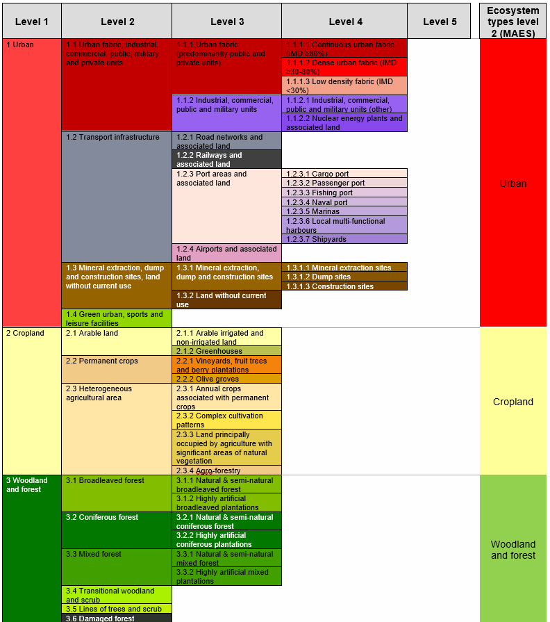
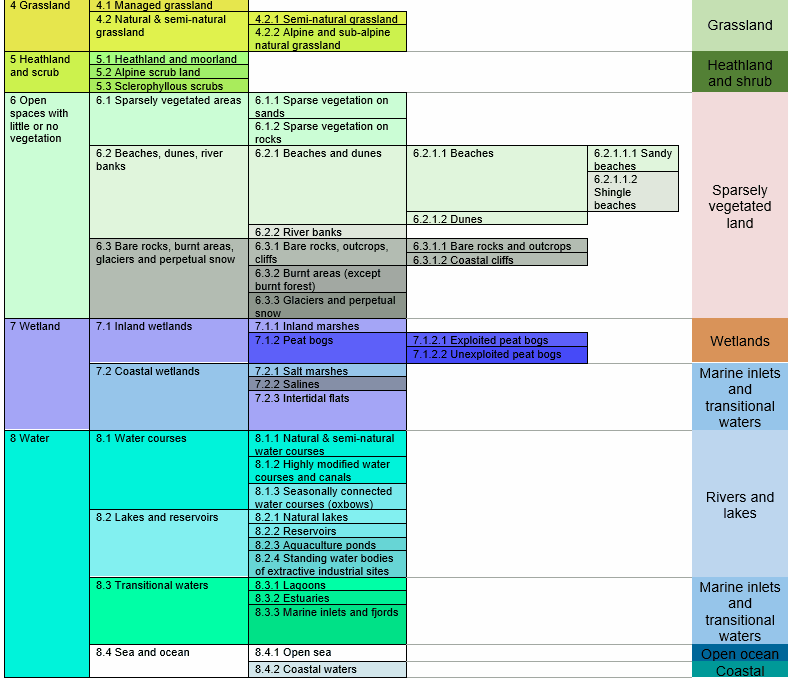
4 Mapping Rules
Object Delineation:
Object delineation is performed on VHR EO data (see Table 1) as primary data source. In areas, where two or more satellite scenes overlap, the most suitable scene is chosen as primary data source. In this regard a detailed prioritization system has been established considering especially acquisition year and acquisition month.
In cases where clouds or cloud shadows cover the area of interest alternative image data can be used. Low resolution images (e.g. Sentinel-2) can mitigate gaps according to land cover type (e.g. small gaps due to clouds on big forest coverage can be mitigated by low resolution images).
Delineation Rules:
Object delineation should be as follows:
Delineation shall be angular and not round.
Avoid digitizing too many vertices: Use vertices as few as possible and only as many as necessary to define the shape of an object.
Avoid mapping sharp angles.
Use road centres (roads < 10m width) as border between two objects if roads separate two features. E.g. a forest and an agricultural area are separated by a road feature < 10m width. Map the border between forest and agriculture in the middle of the road.
Minimum Mapping Unit (MMU) / Minimum Mapping Width (MMW):
The minimum mapping unit defined is ≥ 0.5 ha for all objects. A minimum width of ≥ 10m is required for all features.
MMU Exceptions:
- Objects located at the border of the Area of Interest:
If an object is cut by the AoI border and the portion lying inside the AoI therefore is < 0.5 ha, this feature is mapped, if the whole object (inside and outside the AoI) amounts to ≥ 0.5 ha. However, the MMU of those divided features lying inside the AoI shall have a MMU of at least ≥ 0.1 ha. Smaller objects will be generalized.
Linear features (roads, railways, rivers) that are split in two or more polygons by other linear elements (e.g. the road/railway network) will be mapped even if the resulting segments are smaller than the MMU in order to preserve the network. However, features < 0.1 ha will be generalized.
Urban objects which are confined by roads or railways. Features < 0.25 ha will be generalized.
Complex changes (see below).
MMW Exceptions:
- To maintain continuity of linear features (Codes 1.2.1, 1.2.2, 8.1.1 and 8.1.2); the MMW may fall below the limit of 10 m over a distance of up to 100m.
Good Practice for Data Display – Mapping Scale:
On-screen mapping scale is 1:5.000-1:10.000 depending on the landscape and feature class. Large homogeneous objects like agricultural areas or woodland are mapped at scales 1:8.000-1:10.000. For all other features, 1:5.000 mapping scale is applied.
Overlap Rules:
Objects may not overlap. In case of real objects overlay, the following rules apply:
If objects overlap on different levels, the top level is mapped. Example: if an artificial canal overlaps a river, the canal is mapped continuously.
If objects overlap on the same level, the visually dominant object is mapped continuously. However, if roads and railways meet on the same level, railways are mapped continuously to maintain the railway network.
Priority Rules:
The priority rules applied are defined as follows:
Objects < 0.5 ha are added to the neighbouring object of the same sub-class.
Objects < 0.5 ha are added to the neighbouring object with the longest common border line. Exception: Objects surrounded by railways or roads. If an object is below the MMU size and completely surrounded by a road or railway network, it shall be aggregated with that surrounding traffic line. However, an exception is made for urban objects. Please see respective definition with classes 1 Urban.
Water level rules
Differences due to different water levels are not considered as a land cover / land use change. The reference year 2012 serves as basis for the LC/LU mapping and the water level of 2012 will be delineated. If there are temporal fluctuations of water level between 2012 and 2018 following procedures will be applied:
- Flood event:
A flood event is an exceptional situation and not considered as a "Different water level". In case of a flood event the actual/real LC/LU should be mapped (use EU Hydro, OSM or adequate data sources for identification). In those cases no comment "Different water level" but “Flooded area” will be allocated.
- Higher water level in 2012:
In case of a higher water level in 2012, the water level of 2012 will be mapped, and the temporal dried up areas in 2018 will not be mapped. The water areas will be flagged with the comment "Different water level".
- Higher water level in 2018:
In case of a higher water level in 2018, the water level of 2012 will be mapped. The areas covered by water in 2018 get mapped with the actual land cover of 2012 and get attributed with the comment "Different water level"
- Different water level on coastline
The coastline is derived from the adapted product of the EU-Hydro coastline. This coastline will not be changed even if the imagery shows different water level. In the case of different water levels due to tides the polygons should get the comment "Different water level".
- Flagging of polygons due to different water level should just be applied if the MMW and MMU specifications are met, the difference should be lager then 0,5 ha and wider than 10m.
Geometric inconsistencies between 2012 and 2018
Sometimes geometric inconsistencies between 2012 and 2018 can be seen on image data. In this case the delineation will be performed as follows:
2012 LC/LU will be mapped according to image geometries (2012 is base geometry).
2018 LC/LU will not be changed due to image distortion. In case of real LC/LU changes these will be “interpolated” based on the 2012 image geometries.
Application of Additional Data Sources:
For data interpretation, additional data sources like CORINE Land Cover (CLC) 2012/2018, Urban Atlas (UA) 2012/2018, Riparian Zones mapping (RZ) 2012/2018, Natura2000 mapping (N2K) 2012, topographic maps, national WMS services, COTS navigation data and auxiliary data including local expertise is used.
RZ and N2k: existing Hot Spot Mappings are fully integrated in the CZ dataset.
UA2012/2018: UA data are partly integrated in the CZ dataset. Suitable classes are selected and after adaptation of geometries integrated in the CZ dataset.
CLC2012/2018: CLC is used as important data source for class assignment. CLC data use ensures data compatibility between CLC and CZ.
In-situ data: Diverse national in-situ data like WMS services, specific maps or classifications as well as descriptions and maps of N2000 or RAMSAR sites are used to support the object interpretation.
Allowed Comments:
In order to clarify certain mapping delineations, there are some comments defined as product attributes.
| Order No | Description; Note | Comment |
|---|---|---|
| 1 | Polygons < 0.5 ha at outer AoI site boundary, that have an apparent continuation outside the AoI boundary visible on the image data. | "Area size exception (at Coastal Zones AoI boundary)" |
| 2 | Polygons < 0.5 ha inside AoI site boundary; e.g. to ensure continuity of road/rail/river network at intersections of these classes. Urban objects confined by roads or railways ≥ 0.25 ha up to < 0.5 ha. | "Area size exception (inside Coastal Zones AoI boundary)" |
| 3 | Changes over several classes. Each change is < 0.5 ha but overall change (=sum of individual change areas) is > 0.5 ha. | "Splitted change" |
| 4 | Polygons < 0.5 ha with no change but connected to change polygons (same code at a neighbouring polygon in one of the two years). | "Areas related to change" |
| 5 | For areas completely or partially flooded by water (flooded land). Flooding should be an exceptional event and only be used with classes which are not part of a riparian, lake or coastal system. The comment is given only in the year of the flooding event. | "Flooded area 2012" or “Flooded area 2018” |
| 6 | Different water levels in image data which shows no flood event and occur regularly (e.g. tide on the coastline, difference in water level of reservoirs and dams, seasonal changes of water discharge of rivers). Regarding delineation see above water level rules. | "Different water level" |
5 Definition and rules for change mapping
Following definitions and rules for Land Cover Change (LCC) mapping are based on the LCC rules of Corine Land Cover (CLC). The given rules were adopted and expanded to the Natura 2000, Riparian Zone and Coastal Zones specifications and requirements.
5.1 V.I Mapping of Land Cover Change in Coastal Zones project
In the Coastal Zones project, change mapping is carried out by visual interpretation of 2012 LC/LU vector data and satellite imagery of the timeframe 2018 and subsequent direct delineation of change polygons.
The basis of identification of changes is the interpretation of detectable land cover differences on satellite images from 2012 and 2018. The use of ancillary data is recommended.
Interpreters must be aware that not every change visible on the images should be treated as changes, e.g.:
transient phenomena such as floods and temporary water-logging;
seasonal changes in natural vegetation;
seasonal changes in agriculture, such as effects of crop rotation on arable land;
forest plantation growth, still not reaching the height and/or canopy closure of forest;
changes of water level;
temporal changes in water cover of fishpond cassettes being part of their management;
seasonal changes of snow spots in high mountains.
…
The introduction of false changes must also be avoided. Many of these can and should be excluded by pure logics. These vary from country to country (e.g. while normally sea water does not change into pasture, it might happen in the Netherlands), thus following examples are not exhaustive and not binding for all cases. However, in most cases they can be considered valid.
Highly improbable changes are for example (not a complete list):
Classes 1.1.1 Urban fabric (predominantly public and private units) 🡪 any other class than urban: urban areas seldom disappear.
Classes 5 Heathland and scrub 🡪 3.x.1.0: bushy vegetation classes of different climatic zones do not change between each other.
8.1.2 Highly modified natural water courses 🡪 any other class: highly modified natural water courses and canals do not change to another class.
etc.
Minimum Mapping Unit and Minimum Mapping Width for changes
The Minimum Mapping Unit (MMU) for LCC was set to ≥0.5 ha.
The Minimum Mapping Width (MMW) of ≥10 m is also valid for the LCC polygons.
Exceptions from MMU are defined where a generalization of change objects < 0.5 ha is not reasonable because it would discard valuable information:
Simple Change: Changes located at the border of a CZ AoI that continue outside, forming together objects of ≥ 0.5 ha. Those polygons will have the common attribute that is given for objects cut by CZ border. Objects < 0.05 ha will be generalized.
Complex Change: When a LCC polygon ≥ 0.5 ha is formed by several polygons, also polygons < 0.5 ha have to be considered. See also 0. Complex changes. As the minimum mapping size for single change polygons of complex changes 0.05 ha is proposed.
Single changes < 0.05 ha will be generalized.
Land Cover Changes are changes that occur between the timespan 2012 (+/- 2 years) and the timespan 2018 (+/- 1 year). Changes resulting from different interpretations of the same subject are not considered as change.
Direct delineation of changes
Change polygons are drawn directly over the corresponding image by visual interpretation and are not generated automatically by a GIS operation.
5.2 V.II Simple change
Simple changes are modifications where either a single polygon changes from one LC/LU class to another or a new polygon ≥ 0.5 ha emerges within an existing, larger polygon.
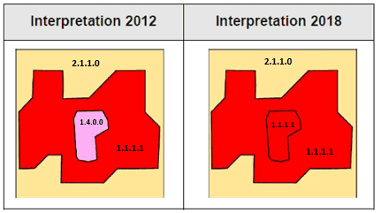
5.3 V.III Complex changes
Although the MMU for change mapping is 0.5 ha, in some cases change polygons < 0.5 ha are also mapped. When a new polygon is formed by taking area from several other polygons (e.g. a road construction, urban growth, …), the individually connected change parts can be mapped even if they are < 0.5 ha, given they altogether make up a ≥ 0.5 ha complex change polygon (shown in Figure 2).
The minimum mapping unit for single polygons of complex changes is: ≥ 0.05 ha
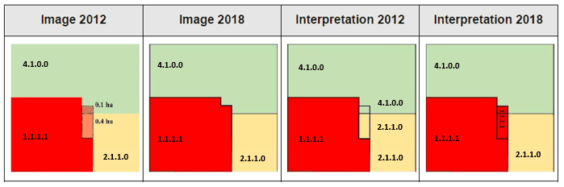
Explanation of shown figure: In 2018 urban area (1.1.1.1) has taken 0.1 ha from managed grassland (4.1) and 0.4 ha from arable land (2.1.1). That means in 2018 we have one single class and in 2012 two different classes <0.5ha. These two changes make up a complex change area of 0.5 ha.
Complex changes have to have a common attribute (“splitted change”) in 2012 and in 2018 and must make up altogether ≥ 0.5 ha.
Every mapped complex change should result in a correct status mapping of 2012 and 2018. The derived status maps need to fulfil the mapping specifications, especially the Minimum Mapping Unit of 0.5 ha. If all polygons are dissolved by their 2012 level 5 code no object should have an area <0.5 ha (the same applies for 2018 respectively). If this can't be guaranteed the single change parts need to be generalized.
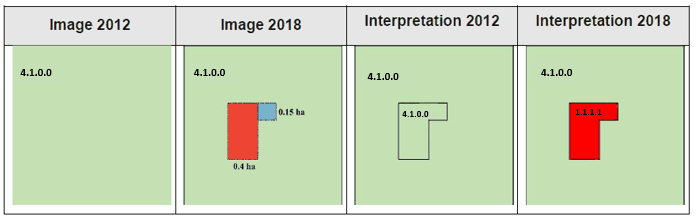
5.3.1 V.III.II Handling changes in, by-definition, change classes — changes at landscape level
CZ nomenclature includes some land cover classes that, by definition, are characterized by a land cover change. These classes are:
1.3.1.1 Mineral extraction sites
1.3.1.2 Dump sites
1.3.1.3 Construction sites
1.3.2 Land without current use
3.4 Transitional woodland and scrub
If a construction site in 2012 is visible, a new construction, mainly urban, is likely to be visible in 2018 as well. If a construction site in 2018 is visible, another former land use, is likely to be visible in 2012.
Transitional woodland indicates that a regrowth of forest should appear from 2012 to 2018 or deforestation between 2012 and 2018 (exception possible).
6 Description of Mapping Features
The following table represents a high-level description of the CZ nomenclature structure. The full overview including the class hierarchies can be found in Table 2, the detailed class definition can be found in this chapter further below.
| Level 1 | Description |
|---|---|
| 1 Urban | The definition of urban areas in general is under the Urban Atlas guidelines. The level 2 separates the urban fabric from transportation network, construction & dump sites and green urban areas (including sports facilities). On level 3, the urban fabric class distinguishes between residential and industrial purposes. Transport infrastructure is divided into road, railway, port and airport. Finally, land without current use is split from its class siblings to form a class on its own on this level. The level 4 further differentiates the density of urban fabric (continuous, urban dense, low dense) and the specific purpose of industrial sites (separating nuclear energy plants from all other industrial sites). As the main focus lies on the coastline, harbours are further divided into seven kinds according to its purpose (cargo, passenger, fishing or naval port, marinas, local multi-functional harbours and shipyards). On this level, construction sites, mineral extraction, dump sites are split into individual classes. |
| 2 Cropland | On level 2, classes are defined according to the CORINE nomenclature (CORINE Technical Addendum 2000). Three main classes are separated:
On level 3 arable land is divided between “arable irrigated and non-irrigated land” and greenhouses. Permanent crops are differentiated between low stem plantations of fruit trees and berries including vineyards on one side and olive groves on the other. The mixed class of “heterogeneous agricultural areas” distinguishes between certain agricultural practices (“Annual crops associated with permanent crops”, “Agro-forestry”) and the amount of natural vegetation on those areas (“Complex cultivation patterns”, “Land principally occupied by agriculture with significant areas of natural vegetation”). |
| 3 Woodland and forest | Level 2 differentiates main types of forests:
Transitional woodland and scrub, lines of trees and scrub as well as damaged forest are also included in level 2. The differentiation of Woodland and Forest on Level 3 is mainly oriented along aggregated EUNIS habitat classes. Main classes are riparian and fluvial forest, swamp forest, other natural and semi-natural forest and highly artificial forest (e.g. plantations), following the EUNIS classification scheme. |
| 4 Grassland | Level 2 differentiates managed grasslands and natural grasslands.
A distinction between dry and mesic grasslands and alpine grasslands are included in level 3. |
| 5 Heathland and Scrub | The level 2 separates Heathland and moorland from areas with sclerophyllous scrubs and alpine scrub land following the CORINE Land Cover guidelines. |
| 6 Open spaces with little or no vegetation | Differentiation of level 2 into three categories: “Sparsely vegetated areas”, “Beaches, dunes, river banks” and “Bare rocks, burnt areas, glaciers and perpetual snow” in order to separate vegetation classes from non-vegetated surfaces on different substrates. On level 3, a further split of sparsely vegetated areas depending on the substrate (sparse vegetation on sands vs. sparse vegetation on rocks) and their water related location (beaches and dunes as well as river banks). On non-vegetated surfaces the parent class 6.3 differentiates between “Bare rocks outcrops, cliffs”, “Burnt areas (except burnt forest)” and “Glaciers & perpetual snow”. On level 4 “Beaches and dunes” are now split into individual classes as well as “Bare rocks, outcrops and cliffs” are divided in “Bare rocks and outcrops” and “Coastal cliffs”. Beaches differentiate on level 5 between “Sandy beaches” and “Shingle beaches”. |
| 7 Wetland | On level 2 the class distinguishes between inland wetlands and coastal wetlands. Level 3 splits the inland wetlands into inland marshes and peat bogs. Coastal wetlands are comprised of salt marshes, salines and intertidal flats. On level 4 peat bogs are divided in exploited and unexploited. |
| 8 Water | On level 2 Water is distinguished into water courses, lakes & reservoirs, transitional waters and sea and ocean. On level 3 water courses are differentiated because of their type (natural/semi-natural, highly artificial, separated from main water course). The lakes and reservoir distinguish between the nature of a water body (natural/semi-natural vs. highly artificial) and its purpose (aquaculture ponds, standing water bodies of extractive industrial sites). Transitional waters at the coast discriminate between lagoons, marine inlets and fjords as well as estuaries. Sea and ocean or divided into open sea and coastal waters. |
The nomenclature of the Coastal Zone mapping is based on a five-digit system representing the thematic Levels 1 - 5. Level 1 represents the highest rank in the hierarchical system and is the most generic level. Each of the 8 Level 1 parent classes is further subdivided into sub classes (or child classes) one or several more times representing the Levels 2 - 5. For consistency purposes in the mapping data, classes ending on Levels 2 - 4 are filled up with "0" if they are not further subdivided, so every class has a five-digit code on Level 5 (e.g. "2.1.1.0.0 Arable irrigated and non-irrigated land").
Important Note:
For better reading of this guideline, no "0" are displayed in the codes resulting in a different number of digits of codes of the most specific child class.
In order to better distinguish between a parent class (on any hierarchical level) and the last child class, parent classes are referred to as e.g. "classes 6.2.1 Beaches and dunes" indicating that all child classes within this parent class are addressed.
1 Urban
The urban classes contain land that is covered by building structures and transport network. Urban fabrics appear in blue and darkish blue-grey on satellite images.
The establishment of the boundary between continuous, dense and low-density urban fabric can be difficult to delimit. The main aspects to determine these classes are either by the presence and quantity of vegetation, or by the use of the IM.D HRL.
From the UA Mapping Guide:
Surfaces with dominant human influence but without agricultural land use. These areas include all artificial structures and their associated non-sealed and vegetated surfaces.
Artificial structures are defined as buildings, roads, all constructions of infrastructure and other artificially sealed or paved areas.
Associated non-sealed and vegetated surfaces are areas functionally related to human activities, except agriculture.
Also, the areas where the natural surface is replaced by extraction and/or deposition or designed landscapes (such as urban parks or leisure parks) are mapped in this class.
The land use is dominated by permanent population.
Specific generalization/delineation rules are applied for urban classes:
Segments of roads, rivers and railways < 0.5 ha, that are necessary to represent the “network” of each feature will be mapped. Features < 0.1 ha will be generalized.
Urban objects confined by roads or railways ≥ 0.25 up to < 0.5ha. Smaller urban objects will be generalized.
If an infrastructure line is crossing a river, the bridge has to be mapped if the bridge is wider than 10 meters.
Specific generalization rules are applied to 1.1.1.3 Low density fabric (IM.D <30%), (see description of the specific class).
This category includes:
1.1 Urban fabric, industrial, commercial, public, military and private units
Urban fabric contains land covered by artificial structures and transport networks. Industrial or commercial units are almost completely covered by artificial surface.
1.1.1 Urban fabric
1.1.1.1 Continuous urban fabric (IM.D ≥80%)
1.1.1.2 Dense urban fabric (IM.D ≥30-80%)
1.1.1.3 Low density urban fabric (IM.D <30%)
1.1.2 Industrial, commercial, public and military units
- 1.1.2.1 Industrial, commercial, public and military units (ther)
- 1.1.2.2 Nuclear energy plants and associated land
1.2 Transport infrastructure
Motorways, roads and railways with its associated land and installations are included in this class if width >10 m. Airports and port areas with installations and associated land are included. If an infrastructure line is crossing a river, the bridge has to be mapped if the bridge is wider than 10 m.
1.2.1 Road networks and associated land
1.2.2 Railways and associated land
1.2.3 Port areas and associated land
1.2.3.1 Cargo port
1.2.3.2 Passenger port
1.3.3.3 Fishing port
1.3.3.4 Naval port
1.3.3.5 Marinas
1.3.3.6 Local multi-functional harbours
1.2.4 Airports and associated land
1.3 Mineral extraction, dump and construction sites, land without current use
Dump sites include public, industrial or mine dump sites. Construction development, soil and bedrock excavations and earthwork are included in this class. Land without current use is land that is in transitional phase and it is included in urban areas.
1.3.1.1 Mineral extraction sites
1.3.1.2 Dump sites
1.3.1.3 Construction sites
1.3.2 Land without current use
1.4 Green urban, sports and leisure facilities
Green urban areas are areas with vegetation within the urban fabric and it includes parks. Sports and leisure facilities are included (camping grounds, sport grounds, leisure parks, golf courses, racecourses, etc.). It also comprises parks not surrounded by urban areas.
1.1.1.1 Continuous urban fabric (IM.D ≥80%)
Definition:
Buildings and its associated land together with artificial surfaced areas covers more than 80% of the total surface. Non-linear areas of vegetation and bare soil are exceptional.
The average degree of soil sealing is ≥ 80% for the whole compound.
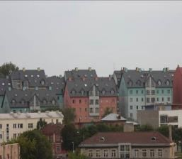
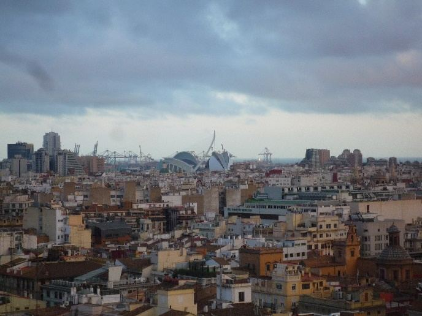
This category includes:
Built-up areas and their associated land with dominant residential use; mostly inner-city areas with central business district as long as there is partial residential use.
Buildings, roads and sealed areas cover most of the area; non-linear areas of vegetation and bare soil.
This category excludes:
- 1.1.2.1 Industrial, commercial, public and military units (other); 1.1.1.2 Dense urban fabric (IM.D ≥30-80%); and 1.1.1.3 Low density urban fabric (IM.D<30%).
Attributes:
- N/A
Appearance:
Urban fabric appears in blue or dark blue /grey colours on satellite images.
Distinguishing between different levels of urban fabric has to be done with help of IM.D HRL.
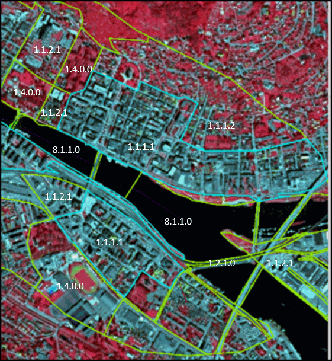
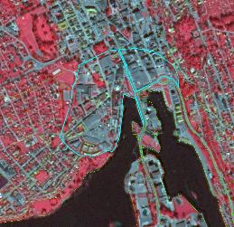
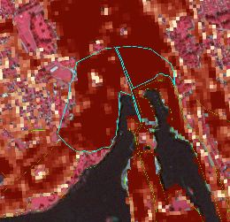
Methodological advice:
If local in-situ data other than UA available, use if suitable.
IM.D HRL has to be used outside UA Core, for delineation support.
For interpretation of urban density: Use IM.D HRL.
1.1.1.2 Dense urban fabric (IM.D ≥30-80%)
Definition:
Predominant residential usage contains more than 30% non-sealed areas, independent of the housing scheme (single family houses or high-rise dwellings, city centre or suburb). The non-sealed areas might be private gardens or common green areas.
The average degree of soil sealing is > 30-80% for the whole compound.
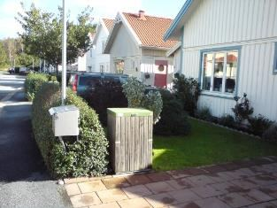
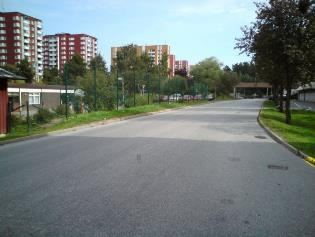
This category includes:
- Predominant residential usage. Contains more than 30% non-sealed areas, independent of their housing scheme (single family houses or high-rise dwellings, city centres or suburb).
This category excludes:
Nurseries with dominant areas of greenhouses (no or only small fields) → 2.1.2 Greenhouses.
Allotment gardens → 1.4 Green urban, sports and leisure facilities.
Holiday villages (“Club Med”) → 1.4 Green urban, sports and leisure facilities.
Attributes:
- N/A
Appearance:
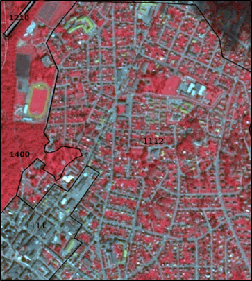
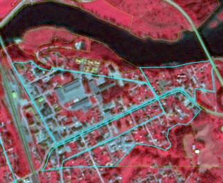
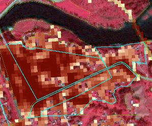
Methodological advice:
If local in-situ data other than UA available, use if suitable.
IM.D HRL has to be used outside UA Core, for delineation support.
For interpretation of urban density: Use IM.D HRL.
1.1.1.3 Low density urban fabric (IM.D <30%)
Definition:
Low density urban fabric contains residential buildings, roads and other artificially surfaced areas. The vegetated areas are predominant, but the land is not dedicated to forestry or agriculture.
The average degree of soil sealing is < 30% for the whole compound.
The build-up areas adjacent to small farms will be included in this class.
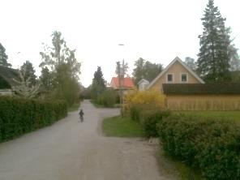
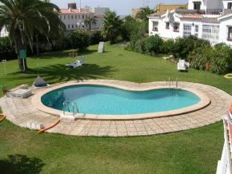
This category includes:
Residential buildings, roads and other artificially surfaced areas. The vegetated areas are predominant, but the land is not dedicated to forestry or agriculture.
Build-up areas on small farms.
This category excludes:
- Allotment gardens → 1.4 Green urban, sports and leisure facilities.
Attributes:
- N/A
Appearance:
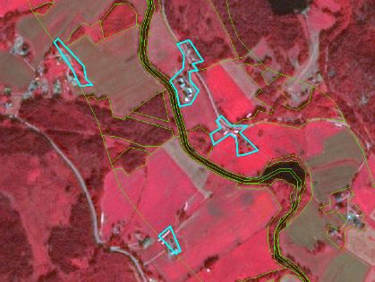
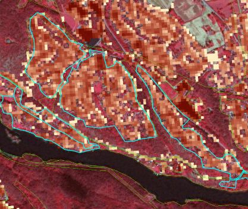
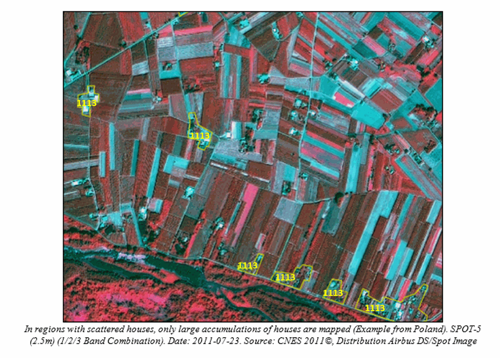
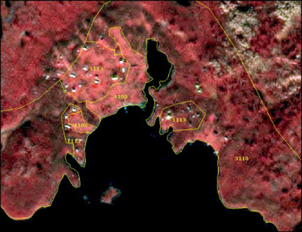
MMU exceptions:
Exceptions from MMU >0.5 ha are made for “1.2.1 Road networks and associated land” and”1.2.2 Railways and associated land” in order to keep the network formed by these linear features (always with 0.1 ha < MMU < 0.5 ha).
Further exception is all urban elements being encircled by rails, roads or rivers. In those cases, urban features up to a MMU of 0.25 ha are kept and flagged with comments (“Area size exception”).
MMW exceptions:
- To maintain continuity of linear features (1.2.1 / 1.2.2 / 8.1.1 / 8.1.2), the MMW may fall below the limit of 10 m over a distance of up to 100 m.
Methodological advice:
If local in-situ data other than UA available, use if suitable.
IM.D HRL has to be used outside UA Core, for delineation support.
For interpretation of urban density: Use IM.D HRL.
Generalisation rules:
If a strict MMU >0.5 ha mapping of 1.1.1.3 Low density fabric (IMD <30%) is applied, the low urban density areas would be underestimated. Therefore, to get a good representation of the area, the following generalisation rules will be adopted:
Do not apply the 10 m MMW distance rule at the urban fringe but apply a < 50m MMW to generalize outline.
Include private gardens.
Avoid mapping of single urban segments.
Map the “whole structure”.
Close gaps at the urban fringe applying a maximum width of 50 m.
In any case, real agricultural/grassland parcel contained within urban surroundings, will be mapped as agricultural/grassland.
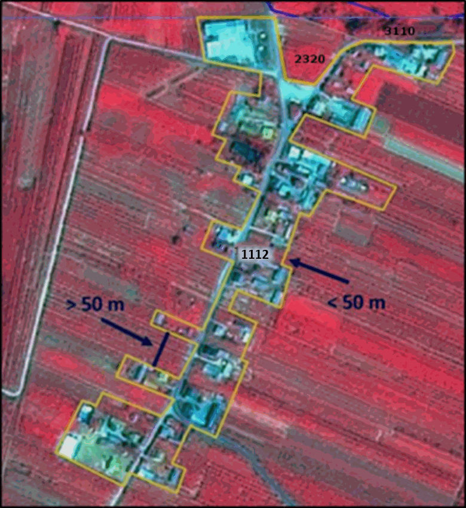
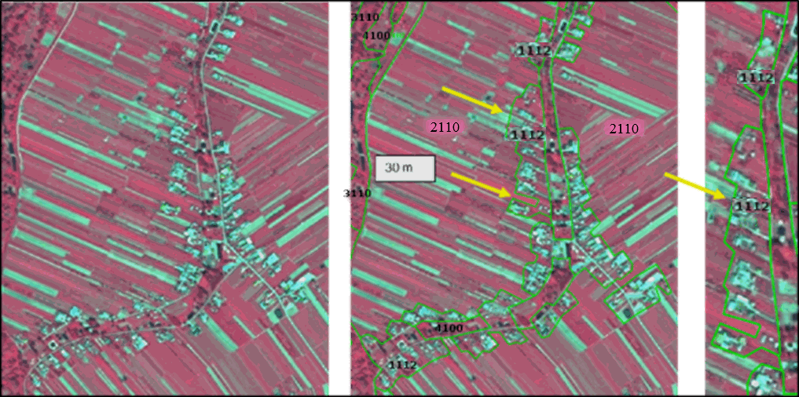
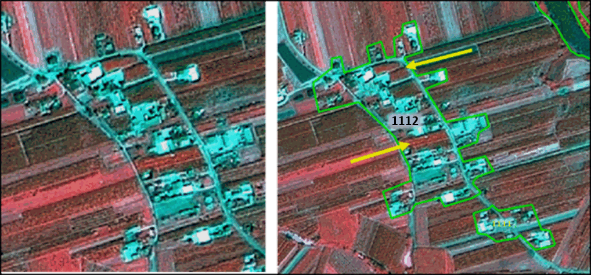

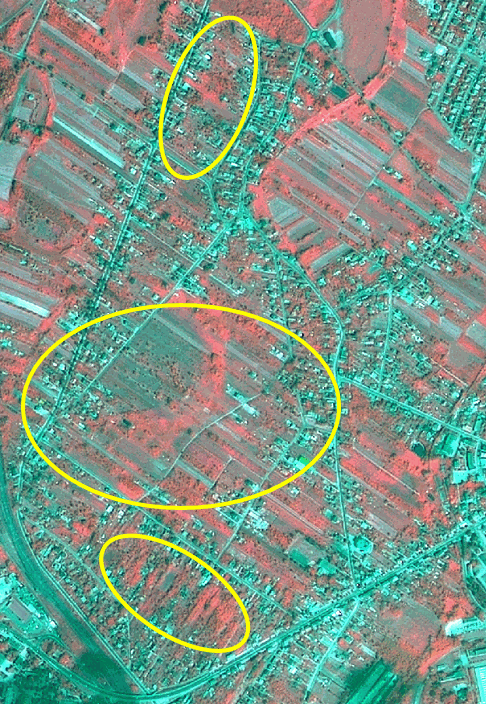
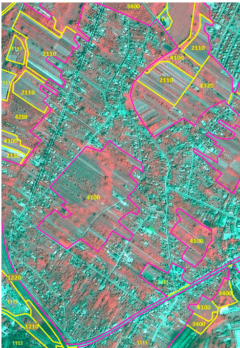
Use of auxiliary data:
If UA is available, keep the outline and just correct real errors. “Fine-tuning” of the class borders is not necessary.
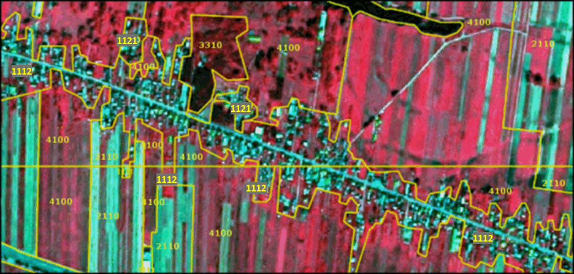
If OSM delineation is too precise, please correct real errors and perhaps parts of the outline.
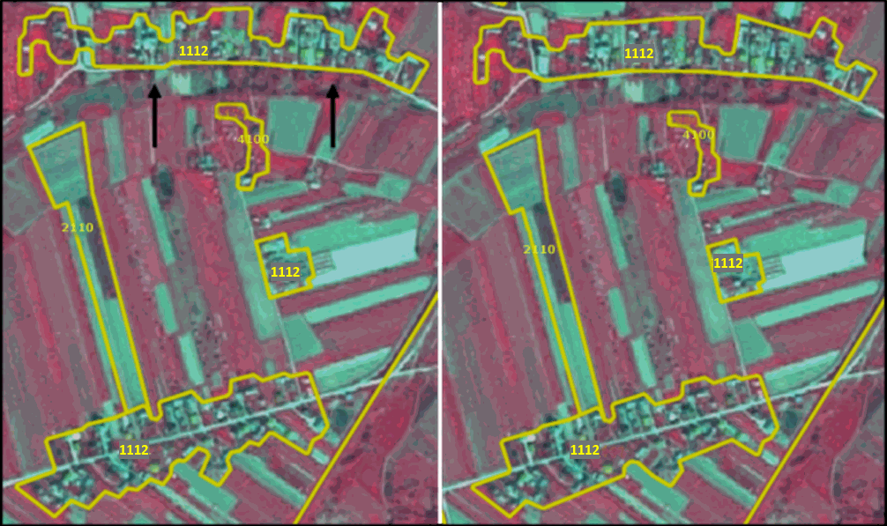
1.1.2.1 Industrial, commercial, public and military units (other)
Definition:
This category contains Industrial, commercial, public and military units. Included in this class are also all kinds of energy producing facilities except nuclear energy plants. The administrative border and associated areas, such as roads, sealed areas and vegetated areas are included, if these areas are below the MMU. It also contains public, military and private services.
At least 30% of the ground is covered by artificial surfaces. More than 50% of those artificial surfaces are occupied by buildings and/or artificial structures with non-residential use, i.e. industrial, commercial or carriage related uses are dominant.
The texture is homogenous with large buildings, car parks and sheds representing industrial or commercial complexes. Industrial or commercial units located in urban fabric are only taken into account if they are clearly distinguishable from residential areas.
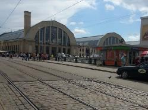
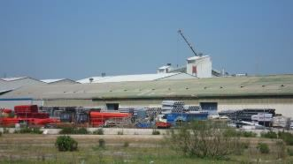
This category includes:
Industrial uses and related areas:
Sites of industrial activities, including their related areas.
Production sites.
Energy plants (except nuclear energy plants): solar, hydroelectric, thermal, electric and wind farms.
Refineries
Farming industries (farms with large buildings and / or greenhouses below MMU, not production fields).
Antennas, even with predominant vegetated areas. The vegetated areas may be predominant, but the land is not dedicated to forestry or agriculture.
Lighthouses
Water treatment plants, sewage plants and seawater desalination plants.
Stud farms, agricultural facilities (cooperatives, state farm centres, livestock farms, living and exploitation buildings).
Oil camps including administrative area.
Abandoned industrial sites and by-products of industrial activities where buildings are still present.
Water retention infrastructure (dam) and hydro-electric stations.
Telecommunication networks (relay stations for TV, telescopes, radars) including associated land.
Bare soil/grassland used for storage of material next to industrial sites.
Commercial uses, retail parks and related areas:
Surfaces purely occupied by commercial activities, including their related areas (e.g. parking areas even larger than the MMU).
High-rise office buildings.
Petrol and service stations within built-up areas.
Large shopping centres.
Public, military and private services not related to the transport system:
Surfaces purely occupied by general government, public or private administrations including their related areas (access ways, lawns, parking areas).
Schools and universities research and development establishments, including associated areas like sports fields, meadows also if > 0.5 ha whenever they are inside the administrative limit.
Hospitals and other health services or buildings.
Places of worship (churches / cathedrals / religious buildings).
Active archaeological sites and museums, near to urban areas.
Administration buildings, ministries.
Penitentiaries.
Military areas excluding naval ports and airports.
Sealed military exercise areas fenced and under current use.
Castles, etc. not primarily used for residential purposes (building management, etc.).
Private storage areas without a residential component, such as compounds of garages.
Company benefit schemes (retirement home, convalescent homes, orphanages, etc.).
Exposition sites, fair sites.
Military barracks, test tracks, biological waste water treatment plants, water houses, transformers. The administrative boundary should be included and also associated land like storage space or meadows.
Cemeteries.
Jetties without boats (boats belong to the water body), if the jetties are not part of a port area.
Civil protection and supply infrastructure:
Dams and dikes if they are un-vegetated.
Irrigation and drainage canals and ponds and other technical public infrastructure, to be mapped with the roads, embankments and associated land included.
Includes also breakwaters, sea walls, flood defences, piers (if not part of a port area) and other coastal protection structures if > 0,5ha (MMU).
Locks as a part of shipping infrastructure.
(Ancient) city walls, other protecting walls, bunkers.
Avalanche barriers.
Security, law and order services (fire stations, penal establishments, etc.).
This category excludes:
Nuclear power stations and sites related to nuclear energy production like nuclear reprocessing plants or research reactors → 1.1.2.2 Nuclear energy plants and associated land.
Petrol stations along fast transit and main roads with access only from these roads. They are mapped together with the road transport system → 1.2.1 Road network and associated land.
Public parks → 1.4 Green urban, sports and leisure facilities.
Isolated holiday resorts including their hotels → 1.4 Green urban, sports and leisure facilities.
Sport centres or bathing centres → 1.4 Green urban, sports and leisure facilities.
Noise barriers → 1.2.1 Road network and associated land or 1.2.2 Railways and associated land.
Lines of trees (woody barriers) for shelter or shading → 3.5 Lines of trees and scrub.
Water courses (within e.g. diked canals) if the water area is wider than 10 m → classes 8 Water.
Dams, barrages and lakes of hydropower stations along natural water courses → classes 8 Water.
Piers (if related to port) → classes 1.2.3 Port areas and associated land.
Greenhouse surfaces → 2.1.2 Greenhouses.
Dykes and dams, if they are vegetated → grassland or suitable LC/LU.
Non-active archaeological sites → map according to their actual LC/LU.
Water bodies related to the extractive industry (mines and gravel) → 8.2.4 Standing water bodies of extractive industrial sites.
Toxic lake, used for disposal → 8.2.4 Standing water bodies of extractive industrial sites (if additional information is available indicating that the lake is used for industrial purposes; if no information is available: 8.2.1 Natural lakes or 8.2.2 Reservoirs).
Small (usually temporal) agricultural dump sites (hay storage, manure, organic material, silage), if there is no other (permanent) storage or industrial facility in the neighbourhood → 1.3.1.2 Dump sites.
Afforestation setting, but used as transect for power line poles; power line poles visible → Current LC/LU.
Open grassland, wood or other natural areas > 0,5 ha (MMU) within the boundaries of military sites → respective LC class.
Attributes:
- N/A
Appearance:
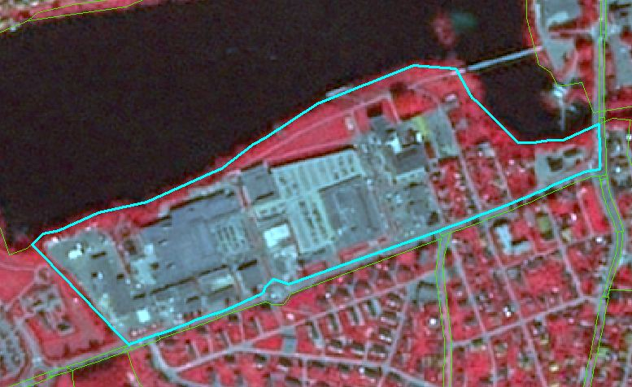
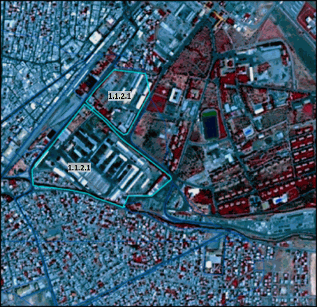
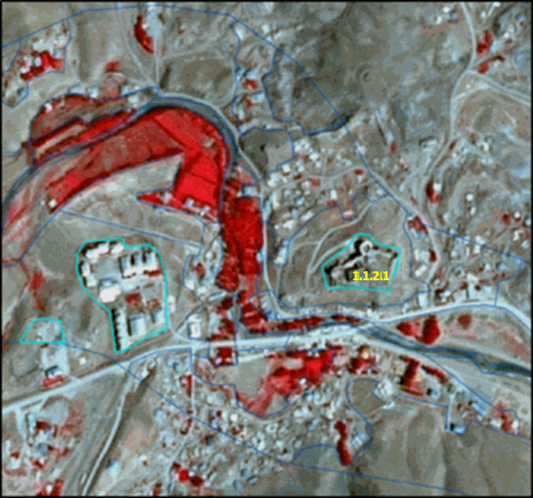
Methodological advice:
If local in-situ data other than UA available, use if suitable.
For interpretation of urban density: Use IM.D HRL.
Interpretation of dams and associated land:
Map dams as follows:
Dam and associated infrastructure: 1.1.2.1 Industrial, commercial, public and military units (other).
Channel: 8.1.2 Highly modified water courses and canals.
Water: 8.1.1 Natural/semi-natural water courses.
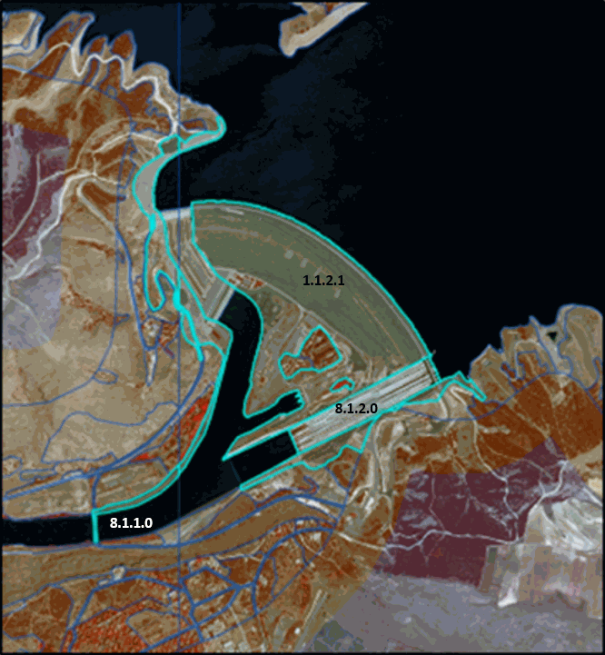
1.1.2.2 Nuclear energy plants and associated land
Definition:
Nuclear power plants pose a risk for coastal areas through thermal pollution and possible contamination of water. This class comprises nuclear power stations near rivers or the sea including reactor blocks, open air water basins and highly artificial streams inside the nuclear power station, cooling towers, administrative buildings, facility car parks and associated land inside the fencing. Included are also nuclear reprocessing plants and research reactors. Delineation should follow the fencing of the site.
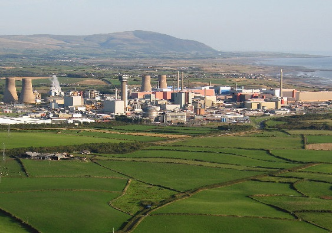
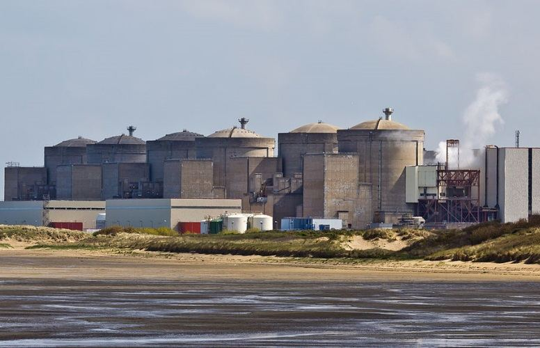
This category includes:
Nuclear power plants, including their related area.
Nuclear reprocessing plants.
Nuclear research reactors not meant for energy production.
Highly artificial water bodies inside the nuclear energy plant.
This category excludes:
Water surfaces belonging to the sea or a river not predominantly enclosed by man-made structure of the facility→ classes 8 Water.
Power lines leaving the enclosed area → map according to land cover.
Docking station for ships → 1.2.3.1 Cargo port.
Attributes:
- N/A
Appearance:
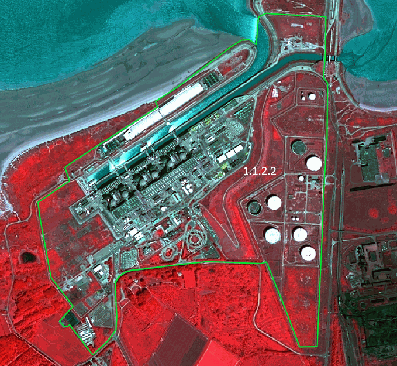
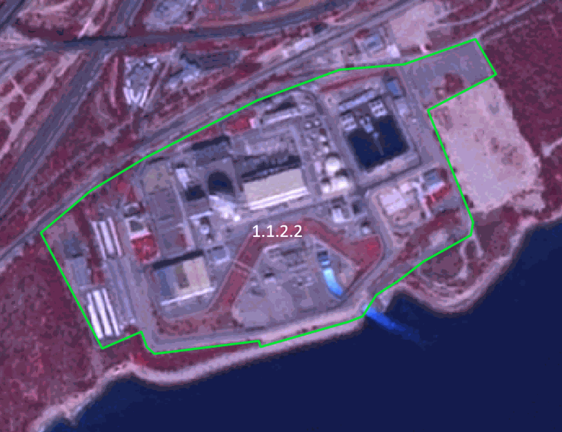
Methodological advice:
- If local in-situ data other than UA available, use if suitable.
1.2.1 Road network and associated land
Definition:
Road network and its associated land. In this sense, a road is identified as the route with a specially prepared surface that is intended for use by wheeled vehicles. MMU for roads is >=10m.
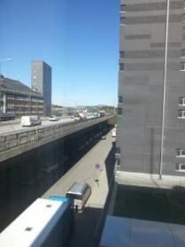
This category includes:
Roads, crossings, intersections and parking areas, including roundabouts and sealed areas with “road surface”.
Slopes of embankments or cut sections.
Areas enclosed by roads or railways, without direct access and without agricultural land use, not representing any Urban categories and whenever below MMU.
Fenced areas along roads (e.g. as for protection against wild animals).
Areas enclosed by motorways, exits or service roads with no detectable access, if they are below MMU.
Non-woody noise barriers (fences, walls, earth walls) adjacent to roads.
Rest areas, service stations and parking areas only accessible from the fast transit roads.
Foot- or bicycle paths parallel to the traffic line.
Closed-down roads.
Green strips, alleyways (with trees and bushes), if less than 10m.
This category excludes:
Motorways under construction → 1.3.1.3 Construction sites.
Closed-down roads (classified under the real appropriate land cover category) if MMW less than 10m.
Land plots > 0.5 ha surrounded but roads and not considered as associated land → Current land cover category.
Non-sealed dirt tracks and forest roads, even if >10m → Generalize to adjoining LCLU class.
Attributes:
- N/A
Appearance:
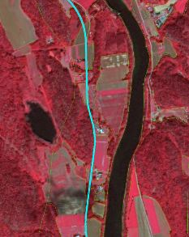
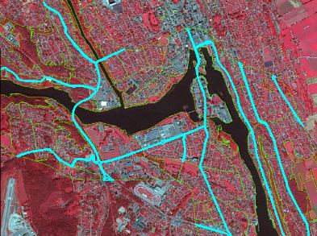
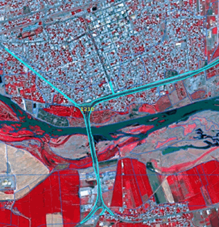
Methodological advice:
If local in-situ data other than UA available, use if suitable.
Use COTS transport infrastructure data.
Roads will be used from COTS navigation systems, where available. In case of geometrical differences between EO data and COTS navigation data, the COTS navigation data has to be corrected in line with the EO data.
Roads do not necessarily have to form a closed network. Isolated traffic lines are possible, but they have to be mapped with regard to the MMU criterion.
Associated land < 0.5 ha MMU is mapped with the roads as it is visible in the EO data and topographic maps.
If a road is covered by a tunnel, the LU/LC over the tunnel has to be mapped.
Specific generalisation rule:
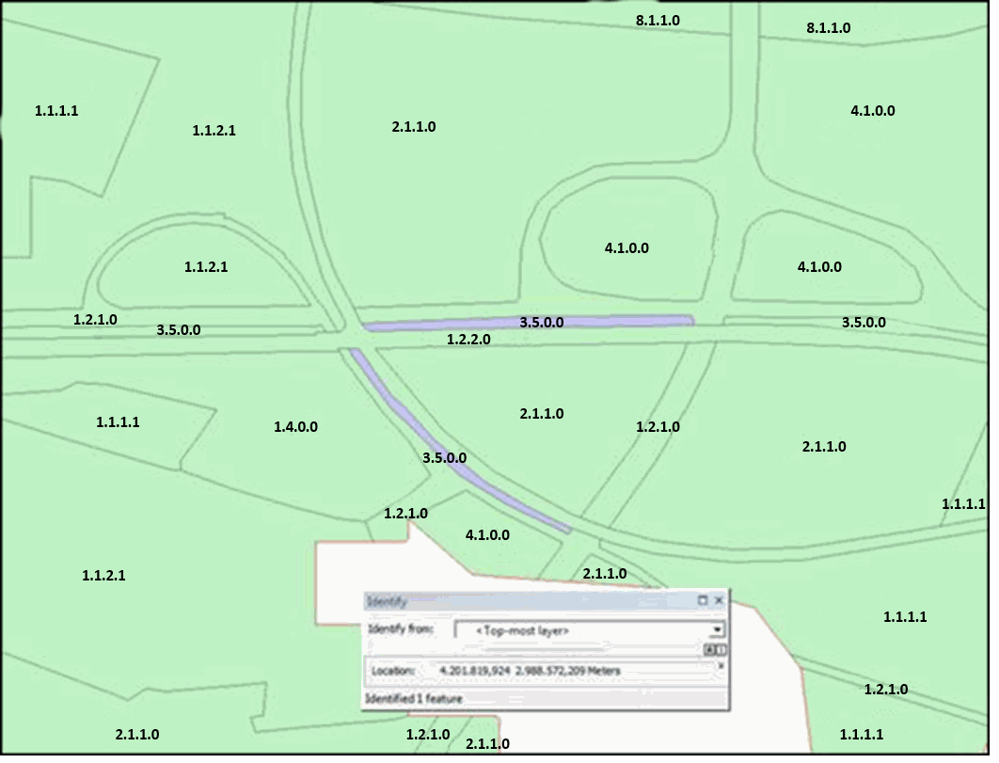
1.2.2 Railways and associated land
Definition:
Railways and its associated land. In this sense, a railway is identified as one or more railway tracks comprising a network that is operated for the conveyance of passengers and/or goods. MMU for railways is >=10m.
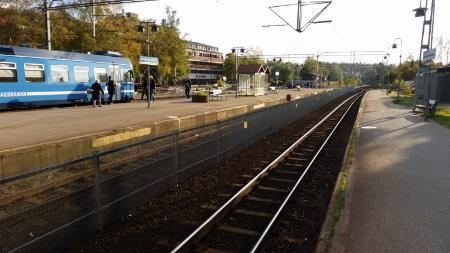
This category includes:
Railway facilities including stations, cargo stations and service areas.
Closed-down rails ≥ 10m MMW and where infrastructure is still visible.
Mono-rails and funiculars if ≥ 10m MMW
This category excludes:
Rails ending in industrial sites→ 1.1.2.1 Industrial, commercial, public and military units (other).
Tramways → 1.2.1 Road network and associated land.
Railways and high-speed train under construction → 1.3.1.3 Construction sites.
Closed-down transport network (classified under the real appropriate land cover category) if MMW less than 10m.
Attributes:
- N/A
Appearance:

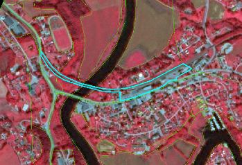
Methodological advice:
If local in-situ data other than UA available, use if suitable.
Use COTS transport infrastructure data, if available.
Railways do not necessarily have to form a closed network. Isolated railway lines are possible, but they have to be mapped with regard to the MMU criterion.
Associated land < 0.5 ha is mapped with the railways as it is visible in the EO data and topographic maps, also in industrial sites.
Railways always form the top-level. They clip all other features.
Minimum mapping width >=10m.
If a railway is covered by a tunnel, the LU/LC over the tunnel has to be mapped.
Generalisation rules:
Secondary railway lines within urban context have to be mapped if they are visible in the images or if they can be supported by ancillary data.
In industrial sites, rail networks are often complicated and hard to delineate in SPOT5/6 if no ancillary data are available. If no auxiliary data are available, map only those railroad features that can be detected with SPOT5/6 data.
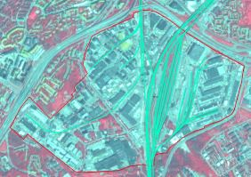
1.2.3.1 Cargo port
Definition:
This class comprises container terminals with special infrastructure to load and unload cargo to and from ships, as well as move and store container on the harbour site. Included are storage areas, lifting devices, containers and quays. Oil and gas terminals adjacent or connected to a port site are also included. Industrial facilities may be situated next to cargo ports. The port delineation only comprises the storage areas for cargo (container, gas and oil tanks, open air coal storage). Areas and facilities for processing goods are considered industrial areas. Cargo ports are usually well connected to major transport infrastructure and often have access to a railway line.
Distinguishable to other port types by large container ships, storage facilities and connection to transport infrastructure. Ships on the water surface are included in the water body.
As many industrial sites at the coast have their own loading facilities, caution should be taken when delineating port areas and the adjoining industrial sites. If a site is primarily used for storage it should be included in the port areas, otherwise, e.g. if production sites are visible, it should be mapped as 1.1.2.1 Industrial, commercial, public and military units (other).

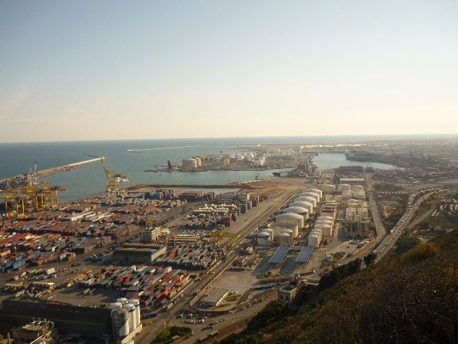
This category includes:
Gas and oil terminals adjacent or connected to a port site.
Coal harbours and associated land (open air coal storage).
Commercial ports.
Storage areas of any size (e.g. car parks for commercial shipping of vehicles).
Administrative area.
Infrastructure of port areas, including quays, transport and storage areas and associated areas.
Shipping infrastructure and port facilities.
Piers, if related to a port.
This category excludes:
Any other type of port or marinas → classes 1.2.3 Port areas and associated land.
Lighthouses → 1.1.2.1 Industrial, commercial, public and military units (other).
If cargo is processed in any kind, e.g. coal power plants or refineries → 1.1.2.1 Industrial, commercial, public and military units (other).
Boats and ships on the water → classes 8 Water.
Port area water connected to open sea → classes 8.4 Sea and ocean.
Port area water connected to river or lakes → 8.1.1 Natural & semi-natural water courses or 8.2.1 Natural lakes.
Highly artificial inner harbour areas (partly) separated from the natural water body → 8.1.2 Highly modified water courses and canals.
Moles, breakwaters and other coastal protection structures, if > 0,5 ha (MMU)→ 1.1.2.1 Industrial, commercial, public and military units (other).
Attributes:
- N/A
Appearance:
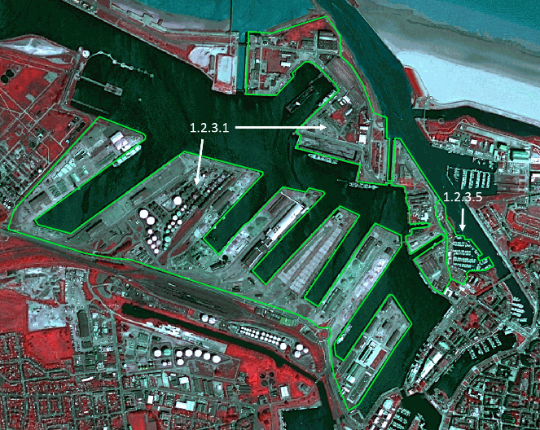
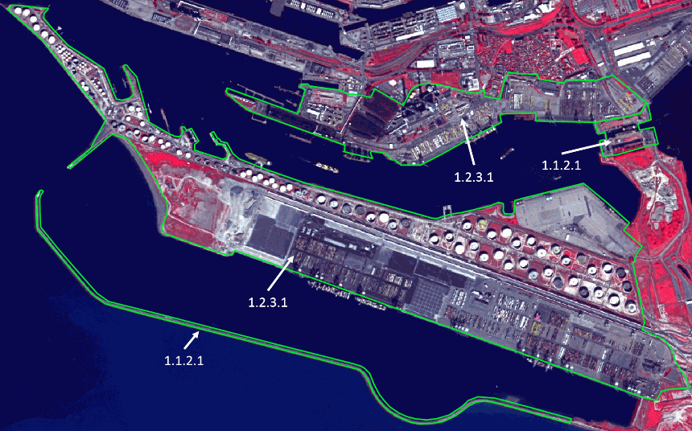
Methodological advice:
- Delineation of harbour areas of different purposes as well as to urban and industrial units may be difficult. If local in-situ data other than UA is available, use if suitable. Decision must be taken in each case individually depending on the LC/LU situation and additional data.
1.2.3.2 Passenger port
Definition:
Public port specialized on transportation of people. Infrastructure includes quays, piers, passenger terminals and large car parks. At passenger ports with car ferries, a large open area for the temporary parking of cars may be available. Also, facilities to restock the supplies of passenger ferries and cruise ships may be visible.
Distinguishable to other port types by ferries of different size including car ferries and the associated infrastructure on land like large passenger terminal buildings. Ships on the water surface are included in the water body.
Passenger ports are often enclosed by fencing and only accessible through main gateways.
Passenger ports are often part of a greater port area in combination with a cargo port and/or a marina.
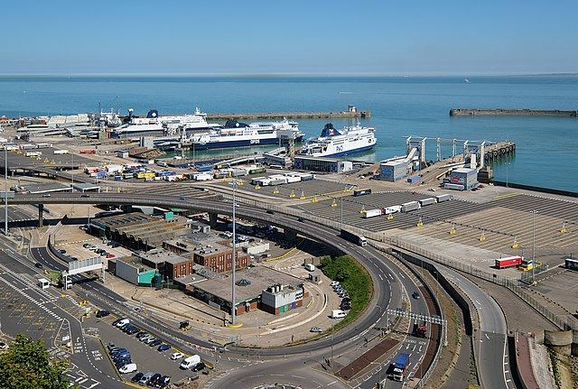
This category includes:
Passenger port area and associated land enclosed by fences or walls.
Infrastructure of port areas, including quays, piers, passenger terminals, transport and storage areas and associated areas.
Shipping and infrastructure port facilities.
Piers, if related to port.
This category excludes:
Any other type of port or marinas → classes 1.2.3 Port areas and associated land.
Lighthouses → 1.1.2.1 Industrial, commercial, public and military units (other).
Boats and ships on the water → classes 8 Water.
Port area water, connected to open sea → classes 8.4 Sea and ocean.
Port area water, connected to river or lakes → classes 8 Water.
Highly artificial inner harbour areas (partly) separated from the natural water body → 8.1.2 Highly modified water courses and canals.
Moles, breakwaters and other coastal protection structures, if > 0,5 ha (MMU)→ 1.1.2.1 Industrial, commercial, public and military units (other).
Attributes:
- N/A
Appearance:
Methodological advice:
- Delineation of harbour areas of different purposes as well as to urban areas may be difficult. If local in-situ data other than UA is available, use if suitable.
1.2.3.3 Fishing port
Definition:
Port designated mainly for fishing purposes.
Boats in harbour basin of a specific type (medium size but broader and less sharp). Fishing nets spread out for drying on the harbour site might be visible. Processing facility nearby needed.
Port areas contain the infrastructure of the port area. Quays, piers and also the transport and storage area associated to the port.
This category includes:
Fishing ports and associated land.
Administrative area and warehouses.
Infrastructure of port areas, including quays, transport and storage areas and associated areas.
Delivery areas.
Shipping and infrastructure port facilities.
Piers, if related to the port.
This category excludes:
Any other type of port or marinas → classes 1.2.3 Port areas and associated land.
Lighthouses → 1.1.2.1 Industrial, commercial, public and military units (other).
Boats and ships on the water → classes 8 Water.
Port area water, connected to open sea → classes 8.4 Sea and ocean.
Port area water, connected to river or lakes → classes 8 Water.
Highly artificial inner harbour areas (partly) separated from the natural water body → 8.1.2 Highly modified water courses and canals.
Moles, breakwaters and other coastal protection structures, if > 0,5 ha (MMU)→ 1.1.2.1 Industrial, commercial, public and military units (other).
Attributes:
- N/A
Appearance:
Methodological advice:
- Delineation of harbour areas of different purposes as well as to urban and industrial units may be difficult. If local in-situ data other than UA is available, use if suitable.
1.2.3.4 Naval port
Definition:
Often in natural bay situations and next to public ports. For loading and unloading heavy military machinery stable and broad piers are needed. Piers and jetties are longer than at other port types since naval ships are large in size.
Naval ships might be visible on water as well as military vehicles on the harbour site. Delineation is according to the fencing of the military area.
Naval port areas contain the infrastructure of the port area, arsenals, heliports and barracks. Quays, piers and the transport and storage area associated to the port are included in this class. Submarine harbours are considered as naval ports.
This category includes:
Naval ports for military ships and associated military area.
Submarine harbours.
Administrative area.
Infrastructure of port areas, including quays, transport and storage areas and associated areas.
Barracks, arsenals, heliports.
Shipping and infrastructure port facilities.
Piers, if related to port.
This category excludes:
Any other type of port or marinas → classes 1.2.3 Port areas and associated land.
Lighthouses → 1.1.2.1 Industrial, commercial, public and military units (other).
Boats and ships on the water → classes 8 Water.
Port area water, connected to open sea → classes 8.4 Sea and ocean.
Port area water, connected to river or lakes → classes 8 Water.
Highly artificial inner harbour areas (partly) separated from the natural water body → 8.1.2 Highly modified water courses and canals.
Moles, breakwaters and other coastal protection structures, if > 0,5 ha (MMU)→ 1.1.2.1 Industrial, commercial, public and military units (other).
Attributes:
- N/A
Appearance:
Methodological advice:
- Delineation of harbour areas of different purposes as well as to urban and industrial units may be difficult. If local in-situ data other than UA is available, use if suitable.
1.2.3.5 Marinas
Definition:
Public leisure facility usually with open access. This class comprises a wide system of small jetties for passenger traffic with many small-scale boats parked tightly next to each other. For its leisure purpose, restaurants, parks and promenades to sojourn are included in this class. Contrary to other port types, boats on the water surface are included in this class because of their high density and rather permanently parked situation.
This category includes:
Administrative area of inland harbours and seaports.
Port area water on marina or yachting ports (small area, not complying with MMU or MMW)
Infrastructure of port areas, including quays, transport and storage areas and associated areas.
Shipping infrastructure and port facilities.
Piers, if related to port.
Boats and related water surface are included
This category excludes:
Any other type of port → classes 1.2.3 Port areas and associated land.
Lighthouses → 1.1.2.1 Industrial, commercial, public and military units (other).
Moles, breakwaters and other coastal protection structures, if > 0,5 ha (MMU)→ 1.1.2.1 Industrial, commercial, public and military units (other).
Attributes:
- N/A
Appearance:
Methodological advice:
- Delineation of harbour areas of different purposes as well as to urban and industrial units may be difficult. If local in-situ data other than UA is available, use if suitable.
1.2.3.6 Local multi-functional harbours
Definition:
Small scale harbour with different purposes and without major economic significance. Often more integrated in an urban area without clearly visible delineation. As a consequence, the delineation is less strict and includes also the nearby area that is influenced by the harbour atmosphere like buildings facing the harbour front, promenades, green urban areas and places to sojourn. If boats in the harbour basin are in a densely parked situation like in marinas, the affected water area is included in the harbour area.
Port areas contain the infrastructure of the port area. Quays, piers as well as the transport and storage area associated to the port are included in this class.
This category includes:
Administrative area.
Immediate surrounding of harbour area not related to harbour activity but dependent on harbour atmosphere for touristic or leisure activity.
Infrastructure of port areas, including quays, transport and storage areas and associated areas.
Small scale fish processing facilities
Shipping infrastructure and port facilities.
Piers, if related to port.
This category excludes:
Ports of greater size with specific purposes or marinas → classes 1.2.3 Port areas and associated land.
Lighthouses → 1.1.2.1 Industrial, commercial, public and military units (other).
Boats and ships on the water → classes 8 Water.
Port area water, connected to open sea → classes 8.4 Sea and ocean.
Port area water, connected to river or lakes → classes 8 Water.
Moles, breakwaters and other coastal protection structures, if > 0,5 ha (MMU)→ 1.1.2.1 Industrial, commercial, public and military units (other).
Attributes:
- N/A
Appearance:
Methodological advice:
- Delineation of harbour areas of different purposes as well as to urban and industrial units may be difficult. If local in-situ data other than UA is available, use if suitable.
1.2.3.7 Shipyards
Definition:
Shipyards have an increased environmental impact on the adjoining water bodies. Through welding, painting and sandblasting water may be contaminated. Ship breaking can release toxic materials which may be washed away.
Large shipyards contain dry docks, specialised cranes, slipways, painting facilities and large areas and/or buildings for construction of ships.
Their location is often near harbour sites or industrial areas and may have their independent loading/unloading station for materials needed for ship construction. Associated land like administrative buildings and car parks for employees are included. If the area is fenced, delineate along the fencing.
Separation between shipyards and harbour sites may be difficult. Use fencing or roads if possible and useful.
This category includes:
Open air ground or building for ship parking
Water surface entirely enclosed by shipyard, accessed through a lock.
Storage areas of any size (e.g. car parks for commercial shipping of vehicles).
Administrative area, infrastructure and associated land.
Piers, if related to shipyard.
This category excludes:
Any type of port or marinas → classes 1.2.3 Port areas and associated land.
Lighthouses → 1.1.2.1 Industrial, commercial and military units (other).
Boats and ships on the water → classes 8 Water.
Port area water, connected to open sea → classes 8.4 Sea and ocean.
Port area water, connected to river or lakes → 8.1.1 Natural & semi-natural water courses or 8.2.1 Natural lakes.
Highly artificial inner harbour areas (partly) separated from the natural water body → 8.1.2 Highly modified water courses and canals.
Moles, breakwaters and other coastal protection structures, if > 0,5 ha (MMU)→ 1.1.2.1 Industrial, commercial, public and military units (other).
Attributes:
- N/A
Appearance:

Methodological advice:
- Delineation of harbour areas of different purposes as well as to urban and industrial units may be difficult. If local in-situ data other than UA is available, use if suitable. Decision must be taken in each case individually depending on the LC/LU situation and additional data.
1.2.4 Airports and associated land
Definition:
Everything associated with the airport (runways, buildings, hangars, associated land) is included in this class, also all grassland areas, even if > 0.5 ha.
Artificial runways surrounded by grassed areas are easily distinguishable in satellite images.
Heliports (helicopters ports) are also included in this category if they are >0.5 ha.
This category includes:
Administrative area of airports, mostly fenced.
Included are all airport installations: runways, buildings and associated land (mainly grassland).
Military airports.
This category excludes:
Aerodromes without sealed runway → 1.4 Green urban, sports and leisure facilities.
Sport airfield → 1.4 Green urban, sports and leisure facilities.
Attributes:
- N/A
Appearance:
Methodological advice:
- If local in-situ data other than UA available, use if suitable.
1.3.1.1 Mineral extraction sites
Definition:
This class includes areas with open pit extraction of construction material or other minerals and resources.
Quarries, open-cast mines and gravel pits are easily recognizable on false colour satellite images (bright patches) because they contrast with their surroundings.
Sites being exploited/in use or only recently abandoned, with no trace of vegetation, are comprised. Associated land, buildings and infrastructures are included.
This category includes:
Open pit extraction sites (sand, quarries, coal) including water surface (whenever <MMU) open-cast mines, oil and gas fields; including infrastructure: buildings, roads, parking lots, etc.
Their protecting dikes and / or vegetation belts and associated land such as service areas, storage depots.
Mine dump sites, raw or liquid wastes, legal or illegal, their protecting dikes and / or vegetation belts and associated land such as service areas.
Areas of deposited overburden.
Active gravel pits.
Inland salines (including water surface).
Clear evidence of actual exploitation needs to be identifiable in the data, such as machinery on site, or ongoing excavation of any stage, etc. In case there are no extractive activity evidences → map according to their actual LC/LU.
This category excludes:
Water bodies > MMU → classes 8 Water.
Exploited peat bogs → 7.1.2.1 Exploited peat bog.
Coastal salines → 7.2.2 Salines.
Re-cultivated areas → map according to their actual LC/LU.
Decanting basins of biological water treatment plants → 8.2.2 Reservoirs or 8.2.4 Standing water bodies of extractive industrial sites.
Non-active gravel pits → map according to their actual LC/LU, mainly 3.4 Transitional woodland and scrub (if bushes are visible); classes 6.1 Sparsely vegetated areas; and 6.2.2 River banks.
Attributes:
- N/A
Appearance:
Methodological advice:
- If local in-situ data other than UA available, use if suitable.
1.3.1.2 Dump sites
Definition:
This class includes public and industrial dump sites.
Dump sites are often located near large towns or major industrial areas. Sites being in use or only recently abandoned, with no trace of vegetation, are comprised. Associated land, buildings and infrastructures are included.
Landfills may be confused with extraction site since their surface is mostly bare soil. Landfills usually don’t have heavy machinery on-site other than trucks delivering trash. In most cases landfills have a flat open ground with staircase structure since trash is deposited in several layers and each time gets buried under soil.
Dump sites may look similar to industrial sites with large areas where waste can be stored in order to be recycled.
This category includes:
Public or industrial dump sites and landfills, raw or liquid wastes, legal or illegal, their protecting dikes and / or vegetation belts and associated land such as service areas.
Agricultural dump sites (hay storage, manure, organic material, silage).
This category excludes:
Water bodies > MMU → classes 8 Water.
Re-cultivated areas → map according to their actual LC/LU.
Decanting basins of biological water treatment plants → 8.2.2 Reservoirs or 8.2.4 Standing water bodies of extractive industrial sites.
Attributes:
- N/A
Appearance:
Methodological advice:
- If local in-situ data other than UA and CLC available, use if suitable.
1.3.1.3 Construction sites
Definition:
This class includes spaces under construction, soil or bedrock excavations and earth work.
Construction sites are easily identifiable on satellite images. Included are construction sites for buildings, dams and motorways.
This category includes:
Spaces under construction or development, soil or bedrock excavations for construction purposes or other earthworks visible in the image.
Clear evidence of actual construction needs to be identifiable in the data, such as actual excavations and machinery on site, or ongoing construction of any stage, etc. In case there are no extractive activity evidences → map according to their actual LC/LU.
This category excludes:
Water bodies > MMU → classes 8 Water.
Land plots in or in the vicinity of urban areas which are designated for buildings (i.e. existing street network) but construction has not started yet → 1.3.2 Land without current use.
Attributes:
- N/A
Appearance:
Methodological advice:
- If local in-situ data other than UA available, use if suitable.
1.3.2 Land without current use
Definition:
Areas in the close to artificial surfaces, still waiting to be used or re-used, is obviously in a transitional position, “waiting to be used” and will be mapped as Land without current use.
“Land without current use” located outside urban areas will be classified according to their land cover – mostly grassland or transitional (bushes have to be visible).
This category includes:
Waste land, removed former industrial areas, (“brown fields”) gaps in between new construction areas or leftover land in the urban context (“green fields”).
No actual agricultural or recreational use.
No construction is visible, without maintenance, but no undisturbed fully natural or semi-natural vegetation (secondary rural vegetation).
Areas where the street network is already finished but actual construction of buildings is still not visible.
Non-active archaeological sites, archaeological sites without infrastructure, (like e.g. museum, parking places, access roads) if inside urban continuum.
This category excludes:
“Leftover areas”, areas too small / narrow for any construction with regard to the MMU size → map to the appropriate neighbour class as associated land.
Active archaeological sites → 1.1.2.1 Industrial, commercial, public and military units (other).
Attributes:
- N/A
Appearance:
Methodological advice:
- If local in-situ data other than UA available, use if suitable.
1.4 Green urban, sports and leisure facilities
Definition:
All sports and leisure facilities including associated land, whether public or commercially managed. Public arenas for any kind of sports including associated green areas, parking places, etc. Usually near to human settlements. Vegetation is often planted and regularly worked by humans; strongly human-influenced.
Public green areas such as gardens, zoos, parks, castle parks with predominantly recreational use and sporting facilities independent of being non-sealed, sealed or built-up, are entirely included on this category.
This category includes:
Public green areas for predominantly recreational use such as gardens, zoos, parks, castle parks.
Suburban natural areas that have become and are managed as urban parks.
Forests or green areas extending from the surroundings into urban areas are mapped as green when at least two sides are bordered by urban areas and structures, and traces of recreational use are visible.
Golf courses.
Sports fields (also outside the settlement area).
Camp grounds.
Leisure parks.
Riding grounds and associated horse stables and riding halls.
Racecourses.
Amusement parks.
Swimming resorts etc.
Isolated holiday villages.
Allotment gardens.
Glider or sports airports, aerodromes without sealed runway.
Skiing slopes.
Buildings belonging to 1.4 areas such as riding halls next to riding grounds, or tennis halls next to tennis court complexes.
This category excludes:
Private gardens within housing areas → classes 1.1.1 Urban fabric (predominantly public and private units).
Cemeteries → 1.1.2.1 Industrial, commercial, public and military units (other).
Buildings within parks, such as castles or museums → 1.1.2.1 Industrial, commercial, public and military units (other).
Patches of natural vegetation or agricultural areas enclosed by built-up areas without being managed as green urban areas → 2.1.1 Arable irrigated and non-irrigated land or 4.1 Managed grassland.
Motor racing courses within industrial zone used for test purposes → 1.1.2.1 Industrial, commercial, public and military units (other).
Caravan parking used for commercial activities → 1.1.2.1 Industrial, commercial, public and military units (other).
Soccer fields, etc. within e.g. military bases or within university campuses → 1.1.2.1 Industrial, commercial, public and military units (other).
Boats → classes 8 Water.
Attributes:
- N/A
Appearance:

Methodological advice:
- If local in-situ data other than UA available, use if suitable.
2 Cropland
Cropland is the main food production area. It includes both, intensively managed ecosystems and multifunctional areas supporting many semi-natural and natural species along with food production (lower intensity management). It comprises regularly or recently cultivated agricultural, horticultural and domestic habitats and agro-ecosystems with significant coverage of natural vegetation (agricultural mosaics)2.
Croplands is categorised in three main groups:
Arable land
Permanent crops
Heterogeneous agricultural areas
Arable land is land under a rotation system used for annually harvested plants and fallow lands. The land is permanently or not irrigated. It includes cereals, oil seed plants, vegetables, beets, fodder and flooded crops such as rice and other inundated croplands.
Permanent crops are surfaces that are not under a rotation system but last for many seasons and need not to be replanted after harvest. Included are ligneous crops of standard cultures for fruit production such as extensive fruit orchards, olive groves, chestnut groves, walnut groves, shrub orchards such as vineyards and some specific low-system orchard plantation, espaliers and climbers. In the case of irrigated permanent crops, the qualification of irrigation prevails over permanent, thus, all the irrigated permanent crops are classified as 2.1.1 Arable irrigated and non-irrigated land.
Heterogeneous agricultural areas comprise surfaces where several categories are mixed. This may be either annual crops associated with permanent crops on the same parcel or annual crops cultivated under forest trees. Moreover, also combinations of annual crops, meadows and/or permanent crops mixed with natural vegetation or natural areas belong to this class.
Specific decision rules have been stabilised to distinct different types of heterogeneous agricultural areas:
Annual crops associated or in mosaic with permanent crops (vineyards, olives groves and non-irrigated fruits trees) in parcels < 0.5 has. →2.3.1 Annual crops associated with permanent crops.
Mosaic or association of arable land and permanent crops in parcels < 0.5 has. →2.3.2 Complex cultivation patterns.
Mix of arable land and pastures → 2.3.2 Complex cultivation patterns.
Crops (annual/permanent/irrigated/non-irrigated) and mosaic of crops and pastures in mosaic or invaded by natural vegetation (agricultural area > 75% and presence of parcels) → 2.3.3 Land principally occupied by agriculture with significant areas of natural vegetation.
Agro-forestry landscapes in specific locations → 2.3.4 Agro-forestry.
This category includes:
2.1 Arable land
2.1.1 Arable irrigated and non-irrigated land
2.1.2 Greenhouses
2.2 Permanent crops
2.2.1 Vineyards, fruit trees and berry plantations
2.2.2 Olive groves
2.3 Heterogeneous agricultural area
2.3.1 Annual crops associated with permanent crops
2.3.2 Complex cultivation patterns
2.3.3 Land principally occupied by agriculture with significant areas of natural vegetation
2.3.4 Agro-forestry
2.1.1 Arable irrigated and non-irrigated land
This class includes the following land cover/land use types: non-irrigated arable land; irrigated arable land and rice fields; and complex patterns of irrigated and non-irrigated arable land.
- Class 2.1.1 Type A: Non-irrigated arable land
Definition
All kind of crops like cereals, legumes, fodder crops, root crops and fallow land. Includes flower and tree (nurseries) cultivation and vegetables (e.g. asparagus), whether open field or under plastic sheets. Includes market gardening and aromatic, medicinal and culinary plants.

This type includes:
All kinds of non-irrigated, arable land excluding permanent crops.
Includes „hop plantations”.
Multi-year crops as asparagus and chicory – also if planted under plastic sheets.
Semi-permanent crops as strawberries.
Temporary fallow land (land under three yearly rotation systems).
Drained arable land.
Non-permanent industrial crops as textile plants (e.g. cotton, flax), oleaginous plants (e.g. rapeseed, sunflower).
Tobacco.
Condiment plants.
Sugar cane.
Flowers under rotation system.
Industrial flower crops as lavender species.
Nurseries-garden (seedlings of fruit trees and shrubs).
Abandoned irrigated arable land even the irrigation channel network is still visible in the satellite image.
Strawberries not irrigated.
Cereals burnt after harvesting (usual practice in Anatolia, Turkey).
Arable fields using for growing hay.
This type excludes:
Permanent crops → 2.2 Permanent crops.
Managed and natural grassland → classes 4 Grassland.
Allotment gardens, city gardens → 1.4 Green urban, sports and leisure facilities.
Land that lies fallow for at least three years and which looks like grassland → 4.2.1 Natural & semi- natural grassland. Forest tree nurseries with non-commercial purposes located in forest areas → 3.4 Transitional woodland and scrub.
Fruit and berry plantation under greenhouses → 2.1.2 Greenhouses.
Osier trees for wicker production → 2.2.1 Vineyards, fruit trees and berry plantations.
Permanent plantations of roses → 2.2.1 Vineyards, fruit trees and berry plantations.
Wine-growing nurseries →2.2.1 Vineyards, fruit trees and berry plantations.
Attributes:
- N/A
Appearance:
Landscape structured by fields of rectangular size.
Mix of diverse crops resulting in a heterogeneous pattern of different image colours and image textures.
Located on fertile grounds and in vicinity to settlements.
Mix of red, green and blue colours. Red colours indicate vital green whereas green and light blue colours are an evidence for open soil of fields which already have been harvested.
- Plough furrows are a typical characteristic of crops.
- Yellow/white colours in summertime.
- Square allotments, flat surface. Occasionally ploughing furrows can be seen.
Methodological advice:
Computer assisted visual interpretation of DWH CORE_03 data.
Use of additional data sources like e.g. AWiFS imagery of DWH CORE_08, Core_01 EO data, Landsat Archive, HR Grassland layer or any other additional data source available on national/local level for effective differentiation between arable land and grassland.
EO data acquired outside the vegetation period may also support the discrimination between arable land and grassland.
Ancillary data in specific cases (LPIS - Land Parcel Identification System -Swedish Board of Agriculture-/ Topographic map –Lantmäteriet- in the case of Sweden).
Class 2.1.1 Type B: Irrigated arable land and rice fields
Definition:
Crops irrigated permanently or periodically. Most of the crops cannot be cultivated without an artificial water supply.
Use of permanent irrigation infrastructure (irrigation channels, drainage network, irrigation ponds). This class includes also rice fields and irrigated fruits trees and vineyards in Mediterranean region. Irrigated arable land is restricted to Mediterranean areas, except clear areas with irrigated permanent infrastructures in other regions (such as Po river valley or Danube plain in Romania). The delimitation of Mediterranean will be based on biogeographic regions cartography.
This type includes:
- Traditional irrigated arable land with permanent irrigation infrastructure. Traditional irrigation areas located in fertile alluvial soils alongside the main Mediterranean rivers. These areas also include intensively or extensively managed fruit trees.
Rice fields in Italy, Spain, Portugal or France (e.g. Camargue). Rice fields can be periodically flooded.
Irrigated land using underground water when parcels > 0.5 ha (regardless of the irrigation system). In many cases, parcels occupied with crops under sprinkling irrigation systems are mixed with parcels occupied by non-irrigated crops. The location of irrigated parcels can vary from an agricultural year to another within de same area.
- Areas predominantly irrigated using centre-pivots irrigation systems. Main areas are located in Turkey (Tigris-Euphrates basins), Central Spain (La Mancha and Ebro Valley) or Portugal (Alentejo).
The location of the centre-pivot systems can vary from an agricultural year to another within the same area.
- Fruit trees irrigated permanently and intensively managed. Full irrigation is needed to maintain these crops (e.g. orange trees, lemon trees, peach trees, etc.). Irrigated strawberries fields intensively managed. Intensively irrigated vineyards in Mediterranean region. In many cases associated to artificial irrigations ponds. Well represented in Southern Spain. Parcel with young tree plantations are also included (identifiable by soil removal, big parcels, presence of irrigation ponds, etc.).
This type excludes:
Drainage network intended to clean up wet soils → Classification according to their actual land cover.
Crops under greenhouses → 2.1.2 Greenhouses.
In specific locations across Europe, crops could be sporadically irrigated using sprinkler systems (e.g. improvement of production of potatoes or maize in dry summers in Central and Western Europe or irrigation of winter cereals in Southern Europe). Olive-trees, other fruit trees and vineyards could be also sporadically irrigated using localization irrigation systems. These categories are not included in this class → other arable land categories.
Ancient rice fields with irrigation channels should be mapped according to their actual land cover.
Attributes:
- N/A
Appearance:
Traditional irrigated arable land with permanent irrigation infrastructure
Red colours in summertime.
Regular and small-medium parcels.
Irrigation channels visible.
Villages and farms.
Rice fields
In specific locations as deltas o near big rivers. Other locations are also possible.
Red colours in summertime. Presence of water in spring and soil in winter.
Regular and small-medium parcels.
Clear presence of irrigation channels visible.
Presence of buildings.
Irrigated land using underground water
Regular medium and big parcels.
Red colour in infrared bands combinations in summertime.
Mixed with not irrigated parcels.
Centre-pivot irrigation landscape
Typical round shape of centre-pivot irrigation systems.
Red colour in infrared bands combinations in summertime.
Mixed with not irrigated parcels.
Intensively managed fruit trees plantations
Identification of lines of trees.
Red colour in infrared bands combinations in summertime.
Methodological advice:
Traditional irrigated land with permanent infrastructures:
Extraction or irrigated land based on spectral signature of summer-time imagery.
Delineation of permanent irrigable land.
Non-irrigated land in the date of the image, fallow land and parcels presumably irrigated in springtime within irrigable areas are included in 2.1.1 Arable irrigated and non-irrigated land.
Irrigated fruit-trees within these traditional irrigated areas are included in 2.1.1 Arable irrigated and non-irrigated land.
Centre-pivot irrigation parcels within these traditional irrigated areas are included in 2.1.1 Arable irrigated and non-irrigated land.
Irrigated land using underground water:
Extraction or irrigated land based on spectral signature of summer-time imagery of use of series of images (as Landsat).
Parcels with the accurate spectral signature and > 0.5 ha will be considered as 2.1.1 Arable irrigated and non-irrigated land.
Only it will be considered parcels irrigated at the date of the image. If summer-time imagery are not available Landsat time series will be used.
Centre pivot irrigation systems
These types of irrigated landscapes are considered in the same way that other areas irrigated by underground water.
Extraction or irrigated land based on spectral signature of summer-time imagery.
Parcels with the accurate spectral signature and > 0.5 ha will be considered as 2.1.1 Arable irrigated and non-irrigated land.
Only it will be considered parcels irrigated at the date of the image. If summer-time imagery are not available Landsat time series will be used.
Generalization rules will be applied grouping parcels where centre pivots irrigation systems are included.
Intensively managed fruit trees plantations:
The identification will be carried out using visual interpretation.
All intensively managed irrigated fruit trees parcels are considered as irrigated land.
Young tree-plantations (e.g. visible due to the presence of ponds and soil removal) will be also included.
Distinction irrigated/non-irrigated land in Mediterranean region:
In order to extract irrigated areas in Mediterranean region, the use of time series images is essential: irrigated areas are characterized by red colours in infrared combinations bands in summer time, meanwhile, at the same time, non-irrigated parcels have not vegetation.
- There are discrepancies between coverages on the overlapped area. It is not possible to produce a proper LC/LU interpretation for irrigated land using only mono-temporal CORE03 images. In this case is only possible to detect irrigated parcels (in red colours) using the most suitable image (in this case the image dated 2011-07-15).

When using only one acquisition date image, irrigated areas can be often dismissed. Further assessment and revision will be required.
CORE03 and Landsat series will be used.
The reference year for the time series selection must be the most frequent year on the CORE03 product.
Both irrigated and non-irrigated area delimitation should be performed through CORE03 product, while time series Landsat images must be considered to assign the appropriate category (2.1.1).
- Class 2.1.1 Type C: Complex patterns of irrigated and non-irrigated arable land
Definition:
Small irrigated parcels mixed with non-irrigated arable land parcels. Includes irrigated fruits trees.
This type includes:
Mosaic of small irrigated and non-irrigated parcels.
Mosaic of small irrigated and non-irrigated parcels due abandonment process of irrigated parcels in traditional irrigated arable land.
This class includes irrigated fruits trees.
This type excludes:
Mosaic of small parcels of diverse annual crops, pastures and/or permanent crops → 2.3.2 Complex cultivation patterns.
Complex patterns of irrigated and non-irrigated arable with significant presence of natural vegetation → 2.3.3 Land principally occupied by agriculture with significant areas of natural vegetation.
Attributes:
- N/A
Appearance:
Mosaic of irrigated parcels (red colours in infrared bands combinations) and non-irrigated parcels (not presence of vegetation in summertime).
Small parcels with presence of red colours (infrared bands combinations) in summertime.
In many cases, presence of irrigated trees.
In the case of irrigated land in abandonment process, located in traditional irrigated valleys.
Methodological advice:
- Visual interpretation.
2.1.2 Greenhouses
Definition:
All types of greenhouses regardless of whether they have solid glass or plastic roofs. The greenhouses are used to breed plants, vegetables or flowers.
This category includes:
All kinds of greenhouses used to breed trees, plants, vegetables or flowers.
Greenhouses with open roofs (not covered) at time of EO data acquisition but with clear presence of infrastructure.
This category excludes:
- Crops grown under plastic sheets (e.g. asparagus, strawberries plantations and other vegetables) → Other types of crops.
Attributes:
- N/A
Appearance:
Mostly located in rural areas at the outer border of settlements, but near cities.
High reflection of buildings due to the plastic or glass roofs. This may lead to confusions with industrial or commercial buildings. It is therefore recommended to check the objects with high-resolution data sources or other data sources like e.g. topographic maps.
Oftentimes surrounded by small fields where vegetables or flowers are grown.
Typical characteristic: long but very small narrow, parallel buildings.
Certain types of greenhouses can open their roofs. In this case, the greenhouse may appear as a normal field.
Typical characteristic: long but very small narrow, parallel buildings.
In Mediterranean areas, located in very intensive agricultural areas and in many cases mixed with irrigated parcels.
Methodological advice:
Computer assisted visual interpretation of DWH CORE_03 data.
Use VHR data sources like e.g. aerial orthophotos from national data bases or any other adequate VHR images to verify the interpretation.
2.2.1 Vineyards, fruit frees and berry plantations
Definition:
Parcels planted with fruit trees, single or mixed fruit species, fruit trees associated with permanently grassed surfaces, small fruit trees or shrubs and berry plantations. Includes chestnut and walnut groves. Furthermore, it includes plantations of traditional and intensive managed grapevine grown mainly for winemaking, but also raisins, table grapes and non-alcoholic grape juice.
This type includes:
Plantations of traditional and intensive managed grapevine including vine-growing nurseries, interspaces of vegetation and small access roads.
Complex cultivation patterns where vineyards cover more than 50% of the area.
Abandoned vineyards in case they still have the characteristic structure.
Scattered high-stem and low-stem deciduous and evergreen fruit trees (e.g. apple, pear, plum, apricot, peach, cherry, citrus trees) planted in the field. The underground is mostly grassland but can also be arable land.
Deciduous or evergreen fruit trees and berry plantations.
Central Europe: “meadow orchards” which is a traditional landscape in the temperate, maritime climate. Mediterranean zone: non-irrigated fruit trees (almonds and others as ceratonia siliqua or cherries and chestnut trees in mountainous areas), in many cases mixed with vineyards and olive groves and cereals. Pistachio trees in Turkey.
Willow plantations for wicker production.
Abandoned orchards which still preserve characteristic alignments.
Dwarf trees, shrubs espaliers or perennial ligneous climbers.
Permanent florist plantation of roses.
Permanent industrial plants like coffee, cacao, mulberry and tea.
Plantation of vineyards associated to fruit trees within the same parcel where vines cover at least 40% of the cover.
This type excludes:
Intensively irrigated vineyards in Mediterranean region → 2.1.1 Arable irrigated and non-irrigated land.
Annual crops associated with vineyards (2.3.1 Annual crops associated with permanent crops) if the single features are < 0.5 ha.
Intensively / permanently irrigated fruit trees and berry plantations → 2.1.1 Arable irrigated and non-irrigated land.
Fruit trees under greenhouses → 2.1.2 Greenhouses.
Hop plantations →2.1.1 Arable irrigated and non-irrigated land.
Olive groves → 2.2.2 Olive groves.
Fruit tree nurseries → 2.1.1 Arable irrigated and non-irrigated land.
Strawberries → 2.1.1 Arable irrigated and non-irrigated land.
Multi-year plants as asparagus → 2.1.1 Arable irrigated and non-irrigated land.
Carob trees → 3.1 Broadleaved forest.
Abandoned orchards where plantation structures have disappeared → 3.4 Transitional woodland and scrub.
Appearance:
Vineyards:
- Characteristic structure: small parcel sizes, terraced cultivation and high reflectance of open soil when cultivated in rows.
- Characteristic structure: small parcel sizes, terraced cultivation and high reflectance of open soil when cultivated in rows.
- Location in Central Europe and other Atlantic areas: very often located at steep river shores and at sun-oriented hillsides.
High stem fruit trees:
In vicinity to urban areas or agricultural farms; mostly private use.
In most cases irregular planting scheme
In Central Europe: Understory is normally grassland, sometimes also arable land (e.g. Luxemburg)
Sometimes planted in small stripes.
In Central Europe: understory is normally grassland, sometimes also arable land (e.g. Luxemburg).
Regular planting scheme.
Big tree crown and red colour in infrared band combinations.
Understory without vegetation.
Usually in fertile soils.
Low stem fruit trees:
Appearance similar to orchards and shrub, but regular planting scheme.
Coarse texture.
Appearance similar to arable crops.
In many cases (e.g. tea plantations) ancillary data is needed for identification.
Methodological advice:
Use of CLC class 221 as orientation.
Final detailed delineation and identification using computer assisted visual interpretation.
Use information of topographic maps to support the interpretation.
Where fruit trees are associated to olive trees on the same parcel, the following rules are applied:
Fruit tree cover 50%, olive tree cover 50% → 2.2.2 Olive groves.
Fruit tree cover > 50%: → 2.2.1 Vineyards, fruit trees and berry plantations.
Fruit tree cover < 50%: → 2.2.2 Olive groves.
Generalization for fruit trees and berry plantations mixed with fallow land or annual agricultural crops:
- Inside this type of LC/LU, a differentiation between potential annual agricultural parcels and fallow land that is under preparation for new plantations is not feasible. Those areas of fallow or annual arable land will therefore be included in 2.2.1 although they may partially be slightly > 0.5 ha in order to represent the dominating character of 2.2.1.

Approach for small, vegetation less stripes of fallow land/annual crops inside areas which are mainly covered by low stem fruit trees:
Cut out big, related blocks of areas without vegetation (see yellow arrow).
Integrate smaller stripes without vegetation into 2.2.1.
If > 75% of area is covered by fruit trees, map whole area as 2.2.1.
Areas with < 75 % fruit trees will be mapped as 2.3.2 Complex cultivation patterns.
2.2.2 Olive groves
Definition:
Areas planted with olive trees.

This category includes:
Olive trees dedicated to production of olives and oil.
There are some instances when olive and vineyard parcels are combined, in this case the parcels have to be delimitated individually if they are > 0.5 ha but should be included in the same polygon when they are < 0.5 ha. Whether they are assigned to olive grove or to vineyards will depend on density.
This category excludes:
Olive trees are considered as non-irrigated crops, except in specific sites where they are in association or mosaic with irrigated annual crops →2.1.1 Arable irrigated and non-irrigated land.
Wild olive trees → 5.3 Sclerophyllous scrubs.
Abandoned olive trees → 5.3 Sclerophyllous scrubs.
Attributes:
- N/A
Appearance:
Scattered trees on grassland or arable land.
Regular and irregular planting scheme.
In most cases clearly visible in the images due to characteristic spotted structure.
Methodological advice:
Use of CLC class 223 as information source, excluding the areas irrigated over the images.
In situ data (as Spanish SIOSE land cover map).
Spectral signature.
Final detailed delineation and identification using computer assisted visual interpretation.
In case fruit trees are associated to olive trees on the same parcel, map
2.2.2 Olive groves, if olive trees cover ≥ 50%.
2.2.1 Vineyards, fruit trees and berry plantations, if olive trees cover < 50%.
2.3.1 Annual crops associated with permanent crops
Definition:
Non-permanent crops (arable land or pasture) associated with permanent crops on the same parcel.
Mosaic of annual crops and permanent crops (parcels less than 0.5 ha).
This class is used in Mediterranean areas, where associations olive groves/vineyards and annual crops are not rare.
This category includes:
- Association of annual and permanent crops while the proportion of each crop is below the MMU of 0.5 ha.
This category excludes:
- Permanent crops (vineyards and olive groves) non-cultivated in mosaic or association with annual crops → 2.2.1 Vineyards, fruit trees and berry plantations/2.2.2 Olive groves.
Attributes:
- N/A
Appearance:
- The same appearance that annual crops, olive groves and vineyards.
Methodological advice:
Computer assisted visual interpretation of Core_03_EO data and other available data sources.
Classification based on CLC guideline for class 241.
2.3.2 Complex cultivation patterns
Definition:
Mosaic of small parcels of diverse annual crops, pastures and/or permanent crops. Small irrigated parcels mixed with non-irrigated arable land (includes irrigated fruit trees).
This class includes mixed parcels (< 0.5 ha) of permanent crops (fruits trees as almonds and others, berry plantations, vineyards and olive groves.
The distinction from 2.3.3 Land principally occupied by agriculture with significant areas of natural vegetation is that in class 2.3.2, the natural vegetation (patches of trees, small forests, and scrub) or natural objects like little lakes or ponds, need to be present. This is not the case for 2.3.2 Complex Cultivation Patterns. Here we only have a mixture of annual crops, grassland and/or permanent crops, but no natural vegetation.
For the distinction of complex cultivation patterns in 2.1.1 Arable irrigated and non-irrigated land regarding irrigation, is that in the complex pattern in class 2.1.1 there are irrigated parcels (annual and permanents crops), but given the size of the parcels (<0.5 ha), it is not possible to distinguish between 2.1.1 Arable irrigated and non-irrigated land.
This category includes:
Diverse annual crops, pastures and/or all kinds of permanent crops (vineyard, fruit trees, berry plantation, olives groves, etc.).
Mixed parcels of permanent crops (fruits trees as almonds and others, berry plantations, vineyards and olive groves. Each category covers less than < 0.5 ha.
This category excludes:
Hobby gardens / city gardens / allotment gardens →1.4 Green urban, sports and leisure facilities.
Market gardening → 2.1.1 Arable irrigated and non-irrigated land.
Nursery cultivation →2.1.1 Arable irrigated and non-irrigated land.
Irrigated or non-irrigated arable land parcels larger than 0.5 ha →2.1.1 Arable irrigated and non-irrigated land.
Complex patterns of irrigated and non-irrigated arable (land) with significant presence of natural vegetation →2.3.3 Land principally occupied by agriculture with significant areas of natural vegetation.
Attributes:
- N/A
Appearance:
Coarse texture.
Mix of diverse colours.
Small parcels separated or mixed with rows of trees or vines.
Very fine texture and characteristic pattern caused by small parcels of diverse annual crops, pasture and/or annual crops.
Methodological advice:
Apply CLC guidelines for class 242 and do a refinement.
Investigate image texture and structure to find objects of this class.
Computer assisted visual interpretation.
2.3.3 Land principally occupied by agriculture with significant areas of natural vegetation
Definition:
Areas principally occupied by agriculture (mix of crops/grassland), interspersed with significant natural areas.
This category includes:
Parcels of annual cropland in mosaic/association with natural vegetation < 0.5 ha.
Parcels of permanent crops in mosaic/association with natural vegetation < 0.5 ha.
Parcels of natural/semi-natural vegetation (forest, groups of trees, shrub, and small water bodies) < 0.5 ha mixed with arable land.
Hortillonage (vegetable crops and canals) in France.
Agriculture and scattered heaps of stones.
This category excludes:
Mixture of arable land and permanent crops without parcels of natural vegetation → 2.3.2 Complex cultivation patterns.
Areas, where agricultural area (classes 2.1, 2.2, 2.3) is > 75% → classes 2 Cropland.
Areas, where natural/semi-natural area is > 75% → classes 3 Woodland and forest.
Hedged areas.
Areas with grassland and natural vegetation → 4.1 Managed grassland or 4.2.1 Semi-natural grassland.
Attributes:
- N/A
Appearance:
Heterogeneous areas with predominant land parcels structure but presence of natural vegetation.
Methodological advice:
- Computer assisted visual interpretation.
2.3.4 Agro-forestry
Definition:
Agro-forestry is a land use management system in which trees or shrubs are grown around or among crops or pastures. It combines agricultural and forestry techniques to achieve a more sustainable land use system. An example of this landscape is the dehesa (located in southern and central Spain and southern Portugal where it is called montado).
This category is limited to the Mediterranean area.
In this landscape the understory is regularly cleared of scrubs to improve grasslands or trees.
In agroforestry areas with T.C.D. < 30% it is frequent the presence of arable land.
Agro-forestry areas with more than 50% of scrub understory are considered as forest.
Agro-forestry areas (grassland understory) with less than 10% T.C.D. are considered as grassland.
This category includes:
Trees (several species of quercus) with an understory of grasses (predominant) or arable land.
Areas of forest trees imbricated with fruit trees/ olive trees but neither of them dominates.
Trees (predominantly quercus species.) planted in agricultural lands.
Pastures mixed with agricultural lands, or parcels that vary their use (between agricultural or pasture) depending on the year, mixed with trees.
This category excludes:
Scandinavian forest meadows → 4.2.1 Semi-natural grassland / classes 3 Woodland and forest.
Fruit trees including meadow orchards of Central Europe → 2.2.1 Vineyards, fruit trees and berry plantations.
Complex cultivation patterns → 2.3.2 Complex cultivation patterns.
Annual crops associated with permanent crops → 2.3.1 Annual crops associated with permanent crops.
Olive groves → 2.2.2 Olive groves.
Grasslands with trees in other locations (not in Mediterranean areas) → classes 4 Grassland.
Atlantic parkland (EUNIS Code E7.1) and sub-continental parkland (EUNIS Code E7.2) → classes 4 Grassland.
Agro-forestry areas with more than 50% of scrub understory → classes 3 Woodland and forest.
Agroforestry areas (grassland understory) with less than 10% T.C.D. → classes 4 Grassland.
Attributes:
- N/A
Appearance:
Land with scattered trees.
Big parcels with different management and Appearance: grasses (dry in summertime), arable land and scrubs.
Distinction from forest with low density (classes 3 Woodland and Forest) and classes 4 Grassland is based in the use of in situ data (e.g. specific national databases as SIOSE in Spain).
Methodological advice:
Use of CLC class 244 as information source.
Use of in situ-data.
Final detailed delineation and identification using computer assisted visual interpretation.
Distinction from forest (classes 3 Woodland and Forest) is based in the use of in situ data (e.g. specific national databases as SIOSE in Spain).
T.C.D. assignation.
3 Woodland and forest

The woodland and forest classes are mainly dominated by woody vegetation of various ages or by succession of climax vegetation types3. The interpretation is done according to FAO (2000) with tree cover >10%, MMU of 0.5 ha and trees able to reach 5 m height in-situ at maturity. Young natural stands and all plantations established for forestry purposes, which have yet to reach a crown density of 10% or tree height of 5 m, are also included as forest. These areas normally are part of the forest area although temporarily small in height because of human intervention or natural reasons but which are expected to revert to forest.
Forest further comprises:
Nurseries and seed orchards that constitute an integral part of the forest;
Forest roads;
Cleared tracts < 0.5 ha;
Firebreaks and other small open areas < 0.5 ha;
Forest in national parks, nature reserves and other protected areas with an area of more than 0.5 ha and width of more than 10 m (which goes beyond the FAO Forest definition of 20 m);
Plantations primarily used for forestry purposes, including rubber wood plantations and cork oak stands.
Land predominantly used for agricultural practices is excluded. Excluded is also land with:
Either a crown cover (or equivalent stocking level) of 5-10% of trees able to reach a height of 5m at maturity in situ;
A crown cover (or equivalent stocking level) of more than 10% of trees not able to reach a height of 5m at maturity in situ (e.g. dwarf or stunted trees);
Shrub or bush cover of more than 10 percent is not accounted as forest.
The differentiation between broadleaved, coniferous and mixed forest is in accordance with CLC interpretation guideline and HR Forest definition.
Broadleaved forest: Vegetation formation composed principally of trees, including shrub and bush understoreys, where broadleaved species predominate and represent more than 75% of the pattern.
Coniferous forest: Vegetation formation composed principally of trees, including shrub and bush understoreys, where coniferous species predominate and represent more than 75% of the pattern.
Mixed forest: Vegetation formation composed principally of trees, including shrub and bush understoreys, where neither broadleaved nor coniferous species predominate. The share of coniferous or broad-leaved species does not exceed 75% in the canopy closure.
The definition of Woodland and Forest is mainly oriented along aggregated EUNIS habitat classes.
Forest type interpretation might be problematic in locations with sunny slopes or in hilly regions with shady slopes.
Fire breaks will be classified according to their current land covers.
This category includes:
3.1 Broadleaved forest
3.1.1 Natural & semi-natural broadleaved forest
3.1.2 Highly artificial broadleaved plantations
3.2 Coniferous forest
3.2.1 Natural & semi-natural coniferous forest
3.2.2 Highly artificial coniferous plantations
3.3 Mixed forest
3.3.1 Natural & semi-natural mixed forest
3.3.2 Highly artificial mixed plantations
3.4 Transitional woodland and scrub
3.5 Lines of trees and scrub
3.6 Damaged forest
3.1.1 Natural & semi-natural broadleaved forest
Definition:
This type of forest comprises the tree species Fagus (EUNIS G1.6), deciduous or semi-deciduous thermophiles types like Quercus species and Carpinus orientalis, Castanea sativa or Ostrya carpinifolia (EUNIS G1.7). Moreover, Quercus robur or Quercus petraea on acid soils (G1.8), non-riverine/swamp forest composed of Betula, Populus tremula or Sorbus aucuparia (G1.9) species; Quercus robur, Ulmus spp., Fraxinus excelsior, Tilia cordata or Acer platanoides (G1.A) and woods dominated by Alnus (G1.B).
Also forest on wet ground (e.g. moors, swamps, marshes, fens or peat bogs). On non-acid peat the class is comprised of the tree species Alnus, Populus, Quercus swamp woods (EUNIS G1.4). On wet acid peat Betula pubescens or rarely Alnus glutinosa (EUNIS G1.5) are predominate.
In addition, this class comprises broadleaved sclerophyllous or lauriphyllous evergreen trees and palms, which are characteristic for the Mediterranean and warm-temperate humid zones (EUNIS class G2). In these regions broadleaved evergreen forest is predominate and represents more than 75% of the pattern.

This type includes:
Vegetation formation composed of trees, including shrub and bush understories, where broadleaved species (EUNIS classes G1.6, G1.7, G1.8, G1.9, G1.A and G1.B) predominate and represent more than 75% of the pattern.
Broadleaved swamp forest: Vegetation formation composed principally of trees, including shrub and bush understory, where broadleaved species (EUNIS classes G1.4, G1.5) predominate on acid peat/non-acid peat but wet soil and represent more than 75% of the pattern.
Broadleaved evergreen forest of the Mediterranean and warm-temperate humid zones. Includes all extensively managed but sometimes regularly planted semi-natural broadleaved forests in Southern, Central and Northern Europe composed of regional forest types.
Includes all extensively managed but sometimes regularly planted semi-natural broadleaved forests in Southern, Central and Northern Europe composed of regional forest types.
Linear broadleaved forest stripes at river sides.
This type excludes:
Clear-cut or regrowth of other natural & semi-natural broadleaved forest → 3.4 Transitional woodland and scrub.
Clear-cut or regrowth of broadleaved swamp forest → 3.4 Transitional woodland and scrub.
All intensively managed highly artificial broadleaved forest plantations, composed of exotic types → 3.1.2 Highly artificial broadleaved plantations.
Heathlands and moorlands where vegetation cover is composed of heather, scrub and transitional woodland (e.g. birch, alder, pine) → 5.1 Heathlands and moorland.
Scrub and reeds in rivers or at river shores → 3.4 Transitional woodland and scrub.
Broadleaved evergreen eucalyptus plantations → 3.1.2 Highly artificial broadleaved plantations.
Attributes:
- N/A
Appearance:
Broadleaved swamp forest:
Located on wet grounds.
Near or in vicinity to exploited/unexploited peat bogs, moors, swamps or marshes. Therefore, swamp forest often shows regular, streaky shape.
Flown through or not by rivers.
Broadleaved evergreen forest:
Methodological advice:
Additional information from topographic maps or other auxiliary data sets is necessary to indicate the location nearby moors, swamps, marshes, fens or peat bogs.
Use CLC information and look for forest located inside class 411 or 412.
Manual/visual or semi-automatic classification of broadleaved forest border according to CORE_03 data.
Visual interpretation or automatic pre-classification based on CORE_08, CORE_03 and CORE_01 data using HR forest layer as training data.
Spectral separation between broadleaved and coniferous forest.
3.1.2 Highly artificial broadleaved plantations
Definition:
Cultivated deciduous broadleaved tree formations planted for the production of wood, composed of exotic species or native species out of their natural range, planted in clearly unnatural stand or as monocultures (e.g. row plantation).
This category includes:
Exotic species (e.g. Eucalyptus sp.) planted in clearly unnatural pattern (basically row plantation).
Monoculture stands out of their natural range with clearly artificial planting pattern.
Visible clear cuts more than 0.5 ha in Eucalyptus sp. plantations. Many of these plantations have a management based on harvesting (felling, chipping and hauling) and short-term regeneration. In this case the clear cuts between harvesting and regeneration are considered as fallow land and will be included in 3.1.2 Highly artificial broadleaved plantations.
This category excludes:
Small, linear forest stands > 25m width, planted for wind shield purposes → 3.1.1 Natural and semi-natural broadleaved forest.
Small, linear forest stands < 25m width, planted for wind shield purposes (sporadically transgressions are allowed if linear character is retained) → 3.5 Lines of trees and scrub.
Natural stands planted in monocultures and structured by regular road network → 3.1.1 Natural and semi-natural broadleaved forest.
Semi-natural broadleaved forest planted in the natural stands for timber production → 3.1.1 Natural and semi-natural broadleaved forest.
Naturalized plantations (basically not visible rows or plantations integrated in the landscape) of exotic trees (mainly Eucalyptus sp.) → 3.1.1 Natural and semi-natural broadleaved forest.
Attributes:
- N/A
Appearance:
Eucalyptus sp. monocultures:
Red colours in infrared bands combinations.
Plantation in stands.
Visible rows.
Presence of forest tracks and forest and firebreaks.
Presence of clear cuts.
Methodological advice:
Manual interpretation of semi-automatic classification of broadleaved forest border
If other local in-situ data available, use if suitable.
Harvesting clear cuts in eucalyptus sp. plantations delineation rules:
Included in eucalyptus sp. Plantations (3.1.2 Highly artificial broadleaved plantation).
Bare soil visible
Plantations rows visible.
3.2.1 Natural & semi-natural coniferous forest
Definition:
Vegetation formation composed principally of coniferous trees, including shrub and bush understoreys and where coniferous species are predominate and represent more than 75% of the pattern.
This class comprises coniferous tree species mainly evergreen (Abies, Cedrus, Picea, Pinus, Taxus, Cupressaceae) but also deciduous Larix (EUNIS G3) or Juniperus Sabina (but with low TCD).
This class also comprises coniferous tree and scrub species (EUNIS G3.D) like e.g. Pinus sylvestris, Pinus rotundata and Picea abies, growing on a humid to wet peaty substrate, with an permanently high water level and even higher than the surrounding water table.

This type includes:
Vegetation formation composed principally of trees; including shrub and bush understory where coniferous species are predominate and represent more than 75% of the pattern.
Coniferous swamp forest: Vegetation formation composed principally of trees, including shrub and bush understory, where coniferous species are predominate on acid peat/non-acid peat, but wet soil and represent more than 75% of the pattern.
Includes all extensively managed, but sometime regularly planted semi-natural coniferous forests in Southern, Central and Northern Europe composed of regional forest types.
Linear coniferous forest stripes at river sides.
This type excludes:
Heathlands and moorlands where vegetation cover is composed of heather, scrub and transitional coniferous woodland (e.g. pine) → 5.1 Heathlands and moorland.
Clear-cut or regrowth of coniferous forest → 3.4 Transitional woodland and scrub.
Artificial coniferous plantation of exotic species → 3.2.2 Highly artificial coniferous plantations.
Attributes:
- N/A
Methodological advice:
Additional information from topographic maps or other auxiliary data sets is necessary to indicate the location nearby moors, swamps, marshes, fens or peat bogs.
Use CLC information and look for forest located inside 411 or 412.
Manual/visual interpretation of coniferous forest border according to CORE_03 data.
Appearance:
No spectral difference to fluvial/riparian or swamp coniferous forest.
Distinction by location: Not located at or near the river on mostly wet grounds.
3.2.2 Highly artificial coniferous plantations
Definition:
Cultivated coniferous tree formations planted for the production of wood, composed of exotic species or native species out of their natural range, planted in clearly unnatural stands or as monocultures (e.g. clearly visible row plantation).
This category includes:
Highly artificial coniferous tree formations planted in monocultures and out of their natural range.
Christmas tree plantations.
This category excludes:
Small, linear forest stands < 25m MMW (sporadically transgressions are allowed if linear character is retained), probably planted as wind shield – No plantation → 3.5 Lines of trees and scrub.
Clearly detectable monoculture coniferous stands (e.g. row plantation) not composed of exotic species and planted not out of their natural range will be classified as 3.2.1 Natural and semi-natural coniferous forest.
Semi-natural coniferous forest planted in the natural environments for timber production → 3.2.1 Natural and semi-natural coniferous forest.
Attributes:
- N/A
Appearance:
Regular planting scheme.
Coniferous plantations in arable land (in many cases related to set-aside obligations). Only highly artificial coniferous plantations are included here.
Methodological advice:
Semi-automatic or manual/visual classification based on CORE_03 data.
If situation is unclear, map 3.2.1 Natural and semi-natural coniferous forest.
3.3.1 Natural & semi-natural mixed forest
Definition:
Vegetation formation composed of coniferous and deciduous trees, including shrub and bush understoreys.
Neither broadleaved nor coniferous species predominate. The share of coniferous or broadleaved species does not exceed 75% in the canopy closure.
Furthermore, this class includes mixed forest on wet ground (e.g. moors, swamps, marshes, fens or peat bogs) and forest which consists of a mix of broadleaved deciduous or evergreen and coniferous trees.
This category includes:
Vegetation formation composed principally of trees, including shrub and bush understory, where neither broad-leaved nor coniferous species predominate and the share of coniferous or broad-leaved species does not exceed 75% in the canopy closure.
Mixed swamp forest: Vegetation formation composed principally of trees, including shrub and bush understory, where neither broadleaved nor coniferous species predominate on (acidic) peat/non (acidic) peat but wet soil and the share of coniferous or broad-leaved species does not exceed 75% in the canopy closure.
Includes all extensively managed, semi-natural mixed forests in Southern, Central and Northern Europe composed of regional forest types.
This type excludes:
Clear-cut or regrowth of other natural and semi-natural mixed forest → 3.4 Transitional woodland and scrub.
Heathlands and moorlands where the vegetation cover is composed of heather, scrub and transitional woodland (e.g. birch, alder, pine) → 5.1 Heathland and moorland.
Attributes:
- N/A
Appearance:
Mixed swamp forest:
Located on wet grounds.
Near or in vicinity to exploited/unexploited peat bogs, moors, swamps or marshes. Therefore, swamp forest often shows regular, streaky shape.
Flown through or not by rivers.
Methodological advice:
Additional information from topographic maps or other auxiliary data sets is necessary to indicate the location nearby moors, swamps, marshes, fens or peat bogs.
Use CLC information and look for forest inside classes located inside 411 or 412.
Manual/visual or semi-automatic classification of broadleaved forest border according to CORE_03 data.
3.3.2 Highly artificial mixed plantations
Definition:
Mixed plantations (EUNIS G4.F) of coniferous and deciduous species where at least one constituent is exotic or outside its natural range, or if composed of native species planted in clearly unnatural stands.
This category includes:
- Cultivated mixed tree formations planted for the production of wood, composed of exotic species, of native species out of their natural range, or of native species planted in clearly unnatural stands, often as monocultures
This category excludes:
Small, linear forest stands (MMW > 25m) of mixed forest, planted for wind shield purposes → 3.3.1 Natural and semi-natural mixed forest.
Small, linear forest stands (MMW < 25m) of mixed forest (sporadically transgressions are allowed if linear character is retained), planted for wind shield purposes → 3.5 Lines of trees and scrub.
Semi-natural mixed forest planted in the natural stands for timber production → 3.3.1 Natural and semi-natural mixed forest
Attributes:
- N/A
Methodological advice:
Manual interpretation of semi-automatic classification of mixed forest border.
T.C.D. attribute is either derived automatically by intersection with the High-Resolution Forest Layer (Tree Cover Density product) or manually if an automatic approach is not feasible.
3.4 Transitional woodland and scrub
Definition:
Bushy or herbaceous vegetation with scattered trees that represent either woodland degradation, or forest regeneration/colonization. The class is comprised of EUNIS G5.6 which defines early stages of woodland regrowth or newly colonizing woodland composed predominantly of young individuals of high-forest species that are still less than 5 m in height as transitional woodland.
This category includes:
Pre- or post-formation of broadleaved evergreen forest with usually thick evergreen shrub stratum composed of evergreen oaks, olive trees, pines etc. Crown cover < 30%.
Abandoned agricultural land under colonization of trees and shrub. Scattered trees or shrub cover more than 30%.
Abandoned peat bogs covered by scrubs and trees in recovering process.
Abandoned fruit tree plantations and orchards.
Abandoned vineyards, where original structure is not visible anymore.
Shrub along river sides and on river banks (may include small patches of reeds with area < 0.5 ha) where neither climax tree-like forest formations nor grassland is detected (mainly located in areas of Mediterranean and continental climates with a summer season with warm-temperate & low precipitation).
Abandoned military training areas in regeneration process.
Clear-cuts in forest areas.
Forest regrowth areas, that have not reached the climax vegetation.
Young forest plantations of young trees that are still less than 5 m in height.
Forest nurseries inside forest areas.
Short-rotation Salix beds for biomass production.
This category excludes:
Forest stands with canopy cover of at least 50% → classes 3.1 Broadleaved forest, 3.2 Coniferous forest or 3.3 Mixed forest.
Abandoned olive groves → 5.3 Sclerophyllous scrubs.
Climax vegetation → classes 3 Woodland and forest
Stable/climax tree-like forest formations on wet land with a tree height of less than 4 m → 5.1 Heathland and moorland or 5.2 Alpine scrub land.
Reed covered wetland along river sides → 7.1.1 Inland Marshes.
Attributes:
- N/A
Appearance:
Colour and texture of young clear-cuts is very similar to natural or managed grassland.
Forest clear-cuts often show rectangular shapes.
Multi-temporal information is helpful to clarify whether the area was forest before.
Often scattered single trees or tree patches.
Sometimes coarse texture and mix with open areas.
Methodological advice:
Check agricultural and woodland environments for this class.
Use CLC class 324 to check for stable objects of this class.
Perform manual/visual interpretation on CORE_03 data.
Use auxiliary information e.g. geological maps to clarify specific geomorphological conditions like e.g. calcareous grounds.
3.5 Lines of trees and scrub
Definition:
More or less continuous lines of trees/scrub forming strips within a matrix of grassy or cultivated land or along roads, typically used for shelter or shading. The predominantly width of these tree lines is between 10m, and 25 m (sporadically transgressions are allowed if linear character is retained).
This class is comprised of EUNIS G5.1 – early stages of woodland regrowth or newly-colonizing woodland composed predominantly of young individuals of high-forest species that are still less than 5 m in height. Includes young native woodland replanted with indigenous trees and naturally colonizing stands of non-native trees.
This category includes:
Lines of trees and shrub ≥ 10m width (and normally ≤ 25 m width), and ≥ 0.5 ha MMU inside urban or agricultural areas.
Lines of trees along rivers below Strahler Level 3 (except clear and relevant Mediterranean gallery forests – narrow stretches or strips of forests along the banks of a water body-).
This category excludes:
Lines of trees and shrub < 10 m or predominantly > 25 m MMW or < 0.5 ha MMU.
Lines of forest along rivers with Strahler Level ≥ 3-6: → classes 3 Woodland and forest.
Lines of trees at the border of forest clear-cut → 3.4 Transitional woodland and scrub.
Attributes:
- N/A
Appearance:
Mostly deciduous or mixed forest.
Includes bushes.
In case of very small rivers, lines of trees and scrub will cover the creek.
Lines of trees and scrub may adjoin to forest features.

Methodological advice:
Visual interpretation and manual delineation of respective features.
Do not include forest shadow areas.
Map lines of trees and scrub a bit smaller and map the “general” tree outline.
Use GLE data set, when available, to avoid overlays.
3.6 Damaged forest
Definition:
Damaged forest includes areas still visible in the satellite image e.g. spectrally due to discoloration of needles and leaves or trees lying on the ground. Either pests, storm or tornado events or snow and ice damage may have caused the forest damage.
In most cases, the damage affects monocultures, as these are more vulnerable than mixed forests. Severe bark-beetle attacks, however, are most evident in national parks, as the park regulations do not allow counteractions that may confine the damage.
Forest damaged by fire will mainly occur in Southern Europe where wildfires are a common phenomenon. In Central Europe forest fires are rare and occur only sometimes during very hot and dry summers on south-facing slopes.
This category includes:
Forest damaged by fire.
Forest damaged by storm, tornado or snow events as long as trees are lying on the ground.
Forest damaged by pests like e.g. bark-beetle as long as the damage is visible due to discoloration.
This category excludes:
Other natural features damaged by fire → 6.3.2 Burnt areas (except burnt forest).
Areas already cleared after a storm event → 3.4 Transitional woodland and scrub.
Areas already cleared and prepared or ready for afforestation → 3.4 Transitional woodland and scrub.
Forest clear-cuts → 3.4 Transitional woodland and scrub.
Afforestation→ 3.4 Transitional woodland and scrub.
Attributes:
- N/A
Appearance:
Clearly visible in EO data due to different colour scheme: greenish to bluish colours instead of red/brown colours for forest areas.
Located inside or at the border of forests.
Located primarily in Southern Europe.
Compact area.
Damaged forest by bark beetle
In case of bark-beetle clearly visible due to greenish appearance of deadwood inside vital forest stands.
Sometimes mix of deadwood and natural regrowth - mix of green and light red spectral signatures.
Methodological advice:
In case of tornado/wind/storm or snow damage: verification of the observation of forest damage in the media (e.g. internet, newspaper) or based on additional data sources. Visual interpretation and manual delineation of the areas affected.
Usage of boundary of national parks to identify locations that are prone to bark beetle attacks. Visual interpretation and manual delineation.
Analysis of multi-temporal time series, if appropriate.
Recent fire events show blackish shades. When several months have passed, forest damaged by fire may resemble other causes such pests.
Final detailed delineation and identification using computer assisted visual interpretation.
4 Grassland

The grassland classes are areas dominated by grassy vegetation of two kinds –managed pastures and (semi-) natural (extensively managed) grasslands4. Generally, grasses (basically graminacea plants but can include tall forbs, rushes and sedges, mosses and lichens) covers more than 30% of the soils (EUNIS description), called below Crown Cover Density (C.C.D.).
According to Annex I of the EU Habitats Directive, European natural grasslands are limited to alpine meadows (as Alpine, Pyrenean and Oro-Iberian grasslands) and other located grasslands.
In this sense, level 2 natural grasslands are considered as natural and semi-natural grasslands and managed grasslands are agricultural grasslands. The main characteristics of agricultural grassland are the high human influence, basically cultivation and visible parcel structure in EO data.
Semi-natural grasslands are frequently associated with trees and scrubs. These grasslands should be managed to maintain their grass coverage, basically by cutting out scrubs manually or mechanically. The combination of trees and grasslands is also present in many locations in Europe (in alluvial areas; in wooded hay meadows; due forest clearing, etc.). Dehesas and other wooded pastures, as Fennoscandinavian wooded pastures, are included in Cropland class (agroforestry systems located in South Western Europe) or woodland and forest (in the case of forest pastures).
This category includes:
4.1 Managed grassland
4.2 Natural & semi-natural grassland
4.2.1 Semi-natural grassland
4.2.2 Alpine and sub-alpine natural grassland
4.1 Managed grassland
Definition:
Managed grasslands are considered intensively managed areas for the production of grass. From a land use point of view, in the case of these agricultural grasslands, grass is a crop in the same way as cereals or others. Managed grasslands could be divided into improved and semi-improved grasslands according to their management.
Agricultural grasslands occupy huge areas in the lowlands of the European plain and in United Kingdom and Ireland, where they have a longer growing season due to climatic conditions, leaving dryer areas for arable crops. In many areas, arable land and agricultural grasslands are mixed.
This category corresponds to 231 Corine class (Pastures). According to the statistical analysis of Corine Land Cover 2006 data, pastures (231 classes) occupied 66% of more than 60.000.000 ha considered as grasslands (classes 231-pastures- and 321 –natural grasslands-).
The main characteristics of an ideally improved agricultural grassland farmland are 5
The grass farmland is dominated by selected grasses, especially perennial, and the crop is very dense. In early spring, the grassland is often fertilized by the farmer. These grass farmland areas are chlorophyll rich almost all year long and do not contain or contain very little dead biomass.
Intensive cutting and grazing is done during the grass growing season (usually from April to September).
The grass could be cut and preserved for winter feeding. The grass for silage must be harvested in an optimum moment.
Some farmers spread the grass by mower to achieve a better wilt, with the objective to remove excessive moisture for silage. This process could generate rows in the land due to accumulation of grasses. In many cases, this makes grasses undistinguishable from arable land using remote sensing techniques.
Fertilizers are applied.
Agricultural grassland could be reseeded.
Usually there are farm buildings (silages; covered yards; stables, etc.) around.
Often/mainly used for grazing.
Improved grassland could be included in rotation. In many countries and in European regulations (as EC Regulation 796/2004 related to EU agricultural policy) an area is considered as “permanent grassland” if the land is covered by grasses during at least five years.
Per definition, there is no tree or scrub presence in improved grasslands
In between the intensively used grass farmland or in specific regions (as the bocage landscape in France), there can be plots of less intensive or extensive grassland, e.g. mowed only once a year. This type of grasslands (lowland and mountain hay meadows) could be considered as semi-improved grasslands (prairie in France; prado in Spain). Like in mountain alpine meadows, the percentage of wild floral species can increase. These grasslands can content trees and scrubs, especially trees walls around the parcels.
Managed grasslands are discriminated from arable land using Landsat and VHR images, specific colour and structure patterns (arable land parcels are generally more angular in shape than pastures and the texture is smooth) and the identification of cultivation tracks, but a certain grade of confusion between two classes is expected. Arable land, in Continental; Mediterranean and Nordic environments, typically appears on flat lowland soils with clay / fine sediment and few blocks. They are therefore generally more angular in shape than pastures and the texture is smooth.
This category includes:
Improved and semi-improved grasslands.
Agricultural grassland fenced by lines of trees (including hedges and/or scrub).
Abandoned arable land used as pastures or without use (set aside) within agricultural areas.
Managed grasslands may content patches of arable land (less than 25% according CORINE rules; 30% according EUNIS general rules).
Managed grasslands with scrub and trees (basically due to processes of land abandonment in mountains but also in lowland environment) where grasses are dominant.
Improved and semi-improved grasslands without trees.
This category excludes:
Agroforestry systems (dehesas). → 2.3.4 Agro-forestry.
Urban grasslands (Urban lawns and sport turfs like golf, cricket, tennis, football or polo courses, plots without use in non-urban dense environments colonized by herbaceous plants and grasses of aerodromes, grassland belonging to industrial areas). → 1.4 Green urban, sports and leisure facilities.
Land plot clearly dominated by scrubs and trees and where grasses are not dominant → 3.4 Transitional woodland and scrub.
Meadows of dump sites→ 4.2.1 Semi-natural grassland.
Attributes:
- N/A
Appearance:
Managed (improved) grasslands
Located in fertile soils, preferably in Atlantic and Continental regions in flat or low slope sites.
In many cases, presence of agricultural buildings and infrastructure.
Land plot structure present.
Homogenous texture based on high permanent grasses density.
Red colours present in band combinations based on infrared during all the year. Decrease of greenness due to summer-time mowing.
Managed (semi-improved) grasslands
Located in lowland areas in humid regions around Europe.
Located in mountainous areas in Mediterranean region.
Sometimes presence of trees in walls used as fence between grassland plots. These trees in walls/fences are not considered as 3.5 Lines of trees and scrub.
Presence of buildings (villages and agricultural facilities).
Frequently mixed with agricultural grasslands. Lowland hay meadows are placed in less productive locations. In many cases related to forests.
Land plot structure present (in many cases bigger than surrounded agricultural grasslands).
Homogenous texture based on high permanent grasses density, but in any cases covered by scrubs and trees.
Red colours present in band combinations based on infrared during all the year.
Managed (semi-improved) grasslands fenced by lines of trees (including hedges and/or scrub) are considered as 4.1 Managed grassland.
Difference between managed (semi-Improved) and semi-natural grasslands
| Managed (semi-improved) grassland | Semi-natural grassland | |
|---|---|---|
| Land use | Managed land parcel normally used for hay production | Normally used for grazing either because it cannot be mowed or because it is located on poor soils (calcareous soils, etc.). Normally never used for hay production |
| Environmental conditions | Normally located in more humid environments (except semi-natural tall-herb humid meadows) and more fertile soils (as at bottoms of river valleys). | Normally located in poor soils areas (calcareous soils, sands, etc.). In many cases (Mediterranean areas) conditioned by a period of water scarcity (usually summer-time). |
| Degree of management | Grassland that is more or less frequently mowed and/or managed in other ways. More homogeneous grass coverage. In specific conditions could be irrigated. In the case of grassland with trees they could be also managed (e.g. cut for forage). | The herbaceous plants are natural but are created and maintained as permanent grasslands by non-intensive activities, such as grazing. Less homogenous grass coverage. |
| Landscape | Normally artificially limited by fences, tree lines, small stone walls and other type of structures in order to facilitate its management. Normally small regular parcels. | Normally larger areas, and normally with no parcel structure. In many cases presence of trees and shrubs due process on natural vegetation invasion or land abandonment |
| Location | Near villages, fertile soils of valleys and accessible areas | Normally located on slopes or poor soils which limit the production. Located in less accessible areas. |
Treatment of trees/shrubs walls in managed grassland
The lines of trees/shrubs used for separating parcels of managed grassland are included as managed grassland (in the same feature).
Only lines of trees with more than 10 m width will be extracted and classified as 3.5 Lines of trees and shrub.
Managed grassland of an alpine valley
Rectangle shape of meadows.
Homogeneous structure.
No scrub/ bushes inside grassland but used to border grasslands.
Infrastructure is present (streets, villages).
“Mosaic” of colours due to different mowing stages.
Grassland in special cases:
Meadows of industrial sites >0.5 ha → 4.1 Managed grassland.
Grassland in motorway junctions → 4.1 Managed grassland.
Grassland on dykes/ dams → 4.1 Managed grassland.
🡪 Case by case decision, whether 4.1 Managed grassland or 4.2.1 Semi-natural grassland. Decide by colour and texture.
Methodological advice:
Use of Corine class 231 as reference.
Arable land/managed grasslands (= permanent) discrimination: use of Landsat imagery or other EO datasets acquired outside the vegetation period (August-October, March/April) and application of specific colour patterns.

- Use of VHR images to detect cultivation tracks. In many cases, mowing management of grassland produces tracks similar to those in arable land but with different pattern and row distance.
Use of specific in-situ data (as Land Parcel identification System in the case of Sweden).
Grassland is often situated in specific locations, e. g. along rivers and near lakes.
Final detailed delineation and identification using computer assisted visual interpretation.
Use of semi-automatic methods or visual interpretation to determine tree density.
Special case: Grasslands containing trees and scrubs
Grassland with trees (including trees in fences < 10 meters) → 4.1 Managed grasslands.
Small patches of forest inside these areas → classes 3 Woodland and forest.
Lines of trees with more 10 meters → 3.5 Lines of trees and scrub.
Difference between arable land and managed grassland
| ======================= Parcel shape | 7 Arable land (2.1.1)Parcel generally more angular |
8 Managed grassland (4.1)Often angular, but also more irregular shapes |
| Appearance |
|
|
| Cultivation marks |
|
|
| Landscape | Very large connected areas lying in lowlands | Appears also in more hilly areas, near forests, … |
4.2.1 Semi-natural grassland
Definition:
By (semi-) natural grasslands we mean areas where the herbaceous plants are natural but are created and maintained as permanent grasslands by less intensive agricultural activities6. Here are also included marginal grasslands: abandoned crop invaded by grasses; areas near roads and other infrastructures; abandoned dumping sites, etc.
Semi-natural grasslands include both dry grasslands and mesic grasslands:
Dry Grasslands: The EUNIS definition of dry grassland is: “Well drained or dry lands dominated by grass or herbs, mostly not fertilized and with low productivity. Included are [Artemisia] steppes. Excluded are dry Mediterranean lands with shrubs of other genera where the shrub cover exceeds 10%; these are listed as garrigue (F6)7.”
The Annex I of Habitat Directive considers diverse grassland types as dry grasslands, from calcareous grasslands of central and western Europe, to steppes in Pannonic region or pseudo-steppes in Mediterranean areas. In all cases, these are grasslands located in less fertile soils, and are extensively managed (not ploughed and rarely fertilized) and used for livestock grazing. In Annex I this type of grasslands are considered as semi-natural.
In the Mediterranean Region, dry grasslands are considered by the Annex I of Habitat Directive as pseudo-steppes. They are characterized by their loss of greenness in summertime and are devoted to livestock grazing. In Hungary and other countries, we find steppes grasslands (known here as puszta), as part of the dry grasslands. Pannonian steppes are flat alluvial plains dominated by herbaceous plants extensively managed and strongly transformed by agriculture. Turkey is also dominated by the Eurasian steppe (Central Anatolia steppe; Easter Anatolia Montane Steppe and Ponto-Sarmatic steppes in the Black Sea region). Semi-natural dry grasslands are also present in salt steppes and in gypsum steppes across Europe. Mediterranean salt steppes (Limonietalia); Iberian gypsum vegetation (Gypsophiletalia) and Pannonic salt steppes and salt marshes are also considered as semi-natural grasslands. Nordic alvar grasslands are also included here. These grasslands are located in dry calcareous and limestone bedrocks, covered by snow in winter and subject to strong winds. Regularly clearing is necessary to avoid scrubs. Coastal grasslands as machairs (specific coastal old landscape present in dunes in western Ireland and Scotland) dominated by grasses are also included.
In the case of steppes (Anatolian steppe) and Mediterranean pseudo-steppes (dry Mediterranean grasslands), grasses and grass-like plants are mixed with patches of rocks and/or sparsely vegetated areas. These habitats (especially Anatolian steppes) are characterized by low biomass due to dry conditions and poor soils. In many cases these steppes suffer for over-grazing and erosion8. As results, especially during summer time, it is not feasibly the distinction using EO data between areas covered by grasses (classes 4 Grassland) and rocks and areas with sparsely vegetation (classes 6 Open spaces with little or no vegetation). In this case has been adopted the concept of steppes and pseudo-steppes as an edaphic climax habitat dominated by grasses and grass-like plants but with a high presence of sparsely vegetated areas. In this sense, generalization rules are applied (inclusion as grassland patches of low vegetation biomass) in order to avoid an excessive mapping fragmentation.
Dry grassland in Atlantic and Continental regions are restricted to very located sites affected by poor soils conditions such as calcareous dry grasslands in Western Germany, grasslands located in chalk cliffs in Denmark, grassland located in karstic regions in the Balkans or Nordic alvars9.
Mesic Grasslands: The EUNIS definition of mesic grasslands (E2) is: “Lowland and montane mesotrophic and eutrophic pastures and hay meadows of the boreal, nemoral, warm-temperate humid and Mediterranean zones. They are generally more fertile than dry grasslands (E1) and include sports fields and agriculturally improved and reseeded pastures”. In EUNIS habitat classification10, the habitats are separated according the presence of water: waterlogged (the water table at or above ground level for at least half of the year), permafrost (habitats where the soil is at a temperature of less than 0oC throughout the year) and other (always dry; mesic, moist or humid; only seasonally wet; regularly but infrequently flooded or occasionally flooded by extreme weather conditions but which are free-draining; wet but not waterlogged; permanent snow and ice.). Here we consider mesic grasslands as mesic and moist or humid grasslands. The separation between mesic grasslands and wetlands is that the latter are waterlogged or frequently flooded.
Taken into account Annex I Habitat Directive and EUNIS classification following grasslands types are included here:
Semi-natural humid meadows: wet pastures (including riverine meadows), Mediterranean alluvial meadows and Northern boreal alluvial meadows.
Mesophile grassland not included in 4.1 Managed grassland, including abandoned hay meadows.

Differentiation between natural mesic grasslands and wetlands (classes 7 Wetland):
| Grasslands | Wetlands |
|---|---|
| Colour: | Colour: |
| • Deep red, light red. | • Brown, deep red, orange-green-brown |
| • Blue-green, red-green. | • Red-blue/grey. |
| Other features: | Other features: |
| • Sometimes mowing structures. | • Sometimes mowing tracks (cutting of reeds). |
| • No parcels, heterogeneous appearance. | • No parcels. |
| • Texturized. | • Heterogeneous appearance. |
| • Use auxiliary data (GIO wetlands layer) to identify permanent water plains. |
This category includes:
Natural grasslands, according Corine 321 classification.
Hydrophilous tall herbs areas.
Wet grasslands alongside river in dry environments (including former gravels covered by grasses and grass-like plants).
Grassland which are open because of topographical or climatic reasons (such as grasslands periodically planed by ice).
Mesic and dry grasses of military training areas.
Grassland covering abandoned arable land.
Mediterranean dry grasslands ploughed to remove scrubs.
Marginal grasses located near infrastructures (as intersections of railroads) if > 0.5 ha.
Meadows of dump sites.
Typical afforestation setting, but used as transect for power line poles, no regeneration or replanting of trees visible, power line poles visible.

This category excludes:
Wet grasslands, which are wet at most times of the year, should be considered to be included in the wetland layer (in the case of sedge communities and tall rush swamps) → classes 7 Wetland.
Habitats of bogs and boreal mires (including herbaceous plants such as sphagnum and others) → classes 7 Wetland.
(In Nordic conditions) Grazed/moved humid pastures → 4.1 Managed grassland.
Managed grasslands → 4.1 Managed grassland.
Agroforestry systems. → 2.3.4 Agro-forestry.
All grasslands with more than 30% scrub cover is considered as scrub (CORINE consider 25%) → classes 5 Heathland and scrub.
Clear cutting areas, new forests. → 3.4 Transitional woodland and scrub.
Reeds covering former gravels → 3.4 Transitional woodland and scrub.
Broadleaved evergreen forests, which may appear with low tree crown coverage and may be misinterpreted as semi-natural grassland (4.2.1) → 3.1.1 Natural and semi-natural broadleaved forest.
Grasslands growing in temporary wet areas.
Attributes:
- N/A
Appearance:
Calcareous/limestone dry grasslands:
Located in less fertile soils (such as limestone) in Atlantic and Continental regions.
Frequently mixed with rocks and scrubs/trees.
Land plot structure present (big plots surrounded by smaller agricultural grassland plots).
Medium texture.
Predominant green/orange colours present in band combinations based on infrared during all the year. Less greenness than agricultural grasslands in the same area.
Mediterranean dry grasslands:
Located in the Mediterranean regions in areas affected by dry summers.
Frequently mixed with scrubs. In some areas mixed with wooded grasslands.
Generally, land plot structure is present (big plots).
Non-homogenous texture.
Green/Red colours in spring-time band combinations based on infrared. Brown colours in summertime (annual grasses). In some cases, white colours due over-grazing.
Pannonian steppes:
Located in flat areas in Pannonian region (Hungary; Romania; Slovak Republic; Czech Republic; Austria; Serbia and Croatia), but centred in the Hungarian plain (puszta).
Mixed with agricultural land areas located in areas less productive.
Usually big plots with presence of drainage channels in specific locations (Duna-Tizsa plain).
Non-homogenous texture based on a medium grass density and bare soil patches.
Green-brown colours in spring and autumn respectively.
Anatolian steppes:
Located in Centre and Eastern Anatolian (montane steppes) and Black Sea region.
Frequently mixed with scrubs. No tree presence.
No land plot structure present but surrounded by arable land plots.
Non-homogenous texture.
Green-Brown colour during all the year in dry locations. Green colours in montane steppes during less dry periods.
Coastal meadows (machair):
Located to sand dunes in Scotland and Ireland.
Could be mixed with scrubs and agricultural plots.
No land plot structure present.
Homogenous texture based on medium grasses coverage and the presence of sand.
Red colours present in band combinations based on infrared during all the year. Also, brown due to the sand.
Nordic alvar:
Located in Boreal region (basically Sweden and Baltic countries).
Grasses occupying areas with rocks and scrubs.
Without land plot structure.
Non-homogenous texture (grasses, rocks and scrubs).
Grasses appear in red to green colours.
Grasslands in military camps:
Non-homogeneous texture (grasses, sandy areas, low bushes, heath)
Xeric grassland appears in green colours.
Semi-natural mesophile grassland:
Located in Atlantic and Continental biogeographic regions or in mountains in other areas.
Could be mixed with scrubs, trees and agricultural plots.
No land plot structure present.
Homogenous texture based on medium grasses coverage.
Red colours present in band combinations based on infrared during all the year. Also, brown due to the sand.
The texture is often more rough than arable land and flamed with alternating dryer and more humid parts.
Alluvial meadows:
Associated to humid soils/valleys alongside rivers and humid soils.
Frequently flooded. In big alluvial grassland mixed with agricultural plots.
Shape related to rivers valleys. In big rivers presence of abandoned meander.
No land plot structure present.
Homogenous-medium texture based on high permanent grasses density (water sometimes).
Red colours present in band combinations based on infrared during all the year. In many locations affected by a loss of greenness in summer-time (green colours).
Methodological advice:
Use of Corine class 321 as reference.
Subtract alpine-subalpine grasslands using digital elevation model as reference.
Soil identification as a proxy: calcareous, sand, chalk, gypsum.…
Identification of potential areas of dry grasslands using bio-geographical regions information.
Final detailed delineation and identification using computer assisted visual interpretation.
4.2.2 Alpine and sub-alpine natural grassland
Definition:
According EUNIS definition “primary and secondary grass- or sedge- dominated formations of the alpine and subalpine levels of boreal, nemoral, Mediterranean, warm-temperate humid and Anatolian mountains”11.
This category includes following natural grasslands identified in Annex I Habitat Directive:
6140 Siliceous Pyrenean Festuca eskia grasslands12 (in the Pyrenees and Cantabrian mountains in Spain);
6150 Siliceous alpine and boreal grasslands13 (acidic grasslands of mountains in the Alps, Carpathians and Scandinavia together with higher mountains elsewhere in northern Europe such as in the north of the British Isles);
6160 Oro-Iberian Festuca indigesta grasslands14 (located in the high Mediterranean mountains of the Iberian Peninsula); and
6170 Alpine and subalpine calcareous grasslands (present in the Alps, Pyrenees, Carpathian and Scandinavian mountains, highest mountains of Corsica, Apennines, Cantabrian, Betic and Iberic mountains in Spain, Dinaric Alps, the mountains of Greece and Turkey and the Scottish Highlands15)
These natural grasslands are known commonly as alpine meadows. In all the cases, these alpine meadows involve grasses growing above the limits of the mountain hay meadows and forests (in many cases in areas with mountain scrublands and barren rocks).
The majority of these alpine grasslands are grazed traditionally in summertime under traditional transhumance regimes.
Per definition, there are no trees in alpine grasslands or their presence is rare.
Related EUNIS Habitat Classification: E4.
Alpine and subalpine grassland could be located in alpine valley bottom, slopes or mountain tops.
This category includes:
Natural grasslands (occasionally grazed) above the tree line16 with low fraction of bare rock or gravel, shrubs and sporadic trees. Grasslands cover at least 30% of the surface in combination with alpine heathland or other forms of vegetation which sums up to at least 50% vegetation cover. Areas with less than 50% vegetation cover are considered 6.1 Sparsely vegetated areas. Marginally managed grassland close to the tree line with high grasses density and no land plot structure present are also included here.
In the case of Nordic countries this class includes natural grasslands and extensive/former grazed grasslands above the tree line.
This category excludes:
Mountain hay meadows (managed grasslands) below tree line → 4.1 Managed grassland.
Alpine heaths usually located between the tree line and the grasslands formations → 5.1 Heathland and scrub.
Surfaces covered by mosses and lichen → classes 6 Open spaces with little or no vegetation.
Grasslands with less than 50 % field cover (in climax stage), such as snow bed grassland → classes 6 Open spaces with little or no vegetation.
Attributes:
- N/A
Appearance:
Located over the tree limit in high mountains in Alpine region (valleys and slopes).
Frequently mixed with rocks; non-permanent water and peat bog.
Discrimination affected by mountain shadows.
No land plot structure present.
Homogenous-medium texture based on high permanent grasses density (rocks).
Red colours present in band combinations based on infrared during all the year (frequently covered by snow during wintertime). Grasslands in valleys present more greenness than slope grasses.
In Nordic countries this category is normally a heterogeneous vegetation type where grass dominates in a mosaic of heath vegetation, mire vegetation, alpine willow bushes and rocky ground.
Methodological advice:
- Extraction of potential subalpine (this zone also includes forests) and alpine zones (above the tree line) included in LC/LU buffer area using EU-DEM according regional altitudinal zones (selection of mountain ranges):
| Mountainous Area | Subalpine Altitudinal Zone (m a.s.l.) |
|---|---|
| Alps | 1,600 m |
| Black Forest, Harz, Vosges | 1,200 m |
| Pyrenees | 1,600 m |
| Cantabrian Mountains and mountains of Central Spain | 1,700 m |
| Carpathians Mountains | 1,390 m |
| Tatra Mountains | 1,550 m |
| Uplands of Scotland | 900 m |
| Mountains of Turkey | 1,500 m |
| Mountains of Corsica | 1,600 m |
Analysis of the extraction of tree line from HRL Forest.
Final delineation and identification using computer assisted visual interpretation.
In the case of Nordic countries, and considering the heterogeneous nature of this class, a polygon may include up to 30% of 3.1.1 Natural & semi-natural broadleaved forest, 5.1 Heathland and moorland, 5.2 Alpine scrub land, 7.1.2.2 Unexploited peat bog, 6.1 Sparsely vegetated areas and 6.3.1.1 Bare rocks and outcrops if these surfaces are too small to map separately. The specified class should therefore cover at least 70% of the surface. The minimum mapping unit for these heterogeneous classes will be around 1 ha.
5 Heathland and scrub

Heathland and scrub is divided into three classes depending on whether the shrubby vegetation is evergreen and adapted to water loss (Sclerophyllous scrubs) or not. If not, it is distinguished between low growing heath vegetation (Heathland and moorland) and tree-like shrub vegetation (Alpine scrub land).
Heathland and moorland appear in both temperate and frigid zones. Areas with heath and dwarf scrub vegetation adheres to the 5.1 Heathland and moorlands. Areas dominated by brush woods and bush-like forest in sub-alpine areas close to the tree limit adheres to the 5.2 Alpine scrub land.
Sclerophyllous scrubs appear in Mediterranean region. As a general rule, the geographical distribution of sclerophyllous scrub is congruent with the cultivation of olive trees.
This category includes:
5.1 Heathland and moorland
5.2 Alpine scrub land
5.3 Sclerophyllous scrubs
5.1 Heathland and moorland
Definition:
Areas with low and closed cover, dominated by brush, bushes and herbaceous vegetation or dwarf shrubs. They are mostly secondary ecosystems with unfavourable natural conditions. The field layer has a cover > 50 % and tree cover < 10 %.

This category includes:
Areas where the field layer has a cover of more than 50 % at the phenological mature stage. (The date of the satellite data is crucial, especially in the northern countries where the vegetation period is short. An area may change from 0 % to 100 % green field cover within weeks).
Heath and scrub formation in Atlantic, sub-Atlantic and sub-Continental areas with Ulex spp., Calluna vulgaris, Vaccinium spp., Erica spp, Genista spp., Vaccinium myrtillus and Rubus spp.
Moors in supra-Mediterranean area (400 m-1100 m of elevation) with box trees and gorse, Buxus spp., Astragalus spp., Bupleurum spp., etc.
Sub Alpine tall herbs with dominating bushy facies, Calluna spp., Vaccinium spp., Rubus spp., Juniperus nana, etc.
Arctic moors areas with moss, lichen, gramineous coverage and small dwarf or prostrate shrub formations (Betula nana, Salix lapponum, Salix glauca, Juniperus alpina, Dryas spp.).
Heathland of Mediterranean mountains (apart from alpine and subalpine areas), including Juniperus sp. and Erica rich heaths.
Grey dunes with heathland vegetation.
Mosaics of complex distribution between 5.1 Heathland and moorland, 3.1.1 Natural & semi-natural broadleaved forest, 4.2.2 Alpine and sub-alpine natural grassland, 5.2 Alpine scrub land, classes 6.1 Sparsely vegetated areas, classes 6.2.1.1 Beaches, 6.2.1.2 Dunes and 7.1.2.2 Unexploited peat bogs, where 5.1 Heathland and moorland covers at least 70% of the surface.
This category excludes:
Low maquis/scrub vegetation (CLC class 323) and heathland under recolonizing process where tree-like species cover more than 30% of the surface (CLC class 324) are excluded.
Non-sclerophyllous scrub, such as dwarf pine (Pinus mugo) and green alder (Alnus viridis) in mountainous regions → 5.2 Alpine scrub land.
Leafy bush, bushy fens and Salix spp. Thickets→ 5.2 Alpine scrub land.
Juniper bush → 5.2 Alpine scrub land; or in Mediterranean areas → 5.3 Sclerophyllous scrubs.
Areas with > 50% field coverage with predominance of grass vegetation → classes 4 Grassland.
Areas with field coverage between 10-50 % field cover → classes 6 Open spaces with little or no vegetation
Areas with peat producing vegetation → classes 7 Wetland.
Areas with > 10 % tree coverage → classes 3 Woodland and forest.
Attributes:
- N/A
Appearance:
In Scandinavia this vegetation type occurs in a mosaic with mire vegetation, alpine grasslands, alpine willow bushes and rocky ground. This requires generalization where 5.1 should cover at least 70 % of the delineated area.
In alpine areas, the delineation between grass heath (4.2.2) and herbaceous heath (5.1) is associated with low accuracy when validated in field. A recommendation in the interpretation is to consequently also use additional supporting data.
Example from alpine and subalpine areas with Juniperus nana, Loiseleuria procumbens, Empetrum hermaphroditum, Arctostaphylos uva-ursi, Arctostaphylos alpina and elements of Alpine flora.
Examples from Scandinavian alpine area. Heathlands and Moorlands vary with areas of predominantly dwarf shrubs (brown to grey in IR) and more herbaceous (appears redder).
Areas with predominance of grass in alpine areas belong to 4.2.2 Alpine and subalpine natural grassland.
Example of delineation between grassland (>30% grass coverage) and Heathlands and Moorlands. The area is used as gunnery range.
Methodological advice:
CLC class 322 (CLC 311, 333) as indication (see image below) And Landsat-5/8 images for orientation.
National supporting data (vegetation map, topographical map, land cover map, Nature 2000 habitat map).
Supporting remote sensing data.
Computer assisted visual interpretation of SPOT-5 data.
Other supporting data as GIO HRL layers.
5.2 Alpine scrub land
Definition:
This class only includes dwarf pines in high mountain ranges like the Alps, the Pyrenees or the High Tatra at the tree limit and thickets and brush woods in temperate and boreal climate areas with a total crown cover of > 30%.
This category includes:
Thickets and brush woods in temperate and boreal climate areas (box, bramble thickets, broom fields, gorse thickets, bracken fields, common juniper-scrubs, willow brush).
Brush woods and bush-like forest in alpine areas with dwarf mountain pine scrub or green alder scrub (Pinus mugo ssp. mughus and Alnus spp.) Alpine willow brush, etc., accompanied by Rhododendron spp.
This category excludes:
Typical heath and dwarf scrub vegetation → 5.1 Heathland and Moorland.
Areas with vegetation > 5 meter, and a tree coverage > 10 % → classes 3 Woodland and forest.
Sclerophyllous bushes of arid zones, Maquis and garrigue in France and Spain, Phrygana in Greece, Matorral and tomillares in Spain → 5.3 Sclerophyllous scrubs.
Shrub- or tall forb-dominated vegetation aside from northern or mountainous locations → 5.1 Heathland and Moorland/4.2.1 Semi-natural grassland.
Attributes:
- N/A
Appearance:
Salix scrub (5.2 Alpine scrub land) appears in slightly greyer relatively to the Nordic subalpine/subarctic forests with Betula pubescens ssp. Czerepanovii
Example from mountainous area near Kebnekaise, Sweden.
Salix scrub 🡪 5.2 Alpine scrub land.
Dwarf scrubs 🡪 5.1 Heathland and moorland.
Peat producing areas 🡪 7.1.2.2 Unexploited peat bog.
Nordic subalpine / subarctic forests, classes 3 Woodland and forest.
Salix scrub (5.2 Alpine scrub land) appears in intense red colour in low laying parts of mountainous areas relative to dwarf scrubs (5.1 Heathland and moorland).
Example from mountainous area south of Kebnekaise, Sweden.
Salix scrub 🡪 5.2 Alpine scrub land
Dwarf scrubs 🡪 5.1 Heathland and moorland
Peat producing areas 🡪 7.1.2.2 Unexploited peat bog.
According to CLC the whole area is 322 - Moors and Heathland.
Salix scrubs in the Nordic alpine areas appear close to streams. May be included in CLC classes 311, 322 and 412 (yellow lines). A low, dense and rough texture is often seen in the orthographic photo
Methodological advice:
Computer-assisted visual interpretation in alpine and subalpine areas, CLC 322 (and 311).
Additional in-situ data, information from the regional authorities and vegetation maps.
The distinction from (coniferous) forest in mountainous areas will be done by using the HRL Forest Layer, DEMs and national in-situ data.
5.3 Sclerophyllous scrubs
Definition:
This class includes evergreen sclerophyllous bushes and scrubs, also includes maquis, garrigue and phrygana.
It corresponds to CLC class 323 and characterized by hard, leathery, evergreen foliage that is adapted to prevent moisture loss.
The geographical distribution is more or less identical with the cultivation of olive trees.
This category includes:
Bushes of arid zones.
Maquis and garrigue in France, Italy and Spain.
Phrygana in Greece.
Matorral, tomillares and espartales in Spain.
Either type must occupy more than 50% of the area.
Areas covered with junipers in Mediterranean areas > 0.5ha.
This category excludes:
Arborescent shrubs which are in the limits of forest formations with more or less dense arborescent cover. These arborescent shrubs have usually a thick high evergreen shrub stratum organized around several types of trees. The crown cover of these trees is more than 30%. They will be mapped in the forest class. If the crown cover is less than 30%, it is assigned to 3.4 Transitional woodland and scrub.
If bushes of scrub occupy less than 50% of coverage → classes 6.1 Sparsely vegetated areas.
Attributes:
- N/A
Appearance:
Mediterranean scrubs in Albania in summertime.
Matorral in South-Western Spain. In Mediterranean areas, rain is concentrated in spring and autumn and red colours in scrubs are not rare as is the case.
Methodological advice:
Sometimes is complicate to distinguish this class from the forested areas, as the colours in the SPOT image are quite similar (sometimes the only difference is density). Therefore, auxiliary information is necessary to support a correct interpretation and delineation.
Use of CLC class 3.2.3 as information source.
Use HRL Forests to detect the trees, which can be potentially, 5.3 Sclerophyllous scrubs.
Final detailed delineation and identification using computer assisted visual interpretation.
6 Open spaces with little or no vegetation
Natural areas covered with little or no vegetation, including open thermophile formations of sandy or rocky grounds distributed on calcareous or siliceous soils frequently disturbed by erosion, sparsely vegetated areas of stones on steep slopes, screes, cliffs, rock fares, limestone pavements with plant communities colonising their tracks, beaches, sand dunes and plains, riverbanks, perpetual snow and ice, and burnt areas (other than forest areas).
Sparsely vegetated areas have less than 50 % field cover (herb, grass and/or scrub) at the phenological mature stage and less than 10 % tree cover.
This category includes:
6.1 Sparsely vegetated areas
6.1.1 Sparse vegetation on sands
6.1.2 Sparse vegetation on rocks
6.2 Beaches, dunes, river banks
6.2.1 Beaches and dunes
6.2.1.1 Beaches
6.2.1.1.1 Sandy beach
6.2.1.1.2 Shingle beach
6.2.1.2 Dunes
6.2.2 River banks
6.3 Bare rocks, burnt areas, glaciers and perpetual snow
6.3.1 Bare rocks, outcrops, cliffs
6.3.1.1 Bare rocks and outcrops
6.3.1.2 Coastal cliffs
6.3.2 Burnt areas (except burnt forest)
6.3.3 Glaciers and perpetual snow
6.1.1 Sparse vegetation on sands
Definition:
Sparsely vegetated areas on sandy ground. The field layer has a vegetation cover between 10 % and 50 %. To be differentiated from dunes by form and location.
This category includes:
Sparsely vegetated area with a field cover between 10 % and 50 % at the phonological mature stage.
Snow bed vegetation and transitions.
Sparsely vegetated heath.
Mosaics of complex distribution between 6.1.1 Sparse vegetation on sands, 3.1.1 Natural & semi-natural broadleaved forest, 4.2.2 Alpine and sub-alpine natural grassland, 5.1 Heathlands and moorland, 7.1.2.2 Unexploited peat bog, classes 6.2.1 Beaches and 6.2.1.2 Dunes where 6.1.1 Sparse vegetation on sands areas cover at least 70% of the surface.
This category excludes:
Non-natural sparsely vegetated areas in urban areas and croplands → classes 1 Urban / 2 Cropland.
Areas with >10 % tree cover → classes 3 Woodland and forest.
Sparse vegetation on rocky river banks → 6.2.2 River banks.
Areas with >50 % field cover → classes 4 Grassland/5 Heathland and scrub.
Areas with < 10 % field cover → classes 6.3 Bare rocks, burnt areas, glaciers and perpetual snow.
Areas with dunes or sand plains with or without a grass cove → 6.2.1.2 Dunes.
Burnt areas → 6.3.2 Burnt areas (except burnt forest).
Wetland → classes 7 Wetland.
Bare rock, debris without vegetation → classes 6.3 Bare rocks, burnt areas, glaciers and perpetual snow.
Attributes:
- N/A
Appearance:
Challenges with 6.1.1 Sparse vegetation on sands:
It is natural scattered and occurs in a mosaic with heath vegetation, mire vegetation, alpine grassland and willow bushes. This requires generalization where 6.1.1 should cover at least 70 % of the delineated area.
The date of the satellite data is thus crucial, especially in the northern countries where the vegetation period is narrow. An area may change from 0 % field cover to 100 % field cover within weeks. A recommendation in the interpretation is to consequently also use additional supporting data.
The differentiation to 6.1.2 Sparse vegetation on rocks can be difficult solely on the bases of satellite imagery. A recommendation in the interpretation is to consequently also use additional supporting data (e.g. European Soil Database Maps).17
Methodological advice:
CORINE Land Cover class 333 (Sparsely vegetated areas) as indication.
National supporting map data: vegetation map, topographical map, land cover map, Nature 2000 habitat maps.
Supporting remote sensing data: other satellite data, national aerial orthophotos (often available as WMS-service), Google Earth.
Other supporting data: GIO HRL layers, OpenStreetMap.
Computer assisted visual interpretation of SPOT-5 data.
6.1.2 Sparse vegetation on rocks
Definition:
Sparsely vegetated areas. The field layer has a vegetation cover between 10 % and 50 %.

This category includes:
Sparsely vegetated area with a field cover between 10 % and 50 % at the phonological mature stage.
Snow bed vegetation and transitions.
Sparsely vegetated heath.
Sparsely vegetated and unstable areas of stones, boulders, or rubble on steep slopes.
Sparsely vegetation of ‘lapie’ areas, limestone paving and karstic areas.
Mosaics of complex distribution between 6.1.2 Sparse vegetation on rocks areas, 3.1.1 Natural & semi-natural broadleaved forest, 4.2.2 Alpine and sub-alpine natural grassland, 5.1 Heathlands and moorland, 7.1.2.2 Unexploited peat bog, classes 6.2.1 Beaches and 6.2.1.2 Dunes where 6.1.2 Sparse vegetation on rocks areas cover at least 70% of the surface.
This category excludes:
Non-natural sparsely vegetated areas in urban areas and croplands → classes 1 Urban / 2 Cropland.
Areas with >10 % tree cover → classes 3 Woodland and forest.
Sparse vegetation on rocky river banks → 6.2.2 River banks.
Areas with >50 % field cover → classes 4 Grassland/5 Heathland and scrub.
Areas with < 10 % field cover → classes 6.3 Bare rocks, burnt areas, glaciers and perpetual snow.
Areas with dunes or sand plains with or without a grass cove → 6.2.1.2 Dunes.
Burnt areas→ 6.3.2 Burnt areas (except burnt forest).
Wetland→ classes 7 Wetland.
Bare rock, debris without vegetation → classes 6.3 Bare rocks, burnt areas, glaciers and perpetual snow.
Attributes:
- N/A
Appearance:
Challenges with 6.1.2 Sparse vegetation on rocks:
It is natural scattered and occurs in a mosaic with heath vegetation, mire vegetation, alpine grassland and willow bushes. This requires generalization where 6.1.2 should cover at least 70 % of the delineated area.
The date of the satellite data is thus crucial, especially in the northern countries where the vegetation period is narrow. An area may change from 0 % field cover to 100 % field cover within weeks. A recommendation in the interpretation is to consequently also use additional supporting data.
The differentiation to 6.1.1 Sparse vegetation on sands can be difficult solely on the bases of satellite imagery. A recommendation in the interpretation is to consequently also use additional supporting data (e.g. European Soil Database Maps).18
In dry environments sparsely vegetated areas may be covered by grasses in spring.
Example from Ölands alvar (a limestone barren plain).
Example from Turkey. The semi-arid condition of this areas (cold steppe) give as a result this type of vegetation composed of very low-density xeric scrubland.
Example in the Alps.
Methodological advice:
CORINE Land Cover class 333 (Sparsely vegetated areas) as indication.
National supporting map data: vegetation map, topographical map, land cover map, Nature 2000 habitat maps.
Supporting remote sensing data: other satellite data, national aerial orthophotos (often available as WMS-service), Google Earth.
Other supporting data: GIO HRL layers, OpenStreetMap.
Computer assisted visual interpretation of SPOT-5 data.
6.2.1.1.1 Sandy beach
Definition:
This class includes beaches (up to the drift line that means up to the high point of material deposited by water) with sand, along lakes, rivers or sea and also artificial “beaches” in urban areas.
Trees or shrub should cover < 10%.
This category includes:
Beaches with sand, gravel, shingle, pebbles or cobblestones, along lakes, rivers or sea.
Artificial “beaches” in urban areas (if > 0.5 ha.), if not included in 1.4 Green urban, sports and leisure facilities.
Dunes and sand plains close to the drift line along rivers, lakes and sea.
Inland dunes and sand plains, i.e. not only just above the drift line.
Shifting dunes with mobile, not vegetated or open grasslands (white dune).
Grey dunes fixed, stabilised or colonised by more or less closed perennial grasslands.
This category excludes:
Areas with > 10 % tree cover → classes 3 Woodland and forest.
Areas with > 50 % field cover → classes 4 Grassland/5 Heathland and scrub.
River banks with sand and gravel, accumulation of material at bars and floodplain → 6.2.2 River banks.
Bare rock on cliffs → 6.3.1.2 Coastal cliffs.
Wet areas → classes 7 Wetland.
Inland dune heaths (crowberry and heather brown dunes) → 5.1 Heathland and moorland.
Inland dunes thickets occupied by dense formations of shrubs including sea buckthorn privet, elder, willow, gorse or broom often festooned with creepers → 5.1 Heathland and Moorland.
Dune sclerophyllous scrubs → 5.3 Sclerophyllous scrubs.
Machair (natural coastal sand-plain) formations if < 50 % of field vegetation 🡪 6.2.1.2 Dunes and if > 50 % of field vegetation (grass) → classes 4 Grassland.
Wet areas → classes 7 Wetland.
Attributes:
- N/A
Appearance:
Methodological advice:
CORINE Land Cover class 331 (Beaches, dunes and sand plains) as indication
National supporting map data: vegetation map, topographical map, land cover map, Nature 2000 habitat maps.
Supporting remote sensing data: other satellite data, national aerial orthophotos (often available as WMS-service), Google Earth.
Other supporting data: GIO HRL layers, OpenStreetMap.
Computer assisted visual interpretation of SPOT-5 data.
A discrimination of the drift line is seldom available in supporting map data (vegetation map with the class beach can be an exception). Proposed approach is to define the limit between the often brighter beach and the darker (debris)/or vegetated areas inland through interpretation of the remote sensing data.
6.2.1.1.2 Shingle beach
Definition:
This class includes beaches (up to the drift line that means up to the high point of material deposited by water) with gravel, shingle, pebbles or cobblestones along lakes, rivers or sea and also artificial “beaches” in urban areas.
Trees or shrub should cover < 10%.
This category includes:
Beaches with gravel, shingle, pebbles or cobblestones, along lakes, rivers or sea.
Artificial “beaches” in urban areas (if > 0.5 ha.), if not included in 1.4 Green urban, sports and leisure facilities.
This category excludes:
Areas with > 10 % tree cover → classes 3 Woodland and forest.
Areas with > 50 % field cover → classes 4 Grassland/5 Heathland and scrub.
River banks with sand and gravel, accumulation of material at bars and floodplain → 6.2.2 River banks.
Bare rock on cliffs → 6.3.1.2 Coastal cliffs.
Wet areas → classes 7 Wetland.
Attributes:
- N/A
Appearance:
Methodological advice:
CORINE Land Cover class 331 (Beaches, dunes and sand plains) as indication
National supporting map data: vegetation map, topographical map, land cover map, Natura 2000 habitat maps.
Supporting remote sensing data: other satellite data, national aerial orthophotos (often available as WMS-service), Google Earth.
Other supporting data: GIO HRL layers, OpenStreetMap.
Computer assisted visual interpretation of SPOT-5 data.
A discrimination of the drift line is seldom available in supporting map data (vegetation map with the class beach can be an exception). Proposed approach is to define the limit between the often brighter beach and the darker (debris)/or vegetated areas inland through interpretation of the remote sensing data.
6.2.1.2 Dune
Definition:
This class includes dunes above the drift line that means above the high point of material deposited by water.
Trees or shrub should cover < 10%. The dunes and sand plains can be partly vegetated with grass.
This category includes:
Dunes and sand plains close to the drift line along rivers, lakes and sea.
Inland dunes and sand plains, i.e. not only just above the drift line.
Shifting dunes with mobile, not vegetated or open grasslands (white dune).
Grey dunes fixed, stabilised or colonised by more or less closed perennial grasslands.
Machair (natural coastal sand-plain) formations if < 50 % of field vegetation not covered by grasses.
This category excludes:
Areas with > 10 % tree cover → classes 3 Woodland and forest.
Areas with > 50 % field cover → classes 4 Grassland/5 Heathland and scrub.
Bare rocks → 6.3.1.1 Bare rocks and outcrops.
Bare rocks on cliffs → 6.3.1.2 Coastal cliffs.
Wet areas → classes 7 Wetland.
Inland dune heaths (crowberry and heather brown dunes) → 5.1 Heathland and moorland.
Inland dunes thickets occupied by dense formations of shrubs including sea buckthorn privet, elder, willow, gorse or broom often festooned with creepers → 5.1 Heathland and moorland.
Dune sclerophyllous scrubs → 5.3 Sclerophyllous scrubs.
Machair (natural coastal sand-plain) formations if > 50 % of field vegetation (grass) → classes 4 Grassland.
Attributes:
- N/A
Appearance:
Methodological advice:
CORINE Land Cover class 331 (Beaches, dunes and sand plains) as indication
National supporting map data: vegetation map, topographical map, land cover map, Nature 2000 habitat maps.
Supporting remote sensing data: other satellite data, national aerial orthophotos (often available as WMS-service), Google Earth.
Other supporting data: GIO HRL layers, OpenStreetMap.
Computer assisted visual interpretation of SPOT-5 data.
A discrimination of the drift line is seldom available in supporting map data (vegetation map with the class beach can be an exception). Proposed approach is to define the limit between the often brighter beach and the darker (debris)/or vegetated areas inland through interpretation of the remote sensing data.
6.2.2 River banks
Definition:
Sand and gravel of river banks including accumulation of material at bars and floodplain. Little or no vegetation (< 10 %).
This category includes:
Sand and gravel of natural river banks (at the time of the image).
Deposit material at bars and floodplain may also consist of silt and clay.
Alluvial fans with little or no vegetation or crops.
Completely or partly dry river beds with a width > 10m.
Dry river bed sections > 10m in width and max. 100m in length, which are parts of a >10m river system.
This category excludes:
Beaches along sea and lakes → 6.2.1.1.1 Sandy beach or 6.2.1.1.2 Shingle beach
River banks/River beds with a width < 10m along a water course with a width > 10 m → get generalized as 8.1.1 Natural & semi-natural water courses.
Attributes:
- N/A
Appearance:
MMW Exceptions:
- To maintain continuity of linear features, the MMW may fall below the limit of 10 m over a distance of up to 100 m.
Methodological advice:
National supporting map data: vegetation map, topographical map, land cover map, Nature 2000 habitat maps.
Supporting remote sensing data: other satellite data, national aerial orthophotos (often available as WMS-service), Google Earth.
Other supporting data: GIO HRL layers, OpenStreetMap.
Computer assisted visual interpretation of SPOT-5 data.
6.3.1.1 Bare rocks and outcrops
Definition:
Bedrock outcrops and blocky areas with little or no high vegetation (< 10 %) but can be moss or lichen covered.
This category includes:
Scree, cliffs, rock outcrops, rocks and reef flats.
Block litter and mountain-top-debris.
Not vegetated lapiaz.
Sites and products of recent volcanic activities, volcanic ash and lapilli fields, barren lava fields.
Not vegetated supra-littoral rocky zones.
Eroded areas with little or no high vegetation (< 10 %).
Bare areas in reservoirs, dams, barrages and lakes of hydropower stations.
This category excludes:
Beaches with sand, gravel, shingle, pebbles or cobblestones along lakes or sea → 6.2.1.1.1 Sandy Beach or 6.2.1.1.2 Shingle Beach.
Cliff and rocks along the coastline → 6.3.1.2 Coastal cliffs.
Areas with more than 10 % field, bush or tree cover.
Rivers banks (sand and gravel) → 6.2.2 River banks.
Dry river beds → 6.2.2 River banks.
Attributes:
- N/A
Appearance:
Methodological advice:
CORINE Land Cover class 332 (Bare rocks) as indication.
National supporting map data: vegetation map, topographical map, land cover map, Nature 2000 habitat maps.
Supporting remote sensing data: other satellite data, national aerial orthophotos (often available as WMS-service), Google Earth.
Other supporting data: GIO HRL layers, OpenStreetMap.
Computer assisted visual interpretation of SPOT-5 data.
6.3.1.2 Coastal cliffs
Definition:
Coastline with an elevation difference between land and sea resulting in gravitational and erosion activity. It is form of coast where the action of marine waves has formed steep cliffs. The cliffs may or may not be precipitous.
This category includes:
Scree, cliffs, rocks and outcrops along a coastline with an elevation difference between land and the sea.
Eroded areas with little or no high vegetation (< 10 %).
This category excludes:
Beaches with sand, gravel, shingle, pebbles or cobblestones along lakes or sea→ 6.2.1.1.1 Sandy beach or 6.2.1.1.2 Shingle beach.
Areas with more than 10 % field, bush or tree cover.
River banks (sand and gravel) → 6.2.2 River banks.
Rocks not situated on the coastline → 6.3.1.1 Bare rocks and outcrops.
Attributes:
- N/A
Appearance:

Methodological advice:
CORINE Land Cover class 332 (Bare rocks) as indication.
Digital Elevation Models for calculating slopes on coastline (EU DEM)
National supporting map data: vegetation map, topographical map, land cover map, Nature 2000 habitat maps.
Supporting remote sensing data: other satellite data, national aerial orthophotos (often available as WMS-service), Google Earth.
Other supporting data: GIO HRL layers, OpenStreetMap.
Computer assisted visual interpretation of SPOT-5 data.
6.3.2 Burnt areas (except burnt forest)
Definition:
Areas affected by recent fires, still mainly black, not in forest.
This category includes:
- All vegetation classes except forest which recently have been affects by fires and do not show any new vegetation cover.
This category excludes:
Human farming management by burning arable lands → classes 2 Cropland.
Burnt forest area→ 3.6 Damaged forest
Fires in urban areas → classes 1 Urban.
Attributes:
- N/A
Appearance:
- Black areas in the image.
Methodological advice:
CORINE Land Cover class 3.3.4 (Burnt areas) as indication.
National supporting map data: vegetation map, topographical map, land cover map, Nature 2000 habitat maps.
Supporting remote sensing data: other satellite data, national aerial orthophotos (often available as WMS-service), Google Earth.
Other supporting data: GIO HRL layers, OpenStreetMap.
Computer assisted visual interpretation of SPOT-5 data.
Use supporting data to distinguish that the natural/semi-natural area burned is non-forest.
6.3.3 Glaciers and perpetual snow
Definition:
Land covered by glaciers or permanent snowfields.
This category includes:
- Glaciers and perpetual snow.
This category excludes:
- Temporary snow or ice covered areas → map according to the dominant LC/LU (e.g. bare rocks 6.3.1.1).
Attributes:
- N/A
Appearance:

Methodological advice:
CORINE Land Cover class 335 (Glaciers and perpetual snow) as indication.
Glacier inventories: e.g. Randolph Glacier Inventory
National supporting map data: vegetation map, topographical map, land cover map, Nature 2000 habitat maps.
Supporting remote sensing data: other satellite data, national aerial orthophotos (often available as WMS-service), Google Earth.
Other supporting data: GIO HRL layers, OpenStreetMap.
Computer assisted visual interpretation of SPOT-5 data.
Use supporting map data to identify glaciers and permanent snow, especially when the date of the image is not appropriate.
The identification of glaciers and permanent snow fields depends on an appropriate date of the image with low cloud coverage since clouds can lead to misinterpretations due to very similar appearance in the satellite images.
7 Wetland
According to Article 1.1 of the Ramsar Convention19 (1971), wetlands are: “areas of marsh, fen, peatland or water, whether natural or artificial, permanent or temporary, with water that is static or flowing, fresh, brackish or salt, including areas of marine water the depth of which at low tide does not exceed six meters”. Wetland refers to both inland freshwater/saline wetlands and coastal salt marshes influenced by the sea.
Inland wetlands are predominantly water-logged specific plant and animal communities supporting water regulation and peat-related processes. This class includes natural or modified mires, bogs and fens, as well as peat extraction sites20. Surfaces of temporary water are included in wetlands. According EUNIS guidelines (see table below), water-logged means the presence of the water table at or above ground level for at least half of the year.
Coastal salt marshes, according to the EUNIS habitat description, are dominated by sediments and salt-tolerant stands of vegetation, occurring on the extreme upper shore of sheltered coasts and periodically covered by high tides
These classes include according EUNIS habitat types: salt marsh drift lines, upper salt marshes, mid-upper salt marshes and saline brackish reed, rush and sedge beds and littoral sediments not included in 7.2.3 Intertidal flats, classes 6.2.1 Beaches or 6.2.1.2 Dunes. Salines (active ones and in process of abandonment) will be also identified, based on CORINE land cover and computer assisted visual interpretation. Intertidal flats are un-vegetated areas covered by mud, sand and rock and not included in the classes 6.2.1 Beaches, 7.2.1 Salt marshes or 8.3.2 Estuaries.
Adaptation of water interpretation in EUNIS21 and related LC/LU classes of the CZ nomenclature.
A decision criteria tree is established to clarify guideline distinctions between Level 5 classes as follows:
This category includes:
7.1 Inland wetlands
7.1.1 Inland marshes
7.1.2 Peat bogs
7.1.2.1 Exploited peat bog
7.1.2.2 Unexploited peat bog
7.2 Coastal wetlands
7.2.1 Salt marshes
7.2.2 Salines
7.2.3 Intertidal flats
7.1.1 Inland marshes
Definition:
Inland wetlands without a direct connection to the open ocean with significant content of water, which is influenced by a certain seasonal fluctuation.
This category corresponds to 411 CORINE Land Cover class (Inland marshes), and includes both, inland freshwater marshes and inland salt marshes.
Inland saline marshes (also including reed coverage) are created where saline ground water rises to the surface, or in endorheic basins. This class is located predominantly in Pannonic region (Pannonic salt steppes), Turkey, in Mediterranean specific locations and in endorheic basins across Europe.
Inland freshwater marshes include areas covered by reeds and not covered by reeds (basically mud areas and/or waterlogged grasses and grass-like plants). Grasslands highly wet and visible in the images are included here.
Reed is a common name for several tall, grass-like plants of wetlands and rivers. They are all members of the order Poales: Poaceae, Cyperaceae, Sparganiaceae, Typhacea or Restionaceae. Reed in marshes groups basically two types of plants:
Sedges (Cyperaceae family) are monocotyledon plants with solid and triangular stems; 3-ranked leaves; with flowers, and lenticular or triangular fruits. Sedges are common in wet habitats, including marshes, and in tundra habitats.
Rushes (Juncaceae family) are monocotyledon plants with solid and mostly round stems; few leaves, only basal or reduced to sheaths; with flowers and fruits in capsules. Rushes are common in wet habitats.
Lakes and ponds inside inland wetlands ≥ 0.5 ha are considered as 8.2 Lakes and reservoirs.
This category includes:
Areas flooded at least six months a year with low or no vegetation.
Areas where reeds are harvested.
Reed covered wetland along river sides.
Reed beds in saline marshes with coverage less than 30%.
Marshes (freshwater or salt) with or without vegetation (reeds) coverage.
Grasslands highly wet or flooded at least six months a year.
Bare soils as results of previous presence of water will be also included within this category.
It will be taken into account that the Baltic Sea has only brackish coastal waters, which qualify for inland freshwater marshes.
Limestone mires.
In Nordic conditions: 7.1.1 Inland marshes include non-grazed/mowed and non-peat producing wetlands. These areas normally have a vegetation of tall grasses and sedges.
This category excludes:
Floating aquatic vegetation (species such as Nuphar spp., Nymphaea spp., Potamageton spp. and Lemna spp.) is not considered as reeds and is included in classes 8 Water.
Grassland highly wet or flooded less than six months a year → 4.1 / 4.2.1 Managed or semi-natural grassland located in mesic environments.
Open water ≥ 0.5 ha in wetland areas (8.2.1 Natural lakes).
Rice fields → 2.1.1 Arable irrigated and non-irrigated land.
Mesic/moist grasslands → 4.1 / 4.2.1 Managed or semi-natural grassland located in mesic environments
Reeds mixed with trees (> 5m) in rivers banks → classes 3 Woodland and forest.
Shrub along river sides and on river banks (may include small patches of reeds with area < 0.5 Ha) where neither climax tree-like forest formations nor grassland is detected (mainly located in areas of Mediterranean and continental climates with a summer season with warm-temperate & low precipitation) → 3.4 Transitional woodland and shrub.
Marine wetlands such as salt marshes or salines → classes 7.2 Coastal wetlands.
Inland exploited salines and extraction of sodium minerals in salt marshes, salt lakes or other locations → 1.3.1.1 Mineral extraction sites.
Mires with more than 30% of tree cover density are considered as classes 3 Woodland and forest.
Attributes:
- N/A
Appearance:
Examples of “Inland marshes” interpretation rules:
Wetlands with reeds examples:
Wetland and semi-natural (mesic) grassland distinction example:
Check GIO wetlands Layer.
Map orange brown-green/red-blue/Blue-grey areas as classes 7 Wetland.
Map other neighbouring grassland areas as 4.2.1 Semi-natural grassland (located in mesic environments).
Methodological advice:
Main identification will be based on CORINE Land Cover class 4.1.1 and Soils Map of Europe.
The existing knowledge on locations of large inland salines (Southern Europe, Pannonian Region or Turkey) will be taken into account and their surrounding ecosystems will be analysed in order to detect possible occurrences of salines in 7.1.1 Inland marshes.
The dividing line between the wetland and water classes is difficult to define without the contribution of images of different dates during the same year (in order to take into account the seasonality). The GIO-Land HR Water/Wetland Layers may help to identify the boundaries between those two classes, but it should be noted that the pixel size of GIO-Land HR Layers is 20m and the production of GIO-Land HR Layers is based on the analysis of imagery corresponding to different years (2006-2009-2012), not to different seasons.
Other important datasets to detect these boundaries are Natura 2000 Network and Wetland Ramsar Sites databases. They are particularly relevant in the Mediterranean area and are highly recommended to use in the detection of Wetland Areas and Areas of Special Concern.
Any available ancillary or in-situ data sources will also be used.
Special case in Nordic conditions:
In the case of Nordic countries, when typical mire/peat structures cannot be seen in the satellite image/orthographic photo, it is difficult to determine if an area is peat producing or not. Therefore, the position in the terrain is used for guidance. Areas directly adjacent to bigger rivers or lakes are included in 7.1.1 Inland marshes when visual interpretation is insufficient. This is because of lower chances of peat production when oxygen from flowing water is supplied to the ecosystem as opposed to ecosystems adjacent to standing water.
Non-peat producing wetlands with a low-growing vegetation of grasses and sedges are generally grazed/mowed. These areas are included in 7.1.1 Inland marshes.
Non-grazed/mowed and non-peat producing wetlands normally have a vegetation of tall grasses and sedges and are included in 7.1.1 Inland marshes. Temporarily flooded areas with low grasses and sedges are included in 4.2.1 Semi-natural grassland (located in mesic environments).
7.1.2.1 Exploited peat bog
Definition:
Open exploited peat producing wetlands that are not greatly affected by lakes, sea water or water from water courses. Exploited peat bogs are characterized by linear trench and parcel structure.
This category includes:
- Extraction of peat in mires.
This category excludes:
Abandoned peat extraction site with regrowth → classes 3 Woodland and forest.
Unexploited peat bogs 🡪 7.1.2.2 Unexploited peat bog.
Exploited peat bogs which are covered by trees, water bodies or managed grassland on an area > 0.5 ha 🡪 classes 3 Woodland and forest / classes 8.1 Water courses / classes 8.2 Lakes and Reservoirs / 4.1 Managed grassland.
Attributes:
N/A
Appearance:
Methodological advice:
National supporting map data: vegetation map, topographical map, land cover map, Nature 2000 habitat map, CLC data.
Supporting remote sensing data: other satellite data, national aerial orthophotos (often available as WMS-service), Google earth.
Other supporting data: GIO HR layers, OpenStreetMap.
Computer assisted visual interpretation of SPOT-5 data.
7.1.2.2 Unexploited peat bog
Definition:
Open unexploited peat-producing wetlands that are not greatly affected by lakes, sea water or water from water courses.
In Nordic conditions this class is normally a heterogeneous vegetation type where mire vegetation dominates in a mosaic of heath vegetation, alpine grassland, alpine willow bushes and a rocky ground.
Alternative names are proposed for this class as “Peat producing land” or “Peat bog and other peat producing land”.
This category includes:
The mire types hummock, lawn, carpet mires and mud-bottom mires.
Peat bogs in Alpine Sub-Alpine environment across Europe.
Mosaics of complex distribution between 7.1.2.2 Unexploited peat bog and 8.2.1 Natural lakes, where 7.1.2.2 Unexploited peat bog cover at least 70% of the surface.
This category excludes:
Areas with >10 % tree cover → classes 3 Woodland and forest.
Peat extraction site → 7.1.2.1 Exploited peat bog.
Attributes:
- N/A
Appearance:
In low lying areas or local depressions complex mire types include areas of open peat, small ponds and streaks of mosses/heath vegetation.
Methodological advice:
CORINE Land Cover class 4.1.2 (Peatbogs) as indication.
National supporting map data: vegetation map, topographical map, land cover map, Nature 2000 habitat map.
Supporting remote sensing data: other satellite data, national aerial orthophotos (often available as WMS-service), Google earth.
Other supporting data: GIO HR layers, OpenStreetMap.
Computer assisted visual interpretation of SPOT-5 data.
In Sweden classification is based on the Land survey Topographic map, where “wetland” and “open land” overlap. Wetland class is visually interpreted and adjusted manually. Adjustments of delineation are made only where obvious errors in ancillary are discernible in visual interpretation. When typical mire/peat structures cannot be seen in the image, it is difficult to determine if an area is peat producing or not. Therefore, the position in the terrain is used for guidance. Areas directly adjacent to bigger rivers or lakes are included in 7.1.1 Inland marshes when visual interpretation is insufficient. This is because of lower chances of peat production when oxygen from flowing water is supplied to the ecosystem as opposed to ecosystems adjacent to standing water. Grazed areas from LPIS that overlap wetland from the Topographic map are included in 7.1.1 Inland marshes.
7.2.1 Salt marshes
Definition:
Vegetated low-lying coastal areas, above the high-tide line, susceptible to flooding by seawater. Often in the process of filling in, gradually being colonized by salt tolerant plants (saline reed beds). Salt marshes also appear without or less vegetation coverage.
On the date of the EO data of reference these areas may be covered or not by water. In this category, all the marsh area will be considered as 7.2.1 Salt marshes, regardless if it is covered by water or not on the date of the image.
This category includes:
Muddy areas covered by water in coastal salt marshes.
Vegetated beds in salt marshes including reed coverage (basically salt-tolerant plants, but also sedges and rushes).
Salt marshes in delta areas, estuaries, intertidal flats and coastal lagoons (with or without vegetation coverage).
Floating aquatic vegetation.
This category excludes:
Inland salt marshes → 7.1.1 Inland marshes.
Coastal lagoons → 8.3.1 Lagoons.
Salines → 7.2.2 Salines.
Intertidal flats → 7.2.3 Intertidal flats.
Estuaries → 8.3.2 Estuaries.
Attributes:
- N/A
Appearance:
Flat areas covered by water, mud or moist soil in/near the coastline or in estuaries and other coastal landscapes:
Vegetated flat areas in/near the coastline or in estuaries and other coastal landscapes:
In the case of salt marshes transformed to agriculture, classification rules are applied as follows:
- Agricultural activity is evident → 2.1.1 Arable irrigated and non-irrigated land.
- Parcels and drainage channels are visible but agricultural activity is abandoned → 6.1 Sparsely vegetated areas if covered by sparsely vegetated with a field cover between 10 % and 50 % at the phonological mature stage. If the area is water- logged → 7.2.1 Salt marshes.
- Parcels and drainage channels are visible but the area is covered by grassland or scrubland → classes 4.2 Natural and semi-natural grassland / classes 5 Heathland and scrub.
- The area is invaded by scrubs and trees → 3.4 Transitional woodland and scrub.
These rules for transformed salt marshes also apply to 8.3.1 Lagoons.
The treatment of water inside salt marshes is based on the following rules:
Water-logged areas (having water or not at the date of the image) are classified as 7.2.1 Salt marshes.
Relevant ponds and channels visible in the image (containing water or clear surface depressions) will be classified as 8.3.1 Lagoons.
Methodological advice:
Computer assisted visual interpretation complemented by Natura 2000 database and CORINE Land Cover class 421.
Main identification will be based on CORINE Land Cover class 421 and Soils Map of Europe.
Use of Transitional Water layer (European Framework Directive) to identify general limits of coastal waters.
Use of ancillary information:
GIO-Land HR Water/Wetland Layers.
Natura 2000 database.
Wetland Ramsar Sites.
Soils map of Europe.
Any available ancillary or in-situ data sources.
7.2.2 Salines
Definition:
CORINE Land Cover 422 Salines class definition is adopted: “Salt-pans, active or in process of abandonment. Sections of salt marsh exploited for the production of salt by evaporation. They are clearly distinguishable from the rest of the marsh by their parcelling and embankment systems”22.
This category includes:
Exploited coastal salines.
Salines organized to breed fish in coastal areas and any type of fish farms in maritime environments (including inland oyster fish farms).
This category excludes:
Saline coastal lagoons → 7.2.1 Salt marshes.
Salines not exploited (irregular forms, presence of vegetation in ponds, barriers covered by vegetation) will be classified in other classes like 8.3.1 Lagoons or 7.2.1 Salt marshes.
Freshwater fish ponds → 8.2.3 Aquaculture ponds.
Inland salines → 1.3.1.1 Mineral extraction sites.
Floating fish farms → classes 8.4 Sea and ocean
Attributes:
- N/A
Appearance:
Water ponds with regular shape, close quarters and many small ponds in or near the coastline. Different colours of ponds according to their level of water. Without vegetation. In many cases, associated to buildings.
Methodological advice:
Computer assisted visual interpretation complemented by Natura 2000 database and CORINE Land Cover class 422 Saline.
Use auxiliary data sets to identify salines.
Use of Transitional Water layer (European Framework Directive) to identify general limits of coastal waters.
7.2.3 Intertidal flats
Definition:
CORINE Land Cover 423 Intertidal flats class definition is adopted: “Generally un-vegetated expanses of mud, sand or rock lying between high and low water marks”23.

This category includes:
- Area between tide marks, basically composed by mud, rocks or boulders.
This category excludes:
Coastal lagoons and marshes → 8.3.1 Lagoons, 7.2.1 Salt marshes.
Estuaries (rivers meet the sea and salt water is diluted by fresh river water) → 8.3.2 Estuaries.
Beaches and dunes → classes 6.2.1 Beaches or 6.2.1.2 Dunes.
Transformed intertidal flats 🡪 Current land cover.
Attributes:
N/A
Appearance:
Generally, mud flats along the coastline, between the mean low water and the mean high water. Tidal channels can be present but are included in the intertidal channel class because of their changing nature.
Difference between intertidal flats and estuaries:
7.2.3 Intertidal flats are characterized by the influence of the sea and the presence of tidal channels. 8.3.2 Estuaries are characterized by the influence of the river.
Methodological advice:
Integration of Corine Land Class "4.2.3 Intertidal flats": The polygons of CLC will be integrated without any change of delineation. No additional intertidal flats, which possibly are below the Minimum Mapping Unit of CLC (25 ha), will be mapped visually.
Use of EU-DEM (0 m altitude line) to identify the landward border of intertidal flat.
The landward border will be defined by the supra-tidal zone (zone regularly splashed, but not submerged by sea water).
Use of Transitional Water layer (European Framework Directive) to identify general limits of coastal waters.
Computer assisted visual interpretation.
Lower tide images should be prioritized for mapping process.
Ancillary information is needed in case of confusion with 7.2.1 Salt marshes.
8 Water
This level comprises all rivers and lakes, which are the permanent freshwater inland surface waters, as well as coastal water bodies influenced by saline sea water like lagoons, marine inlets and estuaries. This includes water courses and water bodies24. Open sea is also included in this parent class.
Level 2 differentiates:
Water courses, which are separated according to their morphology into the riparian systems: interconnected rivers, streams or springs and separated water bodies belonging to the river systems (oxbow lakes or dead side-arms, flood ponds, etc.).
Inland water bodies of natural, semi-natural and artificial origin
Transitional waters at the coastline, which extend inland
Coastal waters and open sea
In general, for this category, the water level visible in the EO data used for interpretation will be mapped. Where the water is missing, the current land cover seen in the image will be mapped. This general principle is valid for lakes (especially dams, barrages and lakes of hydropower stations), rivers, oxbows, fishponds, etc.
This category includes:
8.1 Water courses
8.1.1 Natural & semi-natural water courses
8.1.2 Highly modified water courses and canals
8.1.3 Seasonally connected water courses (oxbows)
8.2 Lakes and reservoirs
8.2.1 Natural lakes
8.2.2 Reservoirs
8.2.3 Aquaculture ponds
8.2.4 Standing water bodies of extractive industrial sites
8.3 Transitional waters
8.3.1 Lagoons
8.3.2 Estuaries
8.3.3 Marine inlets and fjords
8.4 Sea and ocean
8.4.1 Open sea
8.4.2 Coastal waters
A specific decision tree has been elaborated to distinguish between the classes of 8.2 Lakes and reservoirs:
8.1.1 Natural & semi-natural water courses
Definition
Natural stream of water that empties into another body of water or into the sea. Also, water courses that cease to flow for part of the year, leaving a partially dry bed or water pools (EUNIS definition class C2.5) are included here. Different classes of temporary rivers are considered25: snowmelt and glacier meltwater; perched and semi-perched alluvial; and karstic non-permanent streams.
Permanent running water courses occur throughout Europe but are characteristic of well-watered areas as Atlantic and Continental biogeographical regions. In the Mediterranean region they are restricted to large water courses.

This category includes:
Natural streams of water with more than 10 m wide (permanent and non-permanent).
Un- or less vegetated river beds with width < 10m along water courses with a width > 10m.
This category excludes:
Highly modified natural water courses and canals → 8.1.2 Highly modified water courses and canals.
Dams, barrages, lakes of hydropower stations and other water bodies → 8.2.1 Natural lakes.
Water bodies belonging to the river system → 8.1.3 Seasonally connected water courses (oxbows) (dead side arms, flood ponds).
Small rivers completely covered by vegetation (trees, scrub, hedges) → map current land cover.
Bank within a river that is covered by scrub is not considered as inland wetlands will be classified as 3.4 Transitional woodland and scrub.
Lakes that are connected to the river systems are mapped as 8.2.1 Natural lakes.
Small marinas in rivers: Marina water surface → 8.2.1 Natural lakes / Sports facilities around water → 1.4 Green urban, sports and leisure facilities.
Completely or partly dry river beds with a width > 10m → map whole river bed as 6.2.2 River Bank.
Dry river bed sections < 10m in width and max 100m in length, which are parts of a > 10m river system → 6.2.2 River Bank.
Attributes:
- In the cases of braided fluvial systems, the main channels will be extracted (> 10 m) and the adjacent area of bare soils will be extracted and classified as 6.2.2 River banks with the attribute “braided river”.
Appearance:
MMU Exceptions:
- Exceptions from MMU >0.5 ha are made for “8.1.1” in order to keep the network formed by these linear features.
Methodological advice:
If possible, water objects extraction by automated pixel-based classification of imagery. If not, computer assisted visual interpretation will be applied.
Intermittent water status will be obtained by visual interpretation (e.g. is summer imagery are available in arid zone) or attending clime.
Main channel identification will be obtained by visual interpretation using as auxiliary data EU-HYDRO and/or OSM data.
Use of ancillary information:
GIO-Land HR Water/Wetland Layers.
Water Framework Directive data (large rivers and lakes).
Any available ancillary or in-situ data sources.
Regarding the identification of main channels in images where the water is not present, the following rules are applied:
- Dry channel in river banks → delineation of main visible dry channel/s (> 10 m.) as 8.1.1 Natural & semi-natural water courses
- Dry channel in river banks → delineation of main visible dry channel/s (> 10 m.) as 8.1.1 Natural & semi-natural water courses
- River banks without presence of channels > 10 m. → classification of all area as 6.2.2 Rivers banks.
Approach for differentiation between 8.1.1 Natural & semi-natural water courses and flooded areas:
Map main river as 8.1.1 Natural & semi-natural water courses
- Use EU-Hydro or other adequate data sources for identification).
Map bordering the flooded areas as 7.1.1 Inland marshes or 4.2.1 Semi-natural grassland (mesic type) – depending on the surrounding landscape.
Approach for differentiation between 8.1.1 Natural & semi-natural water courses and neighbouring (flooded) areas:
Map main river as 8.1.1 Natural & semi-natural water courses
Use auxiliary data (e. g. EU-Hydro) to map river and permanent water bodies
Flooded / wet grassland: 4.2.1 Semi-natural grassland (mesic type, without trees) / 4.1 Managed grassland according to auxiliary data or additional satellite data
8.1.2 Highly modified water courses and canals
Definition
Natural water courses highly modified due to man-made interventions (usually concrete bedding and or straightened river shores).
Artificial water courses according to the Water Framework Directive26 Definition: “water bodies which have been created in a location where no water body existed before and which have not been created by the direct physical alteration, movement or realignment of an existing water body”.
This category includes:
Highly modified natural water courses and artificial water courses > 10 m width.
Inner harbour areas.
This category excludes:
- Natural water courses partially modified (e.g. flood control structures as bank modification) → other river classes.
Attributes:
- N/A
Appearance:
Methodological advice:
If possible, water objects extraction by automated pixel-based classification of imagery. If not, computer assisted visual interpretation will be applied.
Main channel identification using EU-HYDRO and/or OSM data.
Use of ancillary information:
GIO-Land HR Water/Wetland Layers.
Water Framework Directive data (large rivers).
Any available ancillary or in-situ data sources.
In case the situation is unambiguous, 8.1.1 Natural & semi-natural water courses will be mapped.
8.1.3 Seasonally connected water courses (oxbows)
Definition:
Lentic backwaters as oxbow lakes, dead side-arms, abandoned braid, etc. separated from the main rivers channels.
This category includes:
- Permanent and temporarily separated water bodies belonging to the river system.
This category excludes:
Oxbow lakes, dead side-arms, meander scar, abandoned braid, etc. not water-logged at the date of the image. → Map according to current land cover.
Secondary river channels. → 8.1.1 Natural & semi-natural water courses.
Attributes:
N/A
Appearance:
Treatment of permanent/temporary separated water bodies belonging to the river system:
In order to prevent mapping exceptional events such as floods, non-distinction should be applied between permanent and temporary separated water bodies belonging to the river system. Temporary separated water bodies belonging to the river system mainly correspond to riverine flooding covering old oxbows and other terrain depressions. In those areas, land may be covered with shallow, slow-moving floodwater for days or even weeks as exceptional situations. In these cases of temporary flooded areas, permanent land cover will be mapped (e.g. grasslands, wetlands or agricultural features).
Approach to separate 8.1.3 Seasonally connected water courses (oxbows) from 8.1.1 Natural & semi-natural water courses in case of high water level:
SPOT-6, 2013
- No separation visible and situation unclear – flooded or normal water level?
Map water course from auxiliary data; separate 8.1.3 Seasonally connected water courses (oxbows) from 8.1.1 Natural & semi-natural water courses.
If high water level, use auxiliary data to define river course, insert comment: „high water level” – classified according to auxiliary data sets.
If „normal” water level: extend 8.1.1 Natural & semi-natural water courses and include 8.1.3 Seasonally connected water courses (oxbows) into 8.1.1 Natural & semi-natural water courses.
For complicated areas an experienced photo-interpreter should make an analysis and propose a mapping strategy in order to ensure a more or less „homogeneous” mapping of those areas
Methodological advice:
If possible, water objects extraction by automated pixel-based classification of imagery. If not, computer assisted visual interpretation will be applied.
Use of ancillary information:
GIO-Land HR Water/Wetland Layers.
Water Framework Directive data (large rivers).
Any available ancillary or in-situ data sources.
8.2.1 Natural lakes
Definition
Natural permanent and temporary lakes, dams, barrages and lakes of hydropower stations. Included are also lakes with artificial origin in urban environments and lakes resulting from former extractive industries (gravel mining, open cast pit) after restoration.
This category includes:
Lakes, ponds and pools of natural origin containing fresh water.
Lakes, ponds and pools of artificial origin but with natural structure.
Dams, barrages and lakes of hydropower stations (including their tails).
Lakes with artificial origin in urban environments.
Lakes resulting from former extractive industries (gravel mining, open cast pit) after restoration.
Water surface of temporary ponds visible at time of satellite acquisition date.
Floating aquatic vegetation.
This category excludes:
Fish ponds → 8.2.3 Aquaculture ponds.
Ponds and lakes with completely man-made structure → 8.2.2 Reservoirs.
Dam structure and related sealed areas at dams, barrages and lakes of hydropower stations will be classified as 1.1.2.1 Industrial, commercial, public and military units (other). Soil removed in these sites for industrial purposes will be classified as 1.3.1.1 Mineral extraction.
Those parts of watercourses that pass through a power dam will be classified as 8.1.2 Highly modified water courses and canals
Areas fallen dry due to low water level → 6.3.1.1 Bare rocks and outcrops.
Flooded areas e.g. due to heavy rain conditions etc. 🡪 map according to current land cover.
Attributes:
- N/A
Appearance:
Delimitation of water level in dams, barrages and lakes of hydropower stations:
The water level visible in the image of 2012 will be used to delineate the limits of the water body.
In case of a higher water level in 2006, the water level of 2012 will be mapped. The flooded areas in 2006 get mapped with the actual land cover of 2012 and get the attributed with the comment “temporal fluctuation of water level” (Table 3).
Methodological advice:
If possible, water objects extraction by automated pixel-based classification of imagery. If not, computer assisted visual interpretation will be applied.
Use of ancillary information:
GIO-Land HR Water/Wetland Layers.
Water Framework Directive data (large rivers).
CORINE Land Cover.
Any available ancillary or in-situ data sources.
Treatment of small temporary natural water bodies in special cases:
8.2.1 Natural lakes include small temporary water bodies outside of the river bed and the river flood plain. These temporary water ponds are affected by a recurrent dry phase or are located in specific geomorphological sites such as karstic formations (e.g. turloughs in Scotland and Ireland or ponds in poljes and dolines in Balkan countries and other karst sites in Europe). Here are not included temporary natural water bodies (ponds and lakes) related to wetland and coastal systems, temporal ponds within the river system, boreal snow-melt pools and ponds from abandoned or restored quarries.
These temporary ponds are characterized by their small size, inherently shallow and their variability related to the water permanency (in many Mediterranean locations these ponds contain water only during very humid years). Many of these ponds have been converted to arable land. New small ponds have been created across Europe for cattle watering using rainfall or underground water.
8.2.2 Reservoirs
Definition:
Ponds with completely man-made structure. In Mediterranean countries water reservoirs are used for irrigation and located in agricultural surroundings. This category includes ponds and water basins for industrial use/sewage not connected with buildings and other facilities and storage tanks.
The main characteristics of highly artificial water bodies are rectangular shape, concrete border, sometimes fenced.
Despite the name, this class does not include semi-natural water bodies created by the construction of a dam.
This category includes:
Completely artificial ponds usually made of concrete used for irrigation or industrial use deposits (sedimentation ponds, sewage ponds, storm water ponds or water ponds near ski areas used to make artificial snow).
Other man-made liquid pools not connected with buildings or tanks.
This category excludes:
Natural or naturalized ponds, dams, barrages and lakes of hydropower stations. → 8.2.1 Natural lakes.
Lakes in urban areas (parks, recreational and sport lakes) with artificial origin → 8.2.1 Natural lakes.
Water ponds/lakes in industrial sites → 1.1.2.1 Industrial, commercial, public and military units (other).
Lakes that originate from former extractive industries → 8.2.4 Standing water bodies of extractive industrial sites.
Fish ponds → 8.2.3 Aquaculture ponds.
Attributes:
- N/A
Appearance:
Artificial ponds/lakes with regular shape:
Methodological advice:
Delineation and identification using computer assisted visual interpretation HRL Water.
Use on CLC as ancillary information.
If there is no water in these completely man-made ponds, they will be mapped also as 8.2.2 Reservoirs, considering their completely artificial structure and not the presence of water.
8.2.3 Aquaculture ponds
Definition:
Highly transformed controlled fresh-water ponds, artificial lakes or dam that is stocked with fish and is used in aquaculture for fish farming.
{
This category includes:
- Highly transformed fresh-water ponds used as fish farming.
This category excludes:
Natural water bodies used as fish farming. → 8.2.1 Natural lakes.
Coastal water surfaces highly transformed used mainly for fish-breeding activities → 7.2.2 Salines or 8.3.1 Lagoons if fish farming is included in coastal lagoons.
Completely man-made ponds with concrete structure → 8.2.2 Reservoirs.
Silted basins that are not used any more → map current land cover.
Fish cages systems in lakes, dams, barrages, lakes of hydropower stations or in the sea.
Attributes:
- N/A
Appearance:
Water ponds with regular shape, close quarters and many small ponds. Differentiable for saline ponds due the presence in the waters of algae and the related characteristic water colour.
Methodological advice:
- Delineation and identification using computer assisted visual interpretation.
8.2.4 Standing water bodies of extractive industrial sites
Definition:
Water bodies related to active quarries, due to leaking from groundwater or rain accumulation.
This category includes:
Water bodies in active gravel pits.
Water bodies associated with open pit extraction of gravel.
Decanting pools associated with mining activities.
Toxic lake, used for disposal → 8.2.4 Standing water bodies of extractive industrial sites (if additional information is available indicating that the lake is used for industrial purposes), and 8.2.1 Natural lakes or 8.2.2 Reservoirs, if no information is available.
This category excludes:
Mineral treatment pools in mine facilities with industrial liquids and mud. → 8.2.2 Reservoirs.
Water bodies associated to waste treatment plants. → 8.2.2 Reservoirs.
Liquid pools in industrial facilities → 1.1.2.1 Industrial, commercial, public and military units (other)
Attributes:
- N/A
Appearance:
Ponds with regular shape and related with soil removal.
Water bodies from restored or naturalized or non-active quarries are not included in this category. The main differentiation active/non-active is based in the presence of recent removed soil around the water bodies.
Methodological advice:
Delineation and identification using computer assisted visual interpretation.
Use on CLC as ancillary information.
8.3.1 Lagoons
Definition:
CORINE Land Cover class 521 Coastal lagoons, is adopted: “Stretches of salt or brackish water in coastal areas which are separated from the sea by a tongue of land or other similar topography. These water bodies can be connected to the sea at limited points, either permanently or for parts of the year only”27.
Coastal lagoons are considered as a water ecosystem composed by water and specific adapted vegetation (reed beds and marsh plants). Coastal lagoons also appear without or less vegetation coverage.
This category is relevant in Mediterranean coastal areas. This class is also present in Baltic Sea and are a scarce habitat in the Atlantic coast.
This category includes:
Open water of coastal lagoons.
Tidal channels.
Floating aquatic vegetation in coastal lagoons.
Areas separated by barriers in coastal lagoons and not included in salines or fish farms.
Coastal lagoons separated from the sea by rocks if they are distinguishable from fjords and other related features. This type can usually be found on the coasts of Scotland, Wales and Ireland (silled or chocked coastal lagoons).
Percolation lagoons if they are clearly separated from sea by sand banks or shingle.
Coastal lagoons separated from the sea by artificial structures, as roads.
This category excludes:
Estuarine lagoon (a lagoon into which a major river flows) → 8.3.2 Estuaries.
Inland salt marshes → 7.1.1 Inland marshes.
Coastal salt marshes → 7.2.1 Salt marshes
Muddy areas resulting from tidal fluctuations → 7.2.3 Intertidal flats
Water courses → 8.1.1 Natural & semi-natural water courses.
Beaches and dunes → classes 6.2.1 Beaches or 6.2.1.2 Dunes.
Fjords and other coastal lagoons not separated from the sea by a visible tongue of land are not included → 8.3.3 Marine inlets and fjords.
Attributes:
- N/A
Appearance:
Unvegetated (water coverage) water bodies generally separated from the sea by a land barrier (usually sand).
The following types of coastal lagoons are considered according their main morphological characteristics:
Isolated lagoons: These are shallow bodies of water separated from the sea by a sand barrier (dunes and beaches). These lagoons are connected to the sea at limited points. Typical of Mediterranean coastal areas. In Spain called Albuferas.
- In many cases, these coastal lagoons separated by sand barriers, are open to the sea due to sea erosion or other processes (leaky, restricted or open type lagoons). In other cases, they are surrounded completely by sand banks. Many of these lagoons are man-made transformed (especially by the construction of roads on the sand barriers).
- Percolation lagoons28: These are normally separated from the sea by sand or shingle banks. Seawater enters by percolating through the bank.
Discrimination of marshes in coastal lagoons areas:
Reed and vegetated areas in coastal lagoons areas are considered as 7.2.1 Salt marshes.
Marshes could be located in following situations in coastal lagoons:
Reed beds and marsh plants inside coastal lagoons.
Reed beds and marsh plants located in the shoreline of coastal lagoons.
Reed beds and marsh plants dividing two coastal lagoons.
Reed beds and marsh plants separated from coastal lagoons not related with estuaries or coastal lagoons.
In the case of complex coastal lagoons (coastal lagoons related to coastal wetlands and estuaries) vegetation (reed beds and marsh plants) will be classified as 7.2.1 Salt marshes.
Special cases are coastal lagoons covered by reed bed and marsh plants and the presence of a tidal channel. In these cases, the tidal channels will be classified as 7.2.1 Salt marshes.

Methodological advice:
Computer assisted visual interpretation complemented by ancillary information.
CORINE Land cover class 521 Coastal lagoons.
Use of Transitional Water layer (European Framework Directive) to identify general limits of coastal waters.
Use of ancillary information:
GIO-Land HR Water/Wetland Layers.
Natura 2000 database.
Wetland Ramsar Sites.
Any available ancillary or in-situ data sources.
8.3.2 Estuaries
Definition:
CORINE Land Cover 522 Estuaries class is adopted: “The mouth of a river within which the tide ebbs and flows, either permanently or for parts of the year only”29.
In many cases, estuaries are associated with marshes.
This category includes:
- Estuaries.
This category excludes:
Marshes in estuaries → 7.2.1 Salt marshes.
Coastal waters → 8.4.2 Coastal waters.
Coastal lagoons → 8.3.1 Lagoons.
Rivers ending in highly artificial harbours will not be categorized as 8.3.2 Estuaries.
Fjords, rias (in north-western Spain) and straits → 8.3.3 Marine inlets and fjords.
Attributes:
- N/A
Appearance:
Ending of rivers which flow into the sea.
Estuaries are influenced by tides and in small rivers sand/mud appears when low tide occurs.
In delta rivers, the area where the river meets the sea is classified as 8.3.2 Estuaries. The area affected by tides (presence of mud in the image) inside the deltaic system and not covered by vegetation is also classified as 8.3.2 Estuaries.

The limits between 8.1.1 Natural & semi-natural water courses and 8.3.2 Estuaries is based in the following practical visual rules:
There is a clear narrowing of the river channel → the limits is drawn where the river begins to be wider. Usually, there are muddy areas from this point.
The estuary is formed by a river and a major tributary and the river begins to be wider → the limit is the confluent of two rivers.
In deltas and at big rivers where no difference in the width of the channel is apparent and salt marshes or complex coastal systems are present → the limit is the point where wet mud banks forming salt marshes or old wetlands transformed by agriculture appear.
Methodological advice:
Computer assisted visual interpretation complemented by ancillary information. The delimitation 8.3.2 Estuaries / 8.1 Water courses will be determined by the photo-interpreter according to morphological characteristics as e.g. river junctions or other geographic elements as bare or sandy capes.
CORINE Land cover class 522 Estuaries.
Use of Transitional Water layer (European Framework Directive) to identify general limits of coastal waters.
Use of ancillary information:
GIO-Land HR Water/Wetland Layers.
Natura 2000 database.
Wetland Ramsar Sites.
Any available ancillary or in-situ data sources.
8.3.3 Marine inlets and fjords
Definition:
Marine inlets and fjords are valley-shaped openings in the coastline stretching inland. Fjords are created through glacier activity where a valley is carved out and later submerged because of rising sea level. Marine inlets, e.g. ria coast in north-western Spain, originate from rivers forming a valley which is flooded due to a rise of sea level. Both can have a complex structure of branches, which may unite to one before entering the sea. Water inside marine inlets and fjords are influenced by the sea and its tide and are therefore saline. Delineation on the water surface is a straight line between the two points of entry into the sea on each side of the inlet. In contrast to the often long and linear shaped fjords, marine inlets can have a very broad funnel shaped opening to the sea. To differentiate between a marine inlet and a bay (8.4.2 Coastal waters) a river terminating in the marine inlet or a dry valley formerly shaped by a river can be used as indicator.
This category includes:
Coastal fjords of northern Europe (Scandinavia, Ireland, Scotland, Faroe Islands).
Ria coast in Northern Spain and Andalusia, north-western France, Ireland, England and Wales, Croatia, Montenegro and Malta.
Some kind of lochs in Scotland, if they were carved by rivers or glaciers and open into the sea.
This category excludes:
Mouths of rivers → 8.1.1 Natural & semi-natural water courses.
Deltas → 8.3.2 Estuaries.
Bays and coastal enclosures by spits → 8.4.2 Coastal waters.
Lagoons connected to the sea → 8.3.1 Lagoons.
Tidal inlets and channels → depending on size and location 7.2.1 Salt marshes, 7.2.3 Intertidal flats or 8.4.2 Coastal waters.
Attributes:
- N/A
Appearance:
Methodological advice:
- Computer assisted visual interpretation complemented by ancillary information.
8.4.1 Open sea
Definition:
Open water of seas and oceans outside coastal waters.
The coastal waters are defined as all water areas extending from the landside up to one nautical mile into the sea (see detailed description in 8.4.2 Coastal waters).
This category includes:
- Open water outside of coastal waters, including the Baltic Sea, the Bothnia Sea and the Gulf of Bothnia.
This category excludes:
- Sea area that is within the coastline and one nautical mile seawards → 8.4.2 Coastal waters
Appearance:
Methodological advice:
- The mapping of open sea will be an automated GIS operation.
8.4.2 Coastal Waters
Definition:
Water area between the coastline (or the theoretical coastline in case of estuaries, inlets, fjords, etc.) and the open sea.
The European water framework directive defines coastal waters as "surface water on the landward side of a line, every point of which is at a distance of one nautical mile on the seaward side from the nearest point of the baseline from which the breadth of territorial waters is measured, extending where appropriate up to the outer limit of transitional waters"30. Hence the coastal waters extend from the landward extent of either the coastal or transitional waters out to one nautical mile from the baseline. According to the United Nations Convention on the on the Law of the Sea (UNCLOS) the baseline is measured as the low-water line except along the mouths of estuaries and heads of bays where it cuts across open water.31

This category includes:
- Open water outside the coastline up to one nautical mile seawards.
This category excludes:
Sea area that is within a geometry classified as port area → classes 1.2.3 Port areas and associated land.
Estuaries. Estuaries are areas greatly affected by freshwater influence (> 20 m³/s) and variate in water level → 8.3.2 Estuaries.
Intertidal flats → 7.2.3 Intertidal flats.
Coastal lagoons. Coastal lagoons are areas separated from the sea. These water bodies can be connected to the sea at limited points, either permanently or for parts of the year only → 8.3.1 Lagoons.
Inlets evolved from valleys created by former glaciers or rivers which later submerged, e.g. ria coasts, fjords and some kind of lochs in Scotland → 8.3.3 Marine inlets and fjords.
All water outside of one nautical mile 🡪 8.4.1 Open sea.
Attributes:
- N/A
Appearance:
Methodological advice:
CLC class 523 as indication.
The delineation between 8.4.1 Open sea and 8.4.2 Coastal waters will be made by GIS operations considering a specific buffer from the coastline.
Use of EU DEM as indication of coastal line and the exterior border of intertidal flats.
Use of Transitional Waters layer (European Union Framework Directive) as indication of limits between open sea and coastal wetlands/coastal lagoons/intertidal flats.
National data (coastal line from national supporting data such as topographical maps is used as a support to define the borderline between water courses and coastal sea).
Supporting remote sensing data and depth data to delineate from 8.2 Lakes and reservoirs.
Computer assisted visual interpretation of SPOT-5 data.
#List of Abbreviations
| AOI | Area of Interest |
|---|---|
| CLC | CORINE Land Cover |
| C.C.D. | Crown Cover Density |
| CNES | Centre National d'Études Spatiales (National Centre for Space Studies) |
| DEM | Digital Elevation Model |
| DWH | Data Warehouse of the European Space Agency |
| EC | European Commission |
| EEA | European Environment Agency |
| EO | Earth Observation |
| ESA | European Space Agency |
| EU | European Union |
| EU-DEM | European Digital Elevation Model |
| EU-HYDRO | European Hydrography Layer |
| EUNIS | European Natural Information System |
| GIO | GMES Initial Operations |
| HR | High Resolution |
| HRL | High Resolution Layer |
| IGN | Instituto Geografico Nacional (National Geography Institute) |
| IR | Infra-Red |
| IM.D | Imperviousness Density |
| LC/LU | Land Cover/Land Use |
| LPIS | Land Parcel Identification System |
| LUCAS | Land Use/Cover area Frame Statistical Survey |
| MAES | Mapping and Assessment of Ecosystems and their Services |
| MMU | Minimum Mapping Unit |
| MMW | Minimum Mapping Width(s) |
| N/A | Not Applicable |
| N2K | Natura2000 |
| NDVI | Normalised Difference Vegetation Index |
| NIR | Near Infra-Red |
| OSM | Open Street Map |
| RZ | Riparian Zones |
| SPOT | Satellite Pour l´Observation de la Terre |
| SIOSE | Sistema de Información sobre Ocupación del Suelo de España (Information System on Land Use-Spain) |
| T.C.D./TCD | Tree Cover Density |
| UA | Urban Atlas |
| VHR | Very High Resolution |
| WMS | Web Map Service |
#Document Control Information
| Settings | Value |
|---|---|
| Document Title: | Coastal Zones Nomenclature Guideline |
| Project Title: | Production of Very High Resolution Land cover/Land use datasets of coastal zones |
| Project Officer: | Hans Dufourmont (EEA) |
| Doc. Version: | 1.1 |
| Distribution: | Coastal Zones project consortium Project officer and European Environment Agency Services European Commission Services |
| Confidentiality: | Public |
Document Approver(s) and Reviewer(s)
| Name | Role | Action | Date |
|---|---|---|---|
| Hans Dufourmont | Project Officer |
Document History
| Revision | Date | Short description of changes |
|---|---|---|
| 1.1 | 01/10/2020 | Update of codes according to change in Nomenclature |
| 1.0 | 24/01/2020 | Final Nomenclature Guideline |
| 0.3 | 19/12/2019 | Preliminary Nomenclature Guideline (incl. adaptions after training, comments to be clarified by EEA) |
| 0.2 | 06/12/2019 | Preliminary Nomenclature Guideline (including all adaptations resulting of the User Consultation) |
| 0.1 | 21/09/2019 | Preliminary Nomenclature Guideline (before User consultation) |
Applicable Documents
| ID | Document Name / Content |
|---|---|
| 1 | EEA/DIS/R0/18/008 Framework Service Contract |
| 2 | EEA/DIS/R0/18/008 ANNEX I – TENDER SPECIFICATIONS |
| 3 | EEA/DIS/R0/18/008 Specific Contract |
| 4 | Minutes of Meeting for Kick-Off (22 May 2019) |
Footnotes
MAES, J., et al. (2013): Mapping and assessment of ecosystems and their services. An analytical framework for ecosystem assessments under Action 5 of the EU Biodiversity Strategy to 2020, Discussion paper (http://ec.europa.eu/environment/nature/knowledge/ecosystem_assessment/pdf/ MAESWorkingPaper2013.pdf)↩︎
European Commission (2016): Mapping and Assessment of Ecosystems and their Services. Mapping and assessing the condition of Europe’s ecosystems: Progress and challenges. 3rd Report, Final (2016); https://ec.europa.eu/environment/nature/knowledge/ ecosystem_assessment/pdf/ 3rdMAESReport_Condition.pdf; Pages 59-70↩︎
European Commission (2016): Mapping and Assessment of Ecosystems and their Services. Mapping and assessing the condition of Europe’s ecosystems: Progress and challenges. 3rd Report, Final (2016); https://ec.europa.eu/environment/nature/knowledge/ ecosystem_assessment/pdf/ 3rdMAESReport_Condition.pdf; Pages 83-92↩︎
European Commission (2016): Mapping and Assessment of Ecosystems and their Services. Mapping and assessing the condition of Europe’s ecosystems: Progress and challenges. 3rd Report, Final (2016); https://ec.europa.eu/environment/nature/knowledge/ ecosystem_assessment/pdf/ 3rdMAESReport_Condition.pdf; Pages 71-82↩︎
Intensive British Agricultural Grasslands. An Introduction to Production & Biodiversity. http://www.countrysideinfo.co.uk/ag_grasslnd/index.htm↩︎
FAO, http://www.fao.org/agriculture/crops/core-themes/theme/spi/gcwg/definitions/en/↩︎
http://eunis.eea.europa.eu/habitats/539↩︎
Richard, D. and Condé, S. (coordinators): Biogeographical regions in Europe, The Anatolian region –the biogeographical transition to Asia in Europe’s biodiversity –biogeographical regions and seas, European Environment Agency.↩︎
European Communities (2008): LIFE and Europe’s grasslands-Restoring a forgotten habitat, Office for Official Publications of the European Communities, Luxembourg.↩︎
http://searchmesh.org/pdf/GMHM1%20EUNIS_Habitat_Classification_Revised_2004.pdf↩︎
http://eunis.eea.europa.eu/habitats/146↩︎
http://eunis.eea.europa.eu/habitats/10114↩︎
http://forum.eionet.europa.eu/x_habitat-art17report/library/datasheets/habitats/grasslands/grasslands/6150-siliceous_grassland↩︎
http://eunis.eea.europa.eu/habitats/10116↩︎
http://ec.europa.eu/environment/nature/natura2000/management/habitats/pdf/6170_Alpine_calcareous_grasslands.pdf↩︎
Berdanier, A. B. (2010) Global Treeline Position. Nature Education Knowledge 3(10):11. http://www.nature.com/scitable/knowledge/library/global-treeline-position-15897370↩︎
https://esdac.jrc.ec.europa.eu/resource-type/european-soil-database-maps↩︎
https://esdac.jrc.ec.europa.eu/resource-type/european-soil-database-maps↩︎
http://www.ramsar.org/↩︎
MAES, J., et al. (2013): Mapping and assessment of ecosystems and their services. An analytical framework for ecosystem assessments under Action 5 of the EU Biodiversity Strategy to 2020, Discussion paper (http://ec.europa.eu/environment/nature/knowledge/ecosystem_assessment/pdf/ MAESWorkingPaper2013.pdf)↩︎
DAVIES, C.E., MOSS, D. and O HILL, M. (2004): EUNIS Habitat Classification Revised, 2004, report to European Environment Agency/European Topic Centre on Nature Protection and Biodiversity.↩︎
Bossard, M., Feranec, and J. Otahel, J. (2000): CORINE land cover technical guide – Addendum 2000, Technical report No 40, European Environment Agency.↩︎
Bossard, M., Feranec, and J. Otahel, J. (2000): CORINE land cover technical guide – Addendum 2000, Technical report No 40, European Environment Agency.↩︎
European Commission (2016): Mapping and Assessment of Ecosystems and their Services. Mapping and assessing the condition of Europe’s ecosystems: Progress and challenges. 3rd Report, Final (2016); https://ec.europa.eu/environment/nature/knowledge/ ecosystem_assessment/pdf/ 3rdMAESReport_Condition.pdf; Pages 106-245↩︎
Larned, S.T., Daltry, T., Arscott, D.B. and. Tockner, K. (2010). Emerging concepts in temporary-river ecology. Freshwater Biology 55, 717–738↩︎
Directive 2000/60/EC of the European Parliament and of the Council of 23 October 2000 establishing a framework for Community action in the field of water policy↩︎
Bossard, M., Feranec, and J. Otahel, J. (2000): CORINE land cover technical guide – Addendum 2000, Technical report No 40, European Environment Agency.↩︎
http://jncc.defra.gov.uk/protectedsites/sacselection/habitat.asp?FeatureIntCode=H1150↩︎
Bossard, M., Feranec, and J. Otahel, J. (2000): CORINE land cover technical guide – Addendum 2000, Technical report No 40, European Environment Agency.↩︎
http://inspire.ec.europa.eu/featureconcept/WFDCoastalWater↩︎
Common Implementation Strategy for the Water Framework Directive (2000/60/EC) https://circabc.europa.eu/sd/a/85912f96-4dca-432e-84d6-a4dded785da5/Guidance%20No%205%20-%20characterisation%20of%20coastal%20waters%20-%20COAST%20(WG%202.4).pdf↩︎